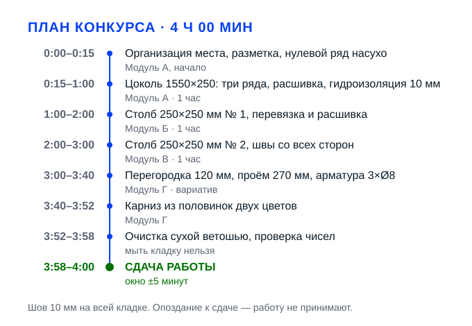
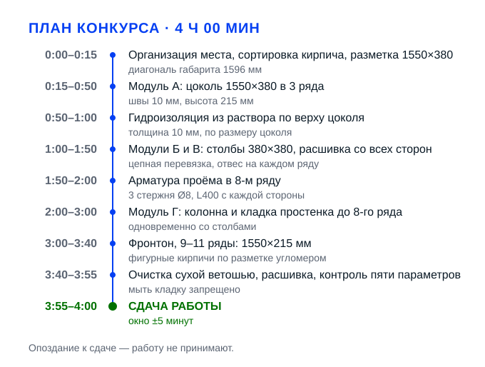
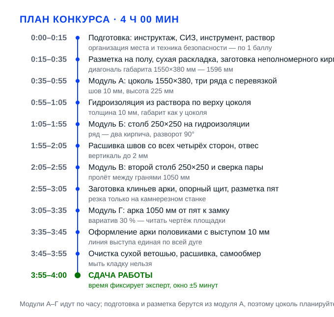

Кирпичная кладка (Р)
Задания ниже — официальные файлы «Абилимпикс» (источник: abilympics-russia.ru), разложенные по категориям. Решения написаны по тексту задания, регламенту и критериям оценки; в них указано, что именно проверяет эксперт.
Школьник
14–16 лет, базовый уровень заданияВыдержка из официального конкурсного задания: страницы, относящиеся к категории «Школьник» (стр. 10–12 источника).
Пошаговое решение
Конкурсное задание категории «Школьники» — модуль «Стена с карнизом»: цоколь длиной 1550 мм и шириной 250 мм из трёх рядов пустотелого кирпича с гидроизоляцией из раствора 10 мм по верху, два столба сечением 250×250 мм по краям цоколя, перегородка толщиной 120 мм с орнаментом из цветного кирпича, проёмом 270 мм в 8-м ряду, перекрытым тремя стержнями диаметром 8 мм и длиной 400 мм, и карниз из половинок кирпича двух цветов. На всё даётся 4 часа: по часу на цоколь, на каждый столб и на перегородку с карнизом. Кладка ведётся на растворе со швом 10 мм, все швы заполняются, расшивка выполняется по заданию, а мыть готовую кладку запрещено — только сухая ветошь. Решение разобрано по шагам: организация места и разметка, цоколь с гидроизоляцией, столбы, перегородка, карниз и сдача. Каждый шаг описан с инструментом, размерами и допусками, которые проверяет эксперт.

Задача 1. Разобрать чертёж, организовать рабочее место и подготовить материалыМодуль А · первый час из четырёх
Первый час уходит не на кладку, а на то, чтобы кладка стала возможной: разобрать чертёж до чисел, разложить инструмент так, чтобы за ним не приходилось тянуться через всю площадку, отобрать кирпич по цвету и размеру и получить раствор нужной подвижности. Всё, что не сделано здесь, отнимается потом из времени кладки: каждая лишняя минута поиска рулетки или пересортировки кирпича — это минус ряд в конце модуля. Именно поэтому задание начинается с организации рабочего места, а не с раствора.
Действие 1.1. Разобрать чертёж до чисел
Шаг 1.1.1
Кладём чертёж модуля на стол, прижимаем грузом, чтобы не сдвигался, и читаем его в одном порядке: сначала габариты, потом сечения, потом узлы. Выписываем на лист ключевые числа этой категории: цоколь длиной 1550 мм и шириной 250 мм, три ряда кладки, столбы 250×250 мм, перегородка толщиной 120 мм и длиной 790 мм, проём шириной 270 мм в 8-м ряду. Отдельно выписываем то, что легко пропустить: гидроизоляция 10 мм по верху цоколя, шов 10 мм, три стержня диаметром 8 мм и длиной 400 мм над проёмом.
Чертёж — единственный документ, по которому потом будут мерить вашу кладку, и все отклонения считают от его размеров, а не от того, что получилось в процессе. Когда числа выписаны на лист, ошибиться в последовательности почти невозможно: вы заранее видите, что гидроизоляция ложится только после третьего ряда, а карниз — только после перегородки. Критерий «соблюдение технологии» оценивают по тому, совпадает ли порядок ваших действий с чертежом.
Проверьте себя так: закройте лист и назовите по памяти пять чисел — длину цоколя, сечение столба, длину перегородки, ширину проёма и толщину шва. Если хотя бы одно приходится подсматривать, выпишите его крупно и положите на видное место у рабочей зоны. Второй признак — вы можете показать на чертеже, над каким рядом встанет арматура.
Типичная ошибка — прочитать чертёж «по диагонали» и начать с кладки, а размеры смотреть по ходу. Тогда первый ряд встаёт по глазомеру, и к третьему ряду накапливается перекос в 15–20 мм: кладку придётся разбирать, а это потеря почти часа. Вторая ошибка — не заметить пометку про 8-й ряд с арматурой и узнать о ней, когда ряд закрыт.
Эксперт подходит в первые десять минут и смотрит, лежит ли чертёж в рабочей зоне и сверяется ли с ним участник, а не работает по памяти. Отдельно он отмечает, выписаны ли размеры.
Шаг 1.1.2
Составляем на листе порядок работы и распределение времени: четыре модуля по часу, и внутри первого часа первыми идут разметка и нулевой ряд насухо, потому что ошибку в разметке дешевле найти на сухом кирпиче, чем на растворе. Записываем цепочку: цоколь три ряда, расшивка, гидроизоляция 10 мм, столбы на гидроизоляцию, перегородка с проёмом в 8-м ряду, карниз. Рядом столбиком выписываем контрольные точки: после первого ряда — длина 1550 мм, после третьего — горизонталь под гидроизоляцию, после восьмого — уложенная арматура.
Порядок в задании жёсткий: гидроизоляция физически не ляжет раньше третьего ряда, а карниз нельзя начать, пока не закрыт проём. Если цепочка записана, вы не тратите время на раздумья у ящика с раствором и не делаете разборку. Отдельно это важно для модуля Г: задание разрешает выполнять его последовательно с модулями Б и В, и решение об этом нужно принять заранее, а не за двадцать минут до сдачи.
Проверьте лист: в нём есть все четыре модуля, у каждого свой час, и ни один шаг не стоит раньше того, без которого он невозможен. Хороший признак — вы можете за минуту рассказать порядок вслух, не подглядывая: цоколь, расшивка, гидроизоляция, столбы, перегородка, карниз.
Типичная ошибка — начать с раствора, «пока силы есть», а разметку и нулевой ряд отложить. Тогда первые кирпичи ложатся по глазомеру, цоколь уходит в сторону на 10–15 мм, и вся конструкция выше встаёт с перекосом, который видно на отвесе. Исправлять это приходится разборкой трёх рядов.
Эксперт смотрит, есть ли у участника письменный план и совпадает ли фактическая последовательность с заданием. Расхождение в порядке модулей он фиксирует как нарушение технологии.
Шаг 1.1.3
Отдельно проходим по чертежу и отмечаем всё, что нужно подготовить заранее: цветной контрастный кирпич на орнамент перегородки и на карниз, половинки для карниза, три стержня диаметром 8 мм и длиной 400 мм, раствор для гидроизоляционного слоя. Цветной кирпич отбираем двух контрастных тонов, чтобы орнамент читался с трёх метров, а не сливался в одно пятно. Всё подготовленное складываем в одну зону, которую видно с рабочего места.
Орнамент из цветного кирпича — часть требования «в сочетании двух цветов», и если оттенки подобраны «что осталось», рисунок на стене прочитается иначе, чем на чертеже. Арматура и половинки — те позиции, которые невозможно сделать в последний момент: стержни нужны готовыми к 8-му ряду, половинки — к карнизу, и то и другое делается заранее и не спеша.
На площадке лежит отдельная стопка цветного кирпича двух тонов, три стержня отмерены и проверены рулеткой на 400 мм, половинки нарезаны с запасом. Всё перечисленное можно показать эксперту, не отходя от рабочего места.
Самый частый промах — обнаружить, что цветной кирпич одного тона, когда перегородка выложена на четыре ряда. Переделка орнамента означает разборку середины стены и потерю 20–30 минут, которых в четырёх часах просто нет.
Эксперт проверяет комплектность подготовленных элементов, когда обходит площадку в начале модуля. Отсутствие арматуры на видном месте он отмечает сразу.
Действие 1.2. Организовать рабочее место и разложить инструмент
Шаг 1.2.1
Ставим поддон с кирпичом слева от себя на расстоянии 0,5–0,7 м, растворный ящик — справа, на таком же расстоянии, чтобы за кирпичом и за раствором не приходилось делать больше одного шага. Штабель не поднимаем выше 1,5 м и не ставим выше уровня глаз: с высокой стопки кирпич падает на ноги, с низкой вы тратите силы на лишние наклоны. Проход между поддоном и стеной оставляем свободным не уже 0,7 м.
Организация рабочего места — отдельный пункт задания, и оценивают её не по красоте, а по потерям времени: при правильной расстановке на один кирпич уходит 8–10 секунд, при неправильной — вдвое больше. За четыре часа эта разница превращается в два-три недовыложенных ряда, то есть в прямой минус по результату модуля.
Встаньте на рабочее место: кирпич и раствор достаются без шага, инструмент — без наклона, ничего не приходится переступать. Между поддоном и ящиком остаётся место, куда вы ставите ногу, когда работаете на уровне второго и третьего ряда.
Ошибка — поставить поддон за спиной или вплотную к стене: каждый кирпич приходится брать с разворотом корпуса, а на сотне кирпичей это усталость и сбитый темп. Вторая — держать раствор далеко и носить его ведром на каждый ряд, теряя по две-три минуты на ряд.
Эксперт оценивает организацию места в первые минуты, а потом смотрит, не переставляет ли участник всё заново на середине работы. Перестановки — признак того, что место было организовано неверно.
Шаг 1.2.2
Раскладываем инструмент в том порядке, в каком он понадобится: кельма и молоток-кирочка под рукой справа, уровень длиной 1,2 м и правило 1,5 м — на подставке, чтобы не лежали на кирпиче, рулетка 5 м и угольник — в кармане фартука, отвес и шнур-причалка со шпильками — на видном месте. Расшивку для швов кладём рядом с кельмой, ветошь и щётку — в отдельную зону, чтобы сухая ткань не пачкалась о раствор. Пустые ведра и обрезки убираем из рабочей зоны сразу.
Инструмент, за которым нужно наклоняться или идти, крадёт время на каждом кирпиче: уровень нужен не реже одного раза в два-три кирпича, а отвес — на каждом углу. Кроме того, инструмент, брошенный на кирпич или в раствор, портится сам и пачкает лицевую грань, которую потом придётся чистить сухой ветошью, потому что мыть кладку запрещено.
Проверьте себя просто: возьмите любой инструмент, не глядя, — он должен оказаться там, где вы его искали. Уровень, правило и рулетка лежат отдельно от раствора и не касаются мокрой поверхности. Кельма не валяется в ящике, а лежит на борту или на подставке.
Классика — держать уровень прямо на растворе: он пачкается, а потом вы носите раствор по всей кладке и чистите лицевые грани. Вторая ошибка — оставить рулетку в другом конце площадки и бегать за ней после каждого ряда вместо того, чтобы держать её в кармане фартука.
Эксперт отмечает, лежит ли инструмент в рабочей зоне и в каком он состоянии: чистый уровень и целая кельма читаются как профессиональная привычка. Отдельно он смотрит, чем участник подрезает раствор: чистой кельмой или той, что лежит в грязи.
Шаг 1.2.3
Надеваем средства индивидуальной защиты: перчатки, закрытую обувь на нескользящей подошве, при рубке кирпича — защитные очки. Проверяем инструмент до старта: ручка кирочки сидит плотно и не разбита, кельма не качается на черенке, у уровня нет сколов на глазке, шнур-причалка не растянут. Свет должен падать на лицевую плоскость сбоку, а не в глаза: при боковом свете видно отклонение в 2–3 мм, при свете в лицо — нет.
Требования охраны труда прописаны в задании отдельным пунктом, и нарушение по средствам защиты снимает баллы независимо от качества кладки. Очки при рубке — не формальность: осколок кирпича летит именно в сторону глаз, потому что удар наносится по касательной. Исправный инструмент — это ещё и точность: разбитая ручка кирочки уводит удар, и скол идёт по лицевой грани.
Проверьте три вещи: перчатки на руках, очки на месте до первого удара кирочкой, обувь сухая. Возьмите инструмент в руки и слегка пошатайте: люфт в ручке означает замену, а не «поработаю аккуратно». Свет проверяется так: поднесите уровень к стене — тень от него должна быть чёткой.
Работать в открытой обуви или без перчаток — прямое нарушение, которое эксперт фиксирует без обсуждения. Вторая ошибка — начать рубить кирпич, не надев очки, «только один», и получить осколок в лицо или в глаз. Третья — работать разбитой кирочкой: скол идёт не по риске.
Эксперт проверяет средства защиты до старта и отдельно — в момент рубки кирпича. Отсутствие очков при рубке он отмечает, даже если всё остальное в порядке.
Действие 1.3. Отсортировать кирпич и подготовить раствор
Шаг 1.3.1
Разбираем поддон и отбраковываем кирпич по трём признакам: сколы на лицевых гранях, трещины и кривизна. Размеры проверяем выборочно, десятком кирпичей: длина 250 мм, ширина 120 мм, толщина 65 мм, отклонение больше 3 мм уже мешает держать шов 10 мм. Отдельно отбираем кирпич одинакового тона для лицевой кладки и два контрастных тона для орнамента и карниза: разница в оттенке между партиями на стене видна сильнее, чем на поддоне.
Цветность и размер — прямое указание задания при сортировке, и это не эстетика: кирпич с отклонением 5 мм не даёт выдержать шов 10 мм по всей длине ряда, приходится либо расширять шов, либо выводить перекос. Отбраковка заранее экономит время: сколотый кирпич, попавший в стену, приходится снимать уже вместе с раствором и с риском повредить соседние.
На поддоне три стопки: лицевой кирпич одного тона, цветной двух оттенков и отбраковка. Десяток кирпичей из лицевой стопки, проверенных рулеткой, дают 250±3 мм и 120±3 мм. Сколов на лицевой грани нет, трещин нет — проверьте, постучав кирпич о кирпич: треснувший звучит глухо.
Не проверить партию и положить в лицевую версту кирпич с отколотым углом: скол виден на стене сразу, а снять такой кирпич без повреждения соседних почти невозможно. Вторая ошибка — перемешать оттенки из разных партий, и стена получается пятнистой, что читается как небрежность.
Эксперт смотрит на лицевую поверхность кладки и на однородность цвета. Пятнистость и сколы на лице он читает как следствие небрежной сортировки. Если после проверки партии остались сомнительные кирпичи на лицевой стороне, он спросит, почему они там оказались.
Шаг 1.3.2
Перелопачиваем раствор в ящике лопатой до однородного состояния, при необходимости добавляем воду и перемешиваем ещё раз. Подвижность проверяем стандартным конусом: осадка должна быть 6–8 см — это тот раствор, который держит грядку и не течёт с кельмы. Комков быть не должно: раздавленный комок даёт пустоту в шве, а пустой шов — это брак по заполнению, который видно после расшивки.
Кладка ведётся на шов 10 мм, и подвижность раствора определяет, сядет ли кирпич на нужную высоту от одного удара киянкой. Густой раствор не заполняет вертикальный шов, жидкий вытекает из-под кирпича и пачкает лицевую грань, которую потом нельзя мыть. Заполнение швов — отдельный критерий качества, и проверить его можно только по уже уложенному ряду.
Раствор блестит, не расслаивается, на кельме держится грядкой и не стекает струёй. Сжатый в перчатке, он формуется в комок, а не расходится. Через 15 минут после перемешивания на поверхности не появляется вода — если появилась, раствор расслаивается и его надо перелопатить.
Работать на растворе, простоявшем два часа: он начал схватываться, плохо заполняет швы, и кирпич садится неравномерно. Вторая ошибка — доливать воду в загустевший раствор: прочность падает, и шов крошится при расшивке, оставляя рваные края.
Эксперт проверяет подвижность раствора и то, перемешивают ли его в процессе. Загустевший раствор, в который доливают воду, он отмечает как нарушение технологии.
Шаг 1.3.3
Раскладываем кирпич по фронту работ с запасом на два-три ряда вперёд: лицевой гранью вверх, тычковой стороной к себе, чтобы брать его без разворота в руке. Кирпич для орнамента ставим отдельной стопкой у того места, где он пойдёт в дело. Общий запас на весь модуль держим на поддоне в стороне, а не под ногами: поддоны не должны стоять в проходе. Поддоны ставим так, чтобы они не перекрывали разметку на полу и не мешали ставить ногу.
Раскладка по фронту экономит до четверти времени кладки, потому что кирпич берётся в нужной ориентации и не переворачивается в руке. Кроме того, заранее разложенный кирпич показывает, хватает ли его на ряд, и вы видите нехватку до того, как ряд начат, а не после.
Перед каждым рядом в зоне досягаемости лежит нужное количество кирпича нужного цвета. Проверьте, что путь к поддону не перекрыт и что кирпич не лежит на разметке на полу — иначе её сотрут за первые же минуты.
Брать кирпич из общей кучи и каждый раз разворачивать его в руке: теряется темп, а на лицевой грани остаются следы раствора с перчаток. Вторая ошибка — выложить весь кирпич под ноги, и к третьему ряду рабочая зона превращается в склад, по которому не пройти.
Эксперт обращает внимание на то, как организован запас кирпича: аккуратные стопки по цвету читаются как понимание процесса, а не как импровизация. Ещё он смотрит, не перекрыт ли проход к поддону: это вопрос и организации, и безопасности.
Задача 2. Разметить конструкцию на полу и выложить нулевой ряд насухоМодуль А · разметка и нулевой ряд
Нулевой ряд — это фундамент точности всей конструкции: он задаёт длину 1550 мм, ширину 250 мм и прямой угол, от которого потом считаются и столбы, и перегородка. Сначала разметка на полу, потом сухая раскладка без раствора, потом закладка углов и причалка — три прохода по одному и тому же месту, каждый дешевле предыдущего. Разметку, проверенную на сухом кирпиче, уже не исправить, когда пойдёт раствор.
Действие 2.1. Разметить конструкцию на полу
Шаг 2.1.1
Отбиваем на полу базовую линию: отмеряем рулеткой 1550 мм вдоль будущей стены, ставим две метки карандашом или мелком и соединяем их отбивкой шнура. Вторую линию проводим параллельно первой на расстоянии 250 мм — это ширина цоколя. Линии ведём по сухому чистому полу, пыль сдуваем щёткой: на пыли мел не держится, а карандаш стирается под подошвой за первые минуты.
Разметка на полу — единственная система координат, к которой вы будете возвращаться весь конкурс: по ней проверяют длину модуля, по ней выставляют столбы. Ошибка в 10 мм на этом этапе превращается в перекос всей конструкции, и стоит он уже не минуты, а разборки трёх рядов кладки.
Обе линии читаются по всей длине, расстояние между ними 250±2 мм, длина базовой линии 1550±2 мм. Проверьте рулеткой в трёх точках — в начале, в середине и в конце, потому что отбивка шнура на неровном полу иногда даёт дугу.
Отбить линию на глаз, «по кирпичу»: первый же ряд встаёт с перекосом, и дальше вся стена уходит в сторону. Вторая ошибка — рисовать линии там, где вы стоите, и стирать их ногами в первые минуты, после чего проверять размеры становится не от чего.
Эксперт подходит к разметке до начала кладки и проверяет её рулеткой. Разметку «на глаз» он видит по несовпадению габаритов цоколя с чертежом. Если разметка на полу и габариты цоколя расходятся, он попросит участника показать, от чего он мерил.
Шаг 2.1.2
Выставляем прямой угол методом 3–4–5: от угловой точки откладываем 900 мм по одной линии и 1200 мм по другой, расстояние между метками должно получиться 1500 мм. Если не сходится — сдвигаем линию и повторяем, пока не получим 1500±3 мм. Для контроля прямоугольника 1550 на 250 мм измеряем диагонали: они должны быть равны 1570 мм. Метки ставим тонко заточенным карандашом, чтобы линия не расплывалась под шнуром.
Кладка начинается с углов, и если угол не прямой, каждый следующий ряд уводит стену вкось, а столбы встают не на своих местах. Метод 3–4–5 работает без угломера и даёт точность, достаточную для кладки: треугольник с катетами 900 и 1200 мм всегда имеет гипотенузу 1500 мм.
Две диагонали прямоугольника дают одно и то же число — 1570±3 мм. Угольник 500 мм, приложенный к углу, не показывает просвета больше 1 мм. Обе линии остались на месте, их не затоптали и не залили раствором.
Проверить только один угол и забыть про второй: конструкция получается трапецией, и перегородка потом не встаёт по чертежу. Вторая ошибка — мерить диагонали по неровному полу и гоняться за несуществующей разницей в 2 мм, теряя на этом полчаса.
Эксперт проверяет геометрию разметки до кладки и повторно — по готовому цоколю. Расхождение диагоналей он измеряет той же рулеткой, что и вы. При расхождении диагоналей он просит повторить замер вслух и объяснить, какой угол выправлен.
Шаг 2.1.3
Закрепляем разметку так, чтобы она дожила до конца работы: обводим линии маркером по бетону, а на углах ставим маячные кирпичи без раствора — они работают как реперы, к которым возвращается рулетка. Если пол неровный, под маячные кирпичи подкладываем тонкую рейку и проверяем их уровнем: репер должен стоять устойчиво и не качаться под рукой. Реперы не убираем до конца модуля, даже когда кладка поднята выше них.
Разметка, которая стёрлась к третьему часу, обнуляет всю работу по контролю размеров: проверять становится не от чего. Маячные кирпичи на углах дают две точки, между которыми натягивается причалка, и именно они переносят прямой угол с пола на кладку, не давая ему потеряться в растворе.
На каждом углу стоит маячный кирпич, линии под ним видны и не размазаны. Проверьте уровнем: маяки стоят горизонтально, без качания. Рулетка от маяка до маяка даёт 1550 мм, диагонали — 1570 мм. Если маяк качается, подкладка слишком толстая.
Разметить мелом по пыльному полу и потерять линии после первого же ряда: дальше размеры проверяют по памяти, и цоколь уходит на 10–15 мм. Вторая ошибка — поставить маяки на раствор: они схватятся и помешают первому ряду кладки.
Эксперт смотрит, сохранилась ли разметка к моменту проверки размеров и есть ли на площадке видимые реперы. Их отсутствие он отмечает, когда просит участника проверить габариты.
Действие 2.2. Выложить нулевой ряд насухо
Шаг 2.2.1
Раскладываем первый ряд без раствора, тычком, начиная от углового маяка: двенадцать кирпичей по 120 мм и одиннадцать швов по 10 мм дают ровно 1550 мм — это и есть проверка длины. Швы выставляем одинаковыми, контролируя их двумя рейками по 10 мм, а после раскладки промеряем ряд рулеткой от края до края. Кирпич кладём той же стороной, которой он потом встанет в стену.
Сухая раскладка — единственный способ проверить, что чертёж сходится с кирпичом, до появления раствора. Именно здесь видно, нужны ли доборные кирпичи и где именно встанет половинка; на растворе эта проверка уже не делается без разборки, потому что снять кирпич, не повредив соседние, почти невозможно.
Длина ряда 1550±3 мм, все вертикальные швы одинаковой ширины — около 10 мм, крайние кирпичи не выходят за линии разметки. Ряд читается как ровная линия без уступов, если посмотреть вдоль него с уровня пола.
Начать кладку на растворе, не разложив ряд: тогда длина набирается «как получится», и в конце оказывается 1530 или 1570 мм. Вторая ошибка — сделать швы по 15 мм, чтобы дотянуть до нужной длины: такой ряд потом видно по расшивке, профиль шва получается широким и рыхлым.
Эксперт оценивает точность первого ряда и одинаковость швов. Ряд с разнобойными швами он видит без рулетки, по ритму кладки. Отдельно он смотрит на ритм кладки: одинаковые швы читаются как ровная штриховка.
Шаг 2.2.2
Проходим по ряду и подбираем кирпич на лицевую сторону: ровные грани, одинаковый тон, без сколов на углах. Угловые кирпичи ставим самые ровные — они формируют вертикаль, по которой потом проверяют весь угол. Кирпич с мелкими дефектами откладываем в ту часть ряда, которая уйдёт под столб или под перегородку, где его не будет видно. Кирпич с пятнами соли или следами раствора тоже уводим с лицевой стороны.
Лицевая поверхность кладки — часть оценки, и три-четыре кирпича с отколотыми углами на видном месте портят впечатление от всей стены. Угловые кирпичи важнее остальных: именно по ним выставляют отвес, и скол на углу читается как кривизна всей кладки. Кроме того, одинаковый тон на лице читается как единая плоскость, а разнобой дробит стену.
Пройдите вдоль ряда глазами на уровне кладки: сколов и пятен на лице нет, тон одинаковый, угловые кирпичи целые. Если присесть и посмотреть вдоль ряда, не видно выступающих граней и уступов больше 1 мм.
Отложить подбор «на потом» и поставить сколотый кирпич на угол: снять его с раствора без повреждения соседей почти невозможно, а оставить — потерять балл за качество лицевой поверхности. Вторая ошибка — перемешать тона на лицевой стороне.
Эксперт осматривает лицевую поверхность с расстояния и отдельно — углы. Сколы на углах он фиксирует как дефект, даже если геометрия в порядке. На углы он смотрит дважды: сразу после ряда и в конце модуля, когда кладка уже поднята.
Шаг 2.2.3
Снимаем разложенный ряд в порядке укладки и складываем рядом стопкой: первый кирпич сверху, последний снизу, чтобы потом брать их в том же порядке. На полу отмечаем положение крайних кирпичей — две короткие засечки маркером, по которым вы выставите первый и последний кирпич на растворе. Тут же проверяем, что засечки совпадают с линиями разметки. Стопку ставим там, где она не мешает ставить ногу у рабочей зоны.
Порядок снятия экономит время на укладке: кирпич не перебирается в руках, а берётся сразу нужный. Засечки нужны потому, что после нанесения раствора линии разметки на полу закроются, и держать габарит станет нечем — а именно от него отсчитываются все следующие ряды.
Стопка сложена в порядке укладки, засечки на полу видны и совпадают с концами размеченной линии. Вы можете назвать, сколько кирпичей в ряду и сколько швов, не подглядывая в раскладку. Стопка не должна стоять на разметке.
Свалить ряд в общую кучу: на растворе вы будете искать нужный кирпич и терять по пять-семь секунд на каждом. Вторая ошибка — не сделать засечек и после первого кирпича потерять габарит, а вместе с ним и контроль длины.
Эксперт смотрит, сохраняется ли порядок в работе: аккуратная стопка и засечки — признак того, что участник управляет процессом, а не реагирует на него.
Действие 2.3. Заложить углы и выставить причалку
Шаг 2.3.1
Ставим угловые кирпичи на раствор: наносим постель толщиной 20–25 мм, разравниваем кельмой до 15 мм, укладываем кирпич по засечке и осаживаем рукояткой кельмы или резиновой киянкой до высоты 65 мм плюс шов. Проверяем уровнем в двух направлениях — вдоль стены и поперёк, — добиваясь, чтобы пузырёк стоял по центру. Постель под угловой кирпич наносим шире его на 20 мм, чтобы раствор вышел в шов.
Углы — это те две точки, между которыми натягивается причалка, и вся стена потом идёт по ним. Ошибка в 3 мм на угле даёт на середине стены провис или горб, потому что шнур натянут между углами и повторяет их ошибку, а не исправляет её. К тому же по угловым кирпичам проверяют горизонтальность и вертикальность сразу.
Оба угловых кирпича стоят на одном уровне: проверьте правилом, положенным сразу на оба, или уровнем поочерёдно. Пузырёк в центре в обоих направлениях, кирпич не качается при нажатии ладонью и не «пружинит».
Поставить один угол и сразу натянуть шнур, не выверив второй: кладка идёт по наклонной линии, и потом приходится поднимать или опускать весь ряд. Вторая ошибка — осаживать кирпич ударом кельмы по лицевой грани: остаётся вмятина и скол.
Эксперт проверяет углы уровнем и отвесом в первую очередь: именно по ним он судит о кладке в целом, а не по середине стены. Он же проверяет, не сбит ли угол на втором-третьем ряду: ошибка в основании идёт вверх.
Шаг 2.3.2
Натягиваем шнур-причалку между угловыми кирпичами на высоте ряда, отступив от верхней грани 2–3 мм: шнур не должен лежать на кирпиче, иначе он не показывает линию. Провис проверяем на середине — он не должен превышать 2 мм, при большем провисе подтягиваем шнур и ставим промежуточный маяк. Крепим шнур шпильками или зажимами, а не наматываем на кирпич.
Причалка — единственная гарантия того, что ряд будет прямым по всей длине: глазомер на дистанции 1,5 м ошибается на 2–3 мм, а шнур показывает плоскость. Провис больше 2 мм означает, что середина стены окажется ниже углов, и следующий ряд ляжет на неровную постель.
Шнур натянут, не касается кладки, на середине провис не больше 2 мм. Отойдите на два метра и посмотрите вдоль шнура: он должен читаться как одна прямая линия без утолщений и изломов на маяках. Проверьте провис ещё раз после первого ряда.
Натянуть шнур на глаз без проверки провиса: на длине 1550 мм провис в 5 мм даёт волну по верху кладки, которую видно на правиле. Вторая ошибка — крепить шнур к кирпичу, который ещё не схватился: кирпич сдвигается, и линия уходит.
Эксперт смотрит, пользуется ли участник причалкой вообще: кладка по шнуру и кладка по глазомеру различаются ровностью линии, и это видно издалека. Если шнур лежит на кладке или закреплён за кирпич, он отмечает это как нарушение приёма.
Шаг 2.3.3
Проверяем габариты до начала кладки на растворе: длину 1550 мм рулеткой от внешней грани до внешней грани угловых кирпичей, ширину 250 мм — поперёк, диагонали — 1570 мм. Результат запоминаем или записываем: к этим числам вы вернётесь после каждого третьего ряда. Если что-то не сходится, правим сейчас, пока на площадке лежат только два кирпича на растворе.
Три числа — длина, ширина, диагональ — полностью описывают геометрию цоколя, и проверять их дешевле в начале. Каждое отклонение, найденное после третьего ряда, стоит разборки, а отклонение, найденное сейчас, — это сдвинутый на 3 мм кирпич и минута работы.
Длина 1550±3 мм, ширина 250±3 мм, диагонали равны между собой с точностью до 3 мм. Угловые кирпичи стоят на линии разметки, а не рядом с ней: проверьте, что грань касается линии, а не перекрывает её краем.
Проверять только длину и не смотреть диагонали: прямоугольник с равными сторонами может быть ромбом, и перегородка потом не встанет по чертежу. Вторая ошибка — мерить от края раствора, а не от грани кирпича, и получить лишние 5 мм.
Эксперт фиксирует результат первичной проверки геометрии и сравнивает его с итоговым. Если числа совпадают, видно, что участник контролировал кладку, а не надеялся на глаз.
Задача 3. Выложить цоколь 1550×250 с расшивкой и устроить гидроизоляциюМодуль А · 1 час · цоколь
Цоколь — три ряда кладки на растворе со швом 10 мм, с расшивкой швов и слоем гидроизоляции 10 мм сверху. Это модуль, на котором задаётся вся геометрия конструкции: по цоколю встают столбы, по нему проверяют горизонтальность карниза. Работа идёт по одной повторяющейся схеме: постель 15 мм, посадка кирпича по причалке, контроль уровнем, подрезка раствора — и так двенадцать кирпичей в ряду, три раза подряд.
Действие 3.1. Выложить первый ряд цоколя по причалке
Шаг 3.1.1
Берём раствор кельмой из ящика, укладываем грядку вдоль линии кладки и разравниваем её тыльной стороной кельмы до 15 мм, не доводя до края разметки 10 мм, чтобы раствор не свисал с лицевой грани. Грядка должна быть шире кирпича на 20–30 мм — тогда при посадке раствор выдавится в вертикальный шов, а не оставит там пустоту. Грядку тянем на два-три кирпича вперёд, не больше.
Слой 15 мм — это запас на осадку: при посадке кирпич выдавливает лишнее, и шов сжимается до расчётных 10 мм. Если положить сразу 10 мм, шов окажется недозаполненным сверху, и после расшивки в нём будут раковины, что прямо снижает оценку за заполнение швов и их однородность.
Грядка ровная, одинаковой высоты по всей длине, без разрывов и комков. На полосе разметки раствора нет. Проверьте кельмой: она входит в грядку с небольшим усилием, а не проваливается до основания и не скользит по поверхности.
Намазывать раствор тонким слоем, «чтобы не выдавливало»: шов получается пустым, и после расшивки он крошится. Вторая ошибка — нанести грядку сразу на три-четыре кирпича: раствор схватывается за 10–15 минут, и кирпич уже не садится на нужную высоту, а ложится сверху.
Эксперт смотрит на постель в момент укладки: разравнивает ли участник раствор и держит ли одинаковую толщину на всей длине ряда. Он также смотрит, не наносится ли раствор на несколько кирпичей вперёд: это ошибка темпа.
Шаг 3.1.2
Берём кирпич двумя руками за торцы, подносим к месту укладки и опускаем на постель, прижимая к ранее уложенному кирпичу так, чтобы вертикальный шов заполнился выдавленным раствором. Осаживаем рукояткой кельмы или резиновой киянкой до уровня причалки, проверяем уровнем вдоль ряда и поперёк, при необходимости подбиваем киянкой с нужной стороны. Способ посадки — вприжим, с заводом раствора кельмой на тычковую грань соседнего кирпича.
Прижим к соседнему кирпичу — это и есть заполнение вертикального шва: если просто положить кирпич сверху, вертикальный шов останется пустым, а задание требует, чтобы все швы были заполнены раствором. Проверка уровнем в двух направлениях нужна потому, что кирпич может сесть ровно вдоль ряда, но завалиться поперёк.
Верх кирпича на 2–3 мм ниже шнура по всей длине, шов с соседним кирпичом заполнен на всю высоту и подрезан. Пузырёк уровня в центре и вдоль, и поперёк. Кирпич не качается под ладонью и не издаёт глухого звука при простукивании.
Класть кирпич сверху, без прижима: вертикальные швы остаются пустыми, и это видно после расшивки как тёмные щели между кирпичами. Вторая ошибка — выравнивать ударом кельмы по лицевой грани: остаётся вмятина и скол, который уже не заделать.
Эксперт наблюдает за посадкой кирпича: проверяет ли участник уровень после каждого кирпича или только в конце ряда, когда исправлять уже поздно. Если участник выравнивает кирпич по шнуру, но не проверяет поперечный уровень, он видит это по завалу ряда.
Шаг 3.1.3
Подрезаем выдавленный раствор кельмой заподлицо с лицевой плоскостью, ведя кельму наклонно, а не плашмя, и сбрасываем излишки обратно в ящик. Не размазываем раствор по лицу кирпича: тонкая плёнка затирается в поры и снимается только сухой ветошью, а мыть кладку запрещено. Раствор, упавший на пол, убираем сразу, пока он не затоптан. Кельму после подрезки протираем ветошью, иначе она тянет раствор за собой.
Подрезка в лицо оставляет лицевую поверхность чистой, а это часть оценки внешнего вида кладки. Размазанный раствор портит вид и мешает расшивке: расшивка идёт по чистому шву и рвёт плёнку, оставляя рваные края, которые читаются как небрежность. Чистая лицевая грань нужна и для расшивки: по грязному краю профиль не читается.
Лицевая грань чистая, шов подрезан вровень, излишков раствора на полу нет. Проведите пальцем в перчатке по шву: он должен быть плотным, без наплывов и резких перепадов высоты. Кельма после подрезки должна быть чистой.
Размазать раствор кельмой по лицу, «чтобы шов казался полнее»: стена получает серые разводы, которые нельзя смыть. Вторая ошибка — оставлять наплывы до конца модуля: они схватываются и скалываются вместе с лицевой гранью кирпича.
Эксперт осматривает лицевую поверхность по ходу кладки и в конце. Разводы от раствора он считает дефектом отделки, а не мелочью. Особенно внимательно он смотрит на шов после подрезки: рваный край выдаёт позднюю подрезку.
Действие 3.2. Закрыть ряд и проверить толщину, горизонт и плоскость
Шаг 3.2.1
Уложив последний кирпич ряда, проверяем длину рулеткой: 1550 мм по внешним граням, отклонение не больше 3 мм. Затем прикладываем правило 1,5 м вдоль верха ряда и смотрим просвет: он не должен превышать 2 мм на всей длине. Уровень ставим на правило, а не на отдельный кирпич, чтобы не ловить неровности одного кирпича вместо плоскости всего ряда. Замер повторяем после каждого ряда, а не только в конце модуля.
Правило показывает плоскость всего ряда, а уровень на одиночном кирпиче — только его самого. Критерий оценки включает горизонтальность и плоскость поверхности, и проверяют их именно правилом с уровнем: 2 мм просвета на 1,5 м — это порог, выше которого отклонение уже видно глазом на расстоянии.
Длина 1550±3 мм, просвет под правилом не больше 2 мм, пузырёк уровня в центре. Проверьте ширину: рулетка поперёк ряда даёт 250±3 мм. Правило прикладываем в двух положениях — вдоль ряда и наискось. Просвет смотрите на уровне глаз.
Проверять только длину и не смотреть плоскость: ряд может быть ровным в плане, но с горбом в середине, и следующий ряд ляжет на неровную постель, а шов станет 15 мм вместо 10. Вторая ошибка — мерить правилом по раствору, а не по кирпичу.
Эксперт повторяет эту проверку своим правилом и уровнем. Расхождение в 3–4 мм он фиксирует как отклонение по горизонтали, даже если визуально ряд ровный.
Шаг 3.2.2
Проверяем вертикальность торцов: прикладываем отвес к угловому кирпичу или ставим уровень вертикально на торец, добиваясь, чтобы пузырёк был в центре. Если торец завален, осаживаем или приподнимаем кирпич, подкладывая раствор, пока торец не встанет по отвесу. Проверяем оба торца цоколя, а не только тот, что ближе к вам. Отвес держим на весу, не давая нитке касаться кладки.
Вертикальность торцов задаёт плоскость, к которой потом пристраиваются столбы: столб, поставленный к заваленному торцу, получит зазор или напуск. Вертикальность входит в перечень контролируемых параметров задания наравне с длиной и горизонталью, и проверяют её на каждом углу.
Отвес, опущенный с верхнего торца, проходит в 1–2 мм от нижней грани. Уровень, приложенный вертикально к торцу, показывает пузырёк в центре. Оба торца проверены, нитки отвеса не касаются кладки. Нитка отвеса не должна касаться кладки.
Проверить вертикаль только по одному торцу: второй заваливается незаметно, и на третьем ряду расхождение достигает 5–7 мм. Вторая ошибка — выравнивать торец, подбивая кирпич сбоку: он сдвигает соседей и рвёт вертикальные швы.
Эксперт прикладывает отвес к торцам цоколя и к углам столбов. Завал в 5 мм он видит без линейки, по просвету между ниткой и кладкой. Он же смотрит на торец в конце работы: по нему видно, держал ли участник вертикаль с первого ряда.
Шаг 3.2.3
Проверяем толщину горизонтального шва: рулеткой или штангенциркулем на нескольких кирпичах измеряем расстояние между рядами, оно должно быть 10 мм; при трёх рядах высота цоколя получается 3 умножить на 65 плюс 2 шва по 10, то есть 215 мм. Если шов вышел 12–13 мм, следующий ряд поднимется, и общая высота уйдёт от чертежа. Меряем в трёх местах по длине ряда.
Шов 10 мм задан в задании и проверяется на всех швах — и горизонтальных, и вертикальных. Высота цоколя 215 мм — расчётная величина, от которой зависит, на какой отметке встанут столбы и как ляжет карниз, поэтому контроль шва по высоте — это контроль всей конструкции, а не одной линии.
Высота трёх рядов 215±5 мм, отдельные швы 10±2 мм. Проверьте у торцов и в середине: если числа расходятся, значит постель где-то положена толще, и это надо выправить на следующем ряду. Считайте высоту вместе со швами.
Не контролировать шов по высоте и получить цоколь 230 мм вместо 215: столбы встанут выше, перегородка не сойдётся с проёмом по чертежу, а гидроизоляция окажется не на своём уровне. Карниз потом уже не исправить.
Эксперт измеряет высоту кладки и толщину швов выборочно, в двух-трёх местах. Разница в 10 мм по высоте модуля считается отклонением, а не рабочей погрешностью.
Действие 3.3. Выложить второй и третий ряды с перевязкой и расшивкой
Шаг 3.3.1
Второй ряд начинаем с доборного кирпича 60 мм, чтобы вертикальные швы не совпали со швами первого ряда, и ведём кладку в том же порядке: постель 15 мм, посадка по причалке, контроль уровнем, подрезка раствора. Перевязку проверяем визуально: каждый вертикальный шов второго ряда должен приходиться на середину кирпича нижнего ряда, а не на шов. Добор 60 мм рубим заранее, а не скалываем кирпич на весу.
Совпадение вертикальных швов по высоте — это то, чего не должно быть: стена разваливается по шву на отдельные столбики, и нагрузка от карниза передаётся не на всю кладку. Перевязка швов — обязательный признак правильной кладки, и её видно без инструментов, с расстояния двух метров.
Пройдите взглядом по вертикальным швам сверху вниз: они не образуют непрерывных линий, смещение около 60 мм. Длина ряда по-прежнему 1550±3 мм, потому что добор в начале компенсируется подрезкой в конце.
Начать второй ряд с целого кирпича и получить шов над швом: кладка теряет монолитность, а на фасаде читается вертикальная линия, которую эксперт отмечает как ошибку перевязки. Исправить это можно только разборкой ряда.
Эксперт смотрит на перевязку с расстояния двух метров: непрерывные вертикальные линии швов видны сразу, и никакая расшивка их не скрывает. При перевязке он считает смещение по швам: половина кирпича или четверть — это видно по ритму.
Шаг 3.3.2
Третий ряд выкладываем так же, со смещением швов относительно второго на 60 мм, и на нём особенно внимательно держим верхнюю плоскость: именно по третьему ряду укладывается гидроизоляция, и его верх должен быть ровным. После укладки проходим правилом с уровнем по всей длине, подрезаем раствор и проверяем углы отвесом. Раствор на третьем ряду подрезаем сразу, не оставляя его до расшивки.
Третий ряд — опорная плоскость для гидроизоляции и для столбов: слой раствора 10 мм ляжет ровно только на ровное основание. Кроме того, три ряда — это та высота, на которой по заданию закрывается цоколь и начинается следующий модуль, поэтому верхняя отметка должна совпасть с расчётными 215 мм.
Высота от пола до верха третьего ряда 215±5 мм, просвет под правилом не больше 2 мм, углы вертикальны. Проверьте рулеткой от верха первого ряда до верха третьего: должно быть 150 мм, то есть два кирпича и два шва.
Довести третий ряд «как получится», рассчитывая выровнять всё гидроизоляцией: слой 10 мм не исправит перепад в 8 мм, и столбы встанут с наклоном от самого основания. Вторая ошибка — не подрезать раствор на третьем ряду, и гидроизоляция ложится на бугры.
Эксперт проверяет верхнюю плоскость третьего ряда перед укладкой гидроизоляции. Неровность он измеряет правилом и щупом. Он проверяет верх третьего ряда до гидроизоляции, потому что после неё перепад уже не увидеть.
Шаг 3.3.3
После третьего ряда делаем расшивку швов: берём расшивку нужного профиля, вставляем её в шов и ведём с равномерным нажимом, сначала горизонтальные швы, потом вертикальные. Раствор в шве должен быть слегка подсохшим — при нажатии пальцем он ещё продавливается, но уже не липнет к перчатке. Излишки, выдавленные расшивкой, снимаем кельмой и сметаем щёткой.
Расшивка уплотняет раствор в шве и придаёт ему одинаковый профиль — это отдельный критерий оценки, и делают её по заданию. Если рано, раствор выдавливается и шов получается рваным; если поздно, расшивка крошит схватившийся раствор и оставляет неровные края, которые уже не исправить.
Все швы одинаковой глубины и профиля, без разрывов и наплывов. Проведите пальцем вдоль шва: он ровный, без ступенек. Края кирпича чистые, следов раствора на лицевой грани нет. Профиль одинаков на всех трёх рядах.
Расшивать швы сразу после укладки ряда: раствор ещё пластичный, расшивка вытаскивает его из шва и оставляет раковины. Вторая ошибка — расшить только лицевую сторону и забыть вертикальные швы на торцах, которые тоже видны.
Эксперт осматривает расшивку вблизи и на расстоянии: оценивает одинаковость профиля и чистоту краёв, а не только наличие самой расшивки. На расшивку он смотрит при боковом свете: при нём видно разную глубину шва.
Действие 3.4. Устроить горизонтальную гидроизоляцию толщиной 10 мм
Шаг 3.4.1
Готовим раствор для гидроизоляционного слоя: тот же кладочный раствор, но плотнее, с осадкой конуса 4–5 см, чтобы он не расплывался и держал толщину. Наносим его на верх третьего ряда кельмой и разравниваем правилом по уровню, выставленному по краям, добиваясь толщины ровно 10 мм. Слой ведём от одного торца к другому без перерывов, за один приём. Ящик с раствором держим рядом, чтобы не носить его ведром.
Гидроизоляция из раствора толщиной 10 мм прописана в задании отдельным результатом модуля А, и её размер должен совпадать с размерами цоколя. Плотный раствор нужен потому, что жидкий растечётся и даст 4–5 мм вместо 10, а тонкий слой не держит столбы и трескается при схватывании.
Толщина слоя 10±2 мм — проверяется рулеткой со щупом или штангенциркулем по краю. Верхняя плоскость горизонтальна: уровень, положенный на правило, показывает ноль. Габариты слоя 1550×250 мм совпадают с цоколем.
Нанести раствор на глаз и получить слой 5 мм у одного торца и 15 у другого: столбы встанут с наклоном, а сам слой растрескается при схватывании. Вторая ошибка — размазать раствор за габарит цоколя: наплывы потом скалываются вместе с лицевой гранью.
Эксперт измеряет толщину гидроизоляционного слоя и проверяет его габариты. Расхождение с размерами цоколя он отмечает отдельно, потому что это отдельный результат модуля.
Шаг 3.4.2
Заглаживаем поверхность слоя кельмой круговыми движениями, пока она не станет гладкой и плотной, и сразу проверяем горизонтальность правилом с уровнем по двум направлениям. Края слоя подрезаем кельмой строго по граням цоколя, чтобы не было свисающих наплывов. Свежий слой закрываем от сквозняка, но не накрываем плёнкой вплотную. Заглаживать слой лучше в два прохода: первый выравнивает, второй уплотняет.
Гладкая заглаженная поверхность нужна не для красоты: по ней выставляют первый ряд столба, и бугры в 2–3 мм заставят выравнивать постель под каждый кирпич отдельно, теряя время на первом ряду. Подрезанные края — это соответствие размерам цоколя, которое проверяют рулеткой.
Поверхность гладкая, без раковин и трещин, край ровный по грани цоколя. Правило с уровнем лежит без качания в обоих направлениях, просвет не больше 2 мм. На краю слоя нет свисающих языков раствора. Край слоя ровный по всей длине.
Оставить поверхность шероховатой, рассудив, что «раствор всё равно закроется кладкой»: первый ряд столба ляжет на бугры, и вертикаль уйдёт на 3–4 мм уже на первом ряду, а к десятому это превратится в заметный завал.
Эксперт проводит ладонью по слою и проверяет плоскость правилом. Бугры и раковины он фиксирует как дефект подготовки основания под столбы. Он же проверяет, не затёрт ли слой у краёв: там чаще всего остаются раковины.
Шаг 3.4.3
Пока слой схватывается, убираем площадку: счищаем раствор с кельмы, с пола, с лицевых граней цоколя; подметаем щёткой. Через 40–60 минут, когда слой держит палец, но ещё не затвердел, аккуратно снимаем кельмой случайные наплывы на лицевой грани цоколя. Кладку не мочим: только сухая ветошь и щётка. Ветошь меняем по мере загрязнения, а не работаем одной до конца модуля.
Порядок и чистота площадки входят в оценку организации работы, а наплывы на лицевой грани, застывшие вместе с гидроизоляцией, снимаются потом только вместе с куском лицевой поверхности. Мыть кладку запрещено заданием, поэтому единственный момент, когда наплыв снимается легко, — это первые 40–60 минут после укладки.
Лицевая грань цоколя чистая, на полу нет раствора, инструмент очищен. Наплывов на границе слоя и кирпича нет — проведите пальцем по стыку, он должен быть ровным и сухим. Пол сухой, подтёков нет, ящик закрыт.
Оставить наплывы до конца конкурса: к сдаче они застынут, и снять их можно будет только со сколом лицевой грани, что означает потерю балла за качество поверхности. Вторая ошибка — протереть стену мокрой тряпкой: останутся разводы, которые нельзя убрать.
Эксперт обходит площадку между модулями и смотрит на чистоту рабочей зоны и лицевых граней. Застывшие наплывы он отмечает как дефект. Если наплывы сняты, но остались серые потёртости, он считает это незавершённой очисткой.
Задача 4. Выложить два столба 250×250 мм по гидроизоляцииМодули Б и В · по 1 часу
Столбы встают на гидроизоляцию по краям цоколя, сечение 250×250 мм, шов 10 мм, швы обрабатываются со всех четырёх сторон. Каждый ряд столба — это два кирпича, уложенных длинной стороной вдоль одной грани, между ними шов 10 мм; в следующем ряду пара разворачивается на 90 градусов, и за счёт этого получается перевязка. Вертикальность здесь важнее скорости: столб высотой в десять рядов накапливает ошибку в 2 мм на ряд в 20 мм наверху, и карниз ложится клином.
Действие 4.1. Заложить первый столб на гидроизоляцию
Шаг 4.1.1
Отмеряем от торца цоколя положение столба по чертежу — 250 мм по длине и 250 мм по ширине — и отбиваем его контур на гидроизоляционном слое карандашом. Проверяем угольником: контур должен быть квадратом 250×250 мм с прямыми углами, а его наружные грани — совпадать с гранями цоколя. Линии контура ведём тонко, чтобы не размазать раствор по слою. Карандаш держим тонко заточенным, чтобы линия не уводила на 2–3 мм.
Столб стоит на цоколе, и его наружные грани должны быть заподлицо с гранями цоколя: смещение на 5 мм читается как уступ на фасаде, и никакая расшивка это не скроет. Контур, отбитый на слое, даёт привязку на все восемь-десять рядов вперёд, и именно по нему вы проверяете вертикальность, когда кладка поднимется выше глаз.
Контур 250×250 мм, диагонали квадрата равны 354 мм, углы прямые по угольнику. Грани столба совпадают с гранями цоколя — проверьте правилом, приложенным к плоскости цоколя: оно должно касаться и грани столба без зазора.
Начать кладку столба «от угла цоколя» без контура: первый ряд встаёт со смещением, и дальше столб идёт с уступом, который невозможно исправить без разборки. Вторая ошибка — отбить контур по краю гидроизоляции, а не по грани кирпича цоколя.
Эксперт проверяет положение столбов относительно цоколя: смещение он измеряет рулеткой от торца и правилом от плоскости. Если контур отбит, но не совпадает с гранями, он измеряет смещение и записывает его.
Шаг 4.1.2
Наносим постель на гидроизоляцию толщиной 15 мм, укладываем первые два кирпича ряда длинной стороной вдоль одной грани, между ними шов 10 мм — вместе они дают ровно 250 мм по наружной грани. Осаживаем киянкой, проверяем уровнем в двух направлениях и отвесом по двум смежным граням. Внутренний шов между двумя кирпичами заполняем раствором полностью, подрезая излишки кельмой.
Размер 250 мм по наружной грани получается как 120 плюс 10 плюс 120, и это единственная раскладка, которая даёт заданное сечение. Проверка отвесом по двум смежным граням нужна потому, что столб может быть вертикален в одной плоскости и завален в другой, а на глаз это не видно.
Наружные размеры 250×250±2 мм, шов между кирпичами 10 мм и заполнен на всю высоту. Отвес по обеим смежным граням проходит в 1–2 мм от нижней точки. Пузырёк уровня в центре в обоих направлениях. Проверьте шов на просвет сверху.
Уложить два кирпича без шва между ними, чтобы получить 240 мм и «подогнать» размер: сечение уходит от задания, и столб получается на 10 мм меньше, а карниз потом не сходится с чертежом. Вторая ошибка — не заполнить внутренний шов: пустота видна при расшивке.
Эксперт измеряет сечение столба в первом ряду: 250×250 мм — контрольное число, которое он сверяет с чертежом при обходе. Он проверяет и заполнение внутреннего шва: в столбе его видно сверху, при взгляде в просвет.
Шаг 4.1.3
Второй ряд разворачиваем на 90 градусов: два кирпича ложатся вдоль смежной грани, и вертикальные швы первого ряда перекрываются. Перед укладкой проверяем, что постель первого ряда ровная по правилу, при необходимости подрезаем её. После второго ряда снова проверяем отвес и обе диагонали сечения — они должны остаться равными. Перед разворотом пары проверяем, что шов первого ряда заполнен полностью.
Разворот пары на 90 градусов — это и есть перевязка столба: без него столб превращается в два независимых столбика, которые расходятся под нагрузкой от карниза. Диагонали квадрата в плане проверяют потому, что при перевязке легко получить ромб вместо квадрата, и это заметно только по диагоналям.
Швы второго ряда смещены относительно первого на 90 градусов, диагонали сечения равны с точностью до 2 мм, отвес держится. Высота двух рядов 140 мм, то есть 65 плюс 10 плюс 65. Ромб в плане виден по диагоналям.
Класть все ряды в одном направлении, «чтобы быстрее»: перевязки нет, столб не держит карниз, и на фасаде видна сплошная вертикальная линия шва. Вторая ошибка — развернуть пару, но не проверить диагонали и получить ромб.
Эксперт смотрит на перевязку столба сверху и в перспективе: чередование направлений видно сразу, если встать сбоку на уровне кладки. Если перевязка есть, но диагонали разошлись, он измеряет ромб и отмечает его в протоколе.
Действие 4.2. Поднять оба столба и связать их с перегородкой
Шаг 4.2.1
Поднимаем первый столб рядами, каждый раз проверяя отвес по двум граням и уровень по верхней плоскости: ошибку в 1–2 мм правим сразу, пока кирпич ещё садится на свежий раствор. Кирпич на лицевые грани отбираем самый ровный, со сколами уводим внутрь или в места, закрытые перегородкой. Через каждые три-четыре ряда проверяем диагонали сечения. Киянку держим под рукой: без неё кирпич осаживают кельмой и бьют грань.
Столб высотой в десять рядов — это десять возможностей накопить отклонение: по 2 мм на ряд дают 20 мм наверху, а такой завал уже невозможно закрыть карнизом. Проверка через три ряда — компромисс между контролем и темпом: за три ряда ошибка ещё не успевает размножиться, а исправить её стоит одного кирпича.
Отвес по обеим граням держится на всей высоте, диагонали сечения равны с точностью до 2 мм, высота соответствует чертежу. Швы по 10 мм одинаковы по всей высоте, нет мест, где шов расширяется до 15 мм.
Проверить отвес только в первом ряду и дальше работать по инерции: к десятому ряду столб заваливается на 10–15 мм, и карниз ложится с перекосом, а исправлять это можно только разборкой. Править это приходится разборкой верхних рядов.
Эксперт прикладывает отвес к столбу на уровне груди и наверху: расхождение он измеряет линейкой по просвету между ниткой и кладкой. Замер он делает на двух уровнях: у второго ряда и наверху, чтобы увидеть накопление ошибки.
Шаг 4.2.2
Второй столб выкладываем по той же схеме от второго торца цоколя, одновременно выводя ряды перегородки между столбами — задание требует класть столбы одновременно с перегородкой, чтобы швы сходились по высоте. Для этого после каждого ряда столба сразу укладываем соответствующий ряд перегородки толщиной 120 мм. Высоту рядов ведём по одному шнуру, натянутому между столбами.
Если поднять столбы отдельно, а перегородку класть потом, швы не сойдутся: ряд перегородки встанет либо выше, либо ниже ряда столба, и в месте примыкания получится уступ. Одновременная кладка держит единый уровень и даёт монолитную связь, которую видно по непрерывным линиям швов.
Верх каждого ряда столба и перегородки на одной отметке: проверьте правилом с уровнем, положенным сразу на оба столба. Швы перегородки продолжают швы столба без уступа больше 2 мм. Шнур натянут на одной высоте.
Сначала выложить оба столба до верха, а перегородку «потом»: при примыкании появляется ступенька в 5–10 мм, и приходится подрезать кирпич по месту, теряя время и точность. Вторая ошибка — класть перегородку без шнура, по глазомеру.
Эксперт смотрит на примыкание перегородки к столбам: уступ или несовпадение швов он фиксирует как нарушение последовательности, прописанной в задании.
Шаг 4.2.3
Проверяем расстояние между столбами: по чертежу длина перегородки 790 мм, поэтому внутренний просвет между столбами должен соответствовать этому размеру с учётом примыкания. Меряем рулеткой на нескольких рядах, а не только на первом: расхождение по высоте означает, что один столб завалился в сторону другого. Замер делаем одной рулеткой, чтобы не ловить разницу между двумя инструментами.
Просвет между столбами — это посадочный размер для перегородки, и если он гуляет по высоте, перегородку придётся подгонять по месту, а это рубка кирпича над готовой кладкой. Постоянство размера на всех рядах — практическая проверка вертикальности сразу двух столбов, которую не заменит ни один отвес.
Просвет одинаков на нижнем, среднем и верхнем ряду, отклонение не больше 3 мм. Рулетка от внутренней грани одного столба до внутренней грани другого даёт расчётное число по чертежу на всех трёх уровнях.
Проверить просвет только внизу: наверху он оказывается на 10 мм меньше, и кирпич перегородки не входит — приходится скалывать угол или разбирать ряд, что в конце модуля почти невозможно. В тонкой перегородке такой просвет сразу даёт клин.
Эксперт измеряет просвет между столбами и сравнивает его с чертежом. Расхождение в 10 мм он замечает и без рулетки, по перегородке. Он же сверяет высоту обоих столбов: перепад виден по линии швов между ними.
Действие 4.3. Выполнить расшивку столбов со всех сторон
Шаг 4.3.1
Расшиваем швы столба со всех четырёх сторон, начиная с тех, которые видны с фронта: расшивку ведём по горизонтальному шву, затем по вертикальному, с одинаковым нажимом, чтобы профиль был одним по всей высоте. Для столба удобнее работать с двух сторон по очереди, обходя его, а не тянуться через кладку. Раствор в шве должен быть подсохшим до состояния, когда он продавливается пальцем, но не липнет к перчатке.
Задание отдельно требует обработать швы столба со всех сторон, и это логично: столб виден с четырёх сторон, и нерасшитый шов на обратной стороне эксперт найдёт при обходе. Одинаковый профиль на всех сторонах читается как аккуратность, а разные профили — как спешка в конце модуля.
Пройдите вокруг столба: на всех четырёх гранях швы расшиты, профиль одинаковый, глубина шва ровная. Углы столба не замазаны раствором, вертикальная грань читается как линия без наплывов. Тыльные грани проверяются так же.
Расшивать только лицевые две стороны, а тыльные оставить заполненными в подрез: при обходе это видно, и балл за обработку швов снижается. Вторая ошибка — срезать расшивкой угол кирпича, оставляя выкол, который уже не заделать.
Эксперт обходит столбы кругом. Он сравнивает профиль шва на лицевой и тыльной стороне, и разница видна ему сразу. Если тыльная сторона расшита хуже лицевой, он говорит об этом прямо при обходе.
Шаг 4.3.2
Проходим углы столба отдельно: вертикальный шов на углу расшиваем аккуратно, не задевая лицевые грани соседних кирпичей, а наплывы раствора на угле снимаем кельмой под углом 45 градусов. После расшивки сметаем крошки щёткой и протираем лицевые грани сухой ветошью. Влажную тряпку не используем нигде: мыть кладку запрещено. Расшивку ведём на себя, а не от себя: так профиль выходит ровнее.
Угол столба — самая заметная линия: скол или наплыв на нём виден с любого расстояния, а ровный угол читается как качественная кладка, даже если остальное сделано обычно. Сухая ветошь нужна потому, что единственный разрешённый способ убрать пыль — сметание, а не промывка.
Углы прямые по угольнику, без сколов и наплывов. Лицевые грани чистые, пыли и крошек нет. Проведите ладонью в перчатке по углу: он не должен цеплять кожу и оставлять след на перчатке. Угол не должен быть замазан раствором.
Срезать наплыв на угле вместе с гранью кирпича: остаётся выкол, который не заделать, и эксперт видит его при первом же обходе. Вторая ошибка — тереть лицевую грань мокрой тряпкой: остаются разводы, и это прямое нарушение требования не мыть кладку.
Эксперт осматривает углы столбов вблизи. Сколы на углах он отмечает как дефект лицевой поверхности, а не как рабочую погрешность. Он смотрит на угол и на просвет, и на то, не стёрта ли грань соседнего кирпича расшивкой.
Шаг 4.3.3
Проверяем оба столба на одном уровне: кладём правило на верхние плоскости и смотрим просвет, затем ставим на правило уровень. Разница по высоте между столбами не должна превышать 3 мм, иначе карниз ляжет с перекосом, и это будет видно по линии шва под ним. Замер повторяем после каждого третьего ряда, чтобы не ловить перепад в самом конце. Если перепад есть, выравниваем его на следующем ряду, а не раствором под карнизом.
Карниз опирается на оба столба одновременно, и перепад высот в 5 мм заставляет выравнивать его раствором: толстый слой под карнизом садится и даёт трещину, а линия карниза уходит от горизонтали. Одновременная проверка двух столбов правилом — единственный способ увидеть перепад до укладки карниза.
Правило, положенное на оба столба, лежит без качания, просвет не больше 3 мм. Уровень на правиле показывает ноль в обоих направлениях. Проверка повторена на двух уровнях высоты. Правило лежит на обоих столбах сразу.
Проверять столбы по отдельности: каждый по своему уровню ровный, а между собой они расходятся на 6–8 мм, и карниз встаёт клином, который потом видно на всей верхней линии модуля. Разбирать карниз нельзя: он венчает модуль.
Эксперт прикладывает правило сразу к двум столбам. Перепад по высоте он измеряет щупом или линейкой и фиксирует как отклонение по горизонтали. Перепад он проверяет до карниза: после укладки карниза исправить его уже нельзя.
Задача 5. Выложить перегородку с проёмом, уложить арматуру, сделать карниз и сдать работуМодуль Г · 1 час · вариатив
Перегородка толщиной 120 мм и длиной 790 мм встаёт между столбами, в 8-м ряду в ней оставлен проём шириной 270 мм, перекрытый тремя стержнями диаметром 8 мм и длиной 400 мм. Сверху — карниз из половинок кирпича двух цветов, уложенных в чередовании плашмя и на ребро. Завершает модуль очистка кладки сухой ветошью и сдача: мыть кладку нельзя, поэтому вся грязь убирается до сдачи, а не после замечаний.
Действие 5.1. Нарубить половинки и отобрать цветной кирпич
Шаг 5.1.1
Размечаем кирпич угольником: отмеряем 125 мм от торца, проводим линию карандашом по всем четырём граням, чтобы риска была видна с любой стороны. Кладём кирпич на подкладку, надеваем очки и наносим молотком-кирочкой лёгкий удар по линии с одной грани, затем такой же удар с противоположной, пока кирпич не расколется по риске. Силу удара дозируем: нужен раскол, а не удар на разрушение.
Половинки нужны для карниза и для доборов, и рубка по разметке с четырёх граней — единственный способ получить ровный скол: удар по одной грани даёт косую трещину, и половина выходит с бугром, который не садится в кладку. Ровный скол важен потому, что половинки идут на лицевую часть карниза, самую заметную линию модуля.
Длина половинки 125±5 мм, скол ровный по всей толщине, лицевая грань целая. Проверьте угольником: торец перпендикулярен постели. Приложите половинку к целому кирпичу — она должна лежать без качания. Скол ровный по всей толщине.
Рубить одним ударом со всей силы: кирпич разлетается на куски, а осколки летят в лицо и на готовую кладку. Вторая ошибка — рубить без очков, помня, что «всегда обходилось»: осколок кирпича летит именно в сторону работающего.
Эксперт смотрит на качество половинок и на соблюдение средств защиты при рубке. Он может подойти именно в момент рубки, а не после. Он же смотрит, лежит ли кирпич на подкладке, а не на кладке, когда его рубят.
Шаг 5.1.2
Нарубаем половинки с запасом: на карниз нужно чередование плашмя и на ребро по всей длине, поэтому считаем количество по чертежу и прибавляем две-три запасные. Отбираем половинки двух контрастных цветов и раскладываем их на подставке в порядке укладки, чтобы на карнизе не искать нужный цвет в куче. Запасные держим отдельно, чтобы они не смешались с рабочими.
Карниз собирается из чередующихся элементов, и нехватка одной половинки в конце означает рубку на весу, над готовой кладкой, что почти всегда даёт скол на лицевой части. Раскладка в порядке укладки экономит время на самом ответственном участке — верхней линии модуля, которую видно с любого расстояния.
Половинок хватает на всю длину карниза с запасом 2–3 штуки, цвета разделены на две стопки, каждая половинка целая и одинаковой длины с точностью до 5 мм. Запас лежит отдельно и не мешает работать. Цвета не смешаны в одной стопке.
Нарубить «сколько получится» и начать карниз, не посчитав: в середине выясняется, что половинок не хватает, и рубка идёт над готовой кладкой, с риском сколоть лицевую грань карниза. Скол на лице карниза уже не исправить.
Эксперт оценивает подготовку элементов карниза: одинаковость половинок и наличие запаса. Разнокалиберные половинки он отмечает как небрежность подготовки. Если половинки разной длины, он считает это ошибкой подготовки, а не мелочью.
Шаг 5.1.3
Отбираем цветной кирпич для орнамента перегородки: два тона, контрастных между собой, одинакового размера и без сколов на лицевой грани. Раскладываем его по рисунку на полу в том порядке, в каком он пойдёт в стену, и сверяем с чертежом: количество цветных кирпичей в каждом ряду должно совпадать. Раскладку запоминаем или зарисовываем на листе. Кирпич с трещиной на лицевой грани в раскладку не берём, даже если тон подходит.
Орнамент из цветного кирпича — это часть требования о сочетании двух цветов, и рисунок должен читаться так, как он нарисован. Предварительная раскладка на полу — самый быстрый способ поймать ошибку в орнаменте: на стене она стоит разборки ряда, а в тонкой перегородке ещё и повреждения соседних кирпичей.
Раскладка на полу повторяет чертёж, цветные кирпичи одинаковы по размеру, сколов на лицевой грани нет. Вы можете показать на раскладке, какой кирпич встанет в каждый ряд, не заглядывая в чертёж. Раскладка лежит рядом с рабочей зоной.
Начать орнамент без раскладки и обнаружить, что в середине рисунка сбился цвет: перекладывать придётся по схватившемуся раствору, а в тонкой кладке это почти всегда означает бой кирпича. Время модуля на переделку не предусмотрено.
Эксперт сравнивает готовый орнамент с чертежом. Сбой цвета в рисунке он фиксирует как несоответствие чертежу, а не как мелочь. Он сверяет не только цвета, но и размер цветных кирпичей: разнокалиберные ломают шов.
Действие 5.2. Выложить перегородку 120 мм с орнаментом
Шаг 5.2.1
Перегородку толщиной 120 мм кладём ложком: кирпич ложится длинной стороной вдоль стены, и толщина получается равной ширине кирпича — 120 мм. Первый ряд ставим на гидроизоляцию между столбами по шнуру, натянутому от столба к столбу, и сразу проверяем, что лицевая плоскость перегородки совпадает с плоскостью столбов. Шов 10 мм выдерживаем такой же, как в столбах.
Толщина 120 мм задана чертежом, и получить её можно только ложковой кладкой: тычок дал бы 250 мм и перекрыл бы проём. Совпадение плоскости с плоскостью столбов — обязательное условие, иначе на фасаде получается ступенька, которую видно на свету и невозможно замаскировать расшивкой.
Толщина перегородки 120±3 мм, лицевая плоскость совпадает с плоскостью столбов — проверьте правилом, приложенным сразу к столбу и к перегородке. Шнур натянут, ряд идёт по нему без отступлений. Шнур идёт от столба к столбу.
Начать перегородку на глаз от одного столба: к другому столбу она приходит со смещением в 5–8 мм, и в примыкании образуется уступ, который видно с торца конструкции. Уступ видно с торца на просвет, и он не скрывается расшивкой.
Эксперт прикладывает правило к плоскости столба и перегородки. Уступ он измеряет линейкой и фиксирует как отклонение по плоскости. Он измеряет толщину перегородки в двух местах: у столбов и в середине пролёта.
Шаг 5.2.2
Ведём кладку рядами, укладывая цветной кирпич строго по раскладке: сначала наносим раствор, затем ставим кирпич нужного цвета, проверяем уровень вдоль и поперёк и подрезаем раствор. Каждый ряд начинаем с проверки отметки: высота ряда должна совпадать с высотой соответствующего ряда столбов, чтобы швы шли одной линией по всей конструкции. Цветной кирпич берём из стопки, а не из общей кучи на поддоне.
Орнамент читается только тогда, когда цветные кирпичи стоят на своих местах и швы между ними одной толщины. Совпадение отметок с рядами столбов нужно потому, что перегородка и столбы — одна конструкция: разная высота рядов даёт расходящиеся линии швов, и фасад теряет вид даже при правильной геометрии.
Рисунок орнамента совпадает с чертежом, цветные кирпичи не смещены на ряд, шов 10 мм по всей длине. Отметка верха каждого ряда совпадает с отметкой ряда столба — проверьте правилом с уровнем. Рисунок читается без подсказки.
Сбить орнамент на один кирпич и заметить это на пятом ряду: переделка означает разборку половины перегородки, а время модуля уже израсходовано, и карниз остаётся несделанным. Карниз в этом случае остаётся несделанным.
Эксперт сверяет орнамент с чертежом и оценивает одинаковость швов внутри рисунка. Сбитый рисунок он видит сразу, потому что сравнивает с чертежом, лежащим у него в руках.
Шаг 5.2.3
Через каждые три ряда проверяем перегородку правилом и уровнем: плоскость должна быть ровной, просвет не больше 2 мм, вертикальность — по отвесу с торца. Кирпич, который не садится по высоте, снимаем сразу и перекладываем на свежем растворе, а не подбиваем силой. Раствор под снятый кирпич подкладываем заново, а не размазываем остатки. Правило прикладываем по диагонали и по горизонтали: два положения дают полную картину.
Тонкая перегородка 120 мм теряет устойчивость быстрее столба: завал в 3 мм на трёх рядах превращается в 10 мм на десяти, и стена начинает висеть между столбами, а швы расходятся. Свежий раствор позволяет снять кирпич без повреждения, схватившийся — только с боем и с потерей времени на замену.
Просвет под правилом не больше 2 мм, отвес держится, толщина шва 10 мм. Кирпич не качается при нажатии ладонью и не даёт глухого звука при простукивании рукояткой кельмы. Завал виден и на просвет с торца.
Подбивать «не садящийся» кирпич киянкой с силой: он раскалывается или выдавливает раствор из соседних швов, и ряд проседает целиком. Вторая ошибка — оставить завал до карниза, рассчитывая выровнять его верхним рядом.
Эксперт проверяет плоскость перегородки правилом именно потому, что тонкая кладка видна на просвет и на боковом свете. Он проверяет перегородку на просвет с торца: тонкая кладка выдаёт завал тенью.
Действие 5.3. Оставить проём 270 мм и уложить арматуру
Шаг 5.3.1
На 8-м ряду размечаем проём шириной 270 мм: отмеряем рулеткой от внутренней грани столба, ставим две метки на постели и по ним выкладываем ряд с разрывом. Края проёма делаем ровными: кирпич, выходящий в проём, подрезаем по разметке, а не скалываем кирочкой по месту. После укладки ряда проверяем ширину проёма рулеткой сверху и снизу. Разметку проёма переносим на два ряда, чтобы край не ушёл на следующем.
Ширина проёма 270 мм и его положение в 8-м ряду заданы чертежом, и любое отклонение меняет рисунок орнамента вокруг проёма. Ровные края нужны ещё и потому, что по ним видно качество кладки: рваный край читается как спешка, а в тонкой перегородке он ещё и ослабляет сечение над проёмом.
Ширина проёма 270±3 мм, проверенная рулеткой в двух местах — сверху и снизу ряда. Края вертикальные по отвесу, кирпич на краях целый, без сколов, лицевая грань не повреждена. Отвес проверяет оба края проёма.
Сделать проём примерно и получить 250 или 290 мм: арматура встанет с разной заделкой с двух сторон, а орнамент вокруг проёма сместится на полкирпича. Править ширину проёма можно только разборкой ряда, а следы остаются.
Эксперт измеряет ширину проёма рулеткой и проверяет его положение по рядам, сверяя с чертежом. Он же смотрит, как подрезан кирпич у края проёма: сколотый край виден на лицевой плоскости.
Шаг 5.3.2
Готовим три стержня диаметром 8 мм и длиной 400 мм: отмеряем рулеткой, отрезаем болгаркой или ножовкой по металлу, зачищаем заусенцы напильником. Укладываем их над проёмом на растворную постель следующего ряда: по 65 мм заделки в кладку с каждой стороны проёма, шаг между стержнями 40–50 мм, чтобы раствор проходил между ними и заполнял пространство.
Армирование над проёмом — обязательный элемент задания: 400 мм при проёме 270 мм дают по 65 мм заделки с каждой стороны, и именно заделка передаёт нагрузку на кладку. Заусенцы на концах стержня мешают посадке кирпича: он ложится на неровность и даёт бугор, который потом видно на лицевой плоскости.
Три стержня длиной 400±5 мм, заделка по 65 мм с каждой стороны проёма, шаг между стержнями одинаковый. Стержни утоплены в раствор так, что верхний ряд кирпича ложится на постель, а не на металл. Заусенцев на концах нет.
Положить стержни короче 350 мм или сдвинуть их в одну сторону: заделка с одной стороны становится 20 мм, и над проёмом при нагрузке появляется трещина. Вторая ошибка — оставить стержни выступать над постелью: кирпич встаёт с перекосом.
Эксперт проверяет наличие арматуры, её количество, диаметр и заделку. Три стержня по 400 мм он пересчитывает и обмеряет рулеткой. Он проверяет и то, не выглядывают ли стержни из шва: металл на лице читается как брак.
Шаг 5.3.3
После укладки стержней закрываем ряд: наносим раствор поверх арматуры слоем 15 мм, укладываем кирпич, проверяем, что он сел на 10 мм и не качается на стержне. Место над проёмом проходим уровнем отдельно: это самое слабое сечение кладки, и перекос здесь заметен сильнее всего. Шов над проёмом подрезаем так же, как на остальной кладке. Стержни перед укладкой проверяем на прямой: погнутый не ляжет в постель.
Ряд над проёмом работает как перемычка: если кирпич лежит на металле, а не на растворе, нагрузка идёт точечно, и при первом же сотрясении появляется волосяная трещина, которая на конкурсе читается как дефект армирования. Ровная постель над арматурой — это то, что делает перемычку рабочей, а не декоративной.
Кирпич над проёмом сидит плотно, при нажатии не качается, шов 10 мм. Уровень на правиле, положенном над проёмом, показывает ноль, просвет не больше 2 мм. При простукивании звук такой же, как у остальной кладки.
Уложить кирпич прямо на стержни без раствора: шов получается 3–4 мм, кирпич звенит под киянкой, и над проёмом видна полоса с отличающейся толщиной шва, которая сразу выдаёт ошибку. Раствор под таким кирпичом уже не поправить.
Эксперт простукивает кладку над проёмом или нажимает на кирпич: пустой шов выдаёт себя звуком и подвижностью, а не только внешним видом. Он нажимает на кирпич над проёмом и слушает звук: глухой означает пустую постель.
Действие 5.4. Выложить карниз, очистить кладку и сдать работу
Шаг 5.4.1
Карниз собираем из половинок двух цветов, чередуя укладку плашмя и на ребро: половинка плашмя даёт высоту 65 мм, на ребро — 120 мм, и чередование создаёт рисунок по чертежу. Каждую половинку сажаем на раствор 10 мм, выравниваем по шнуру, натянутому над перегородкой, и проверяем, что напуск за плоскость стены одинаков по всей длине. Половинку ставим на раствор сразу, без примеривания: раствор держит её на весу.
Карниз — верхняя линия модуля и самая заметная его часть: по нему судят о геометрии всей работы, потому что он венчает конструкцию. Чередование плашмя и на ребро задано чертежом, и если сбить порядок, рисунок перестаёт читаться, а высота карниза меняется на всей длине, что видно по линии под ним.
Чередование цветов и положений совпадает с чертежом, напуск одинаков по всей длине — проверьте отвесом, опущенным с края карниза. Верх карниза горизонтален по уровню, швы 10 мм, выступающие элементы не качаются под пальцем.
Начать карниз с целого кирпича вместо половинки: ритм чередования сбивается, и на другом конце карниза не хватает места под последнюю половинку, приходится подрезать её по месту на весу. Ритм карниза после этого не восстановить.
Эксперт осматривает карниз снизу и сбоку: линия напуска и чередование цветов — первое, что видно на готовом модуле. Он смотрит на карниз с двух точек: снизу, где виден напуск, и сбоку, где виден ритм.
Шаг 5.4.2
После карниза чистим кладку сухой ветошью и щёткой: сметаем крошки, снимаем кельмой застывшие наплывы раствора, протираем лицевые грани. Мыть кладку запрещено, поэтому работаем только сухим: влажная тряпка разносит раствор по порам и оставляет разводы, которые уже не убрать. Щётку держим мягкой, чтобы не поцарапать лицевую грань. Наплыв снимаем кельмой под углом, а не плашмя, чтобы не вырвать кусок грани.
Чистота лицевой поверхности — отдельный критерий, и именно на нём теряют баллы в последние минуты: грязная стена перекрывает всё, что было сделано правильно. Прямой запрет на мытьё связан с тем, что вода уносит раствор в поры кирпича, и после высыхания остаются светлые пятна, которые невозможно убрать.
Пройдите вдоль модуля на расстоянии полутора метров: пятен, разводов, крошек и наплывов не видно. Проведите рукой в перчатке по лицевой грани — на перчатке не должно остаться ни пыли, ни раствора. Крошек в швах не осталось.
Протереть стену мокрой тряпкой для блеска: вода уносит раствор в поры, и после высыхания появляются белые разводы. Вторая ошибка — сбивать наплыв металлической щёткой: остаются царапины на лицевой грани.
Эксперт осматривает кладку на расстоянии и вблизи, при боковом свете. Разводы и наплывы он фиксирует как дефект внешнего вида. Он же проверяет, не остались ли следы раствора в швах: там грязь держится дольше всего.
Шаг 5.4.3
Сдаём работу по контрольному списку: длина 1550 мм, ширина цоколя 250 мм, сечение столбов 250×250 мм, толщина перегородки 120 мм, проём 270 мм, шов 10 мм, гидроизоляция 10 мм, три стержня по 400 мм, карниз по чертежу. Проходим по списку с рулеткой и уровнем, отмечая для себя каждое число, и только потом снимаем инструмент с площадки. Замеры делаем до того, как снимем инструмент: потом искать его по площадке некогда.
Сдача — последняя возможность найти отклонение и, если оно мелкое, исправить его до прихода эксперта. Пройти по списку с инструментом быстрее, чем ждать замечаний: эксперт проверяет те же числа, и узнать о расхождении первым всегда выгоднее, чем услышать его в оценке.
Все восемь чисел списка совпадают с чертежом в пределах допуска, площадка чистая, инструмент снят. Расшивка и кельма лежат на месте, а не в ящике с раствором, и на площадке не осталось лишних предметов.
Сдать как есть, не проверив числа: расхождение в 10 мм по длине обнаруживает эксперт, и это уже зафиксированное отклонение, а не рабочая погрешность, которую можно объяснить. Исправлять по замечанию уже нет времени.
Эксперт оценивает работу по чек-листу в присутствии участника. Он же фиксирует время сдачи, и опоздание означает, что работу не принимают. Если числа совпадают, он всё равно проверит одно из них сам, выборочно.
Шаг 5.4.4
Убираем площадку и сдаём инструмент: раствор из ящика выкладываем в отведённое место или закрываем, кельму и расшивки очищаем и складываем, кирпич и половинки складываем в стопки, мусор сметаем. Остатки цветного кирпича и половинок оставляем на поддоне, а не разбрасываем по площадке. Пол подметаем насухо, без воды. Ящик закрываем крышкой: открытый раствор к сдаче уже не годится.
Организация рабочего места оценивается не только на старте, но и на сдаче: чистая площадка читается как завершённая работа, а разбросанный инструмент — как брошенная. Кроме того, инструмент, оставленный в растворе, портится, и его состояние тоже входит в культуру работы, которую эксперт видит каждый день.
На площадке нет раствора, крошек и инструмента; кирпич сложен, ящик закрыт, пол подметён. Пройдите по площадке по периметру: ничего не должно оставаться в ногах у следующего участника. Площадка подметена насухо.
Оставить кельму в ящике с раствором и разбросанные половинки: к сдаче это выглядит как незавершённая работа, и балл за организацию снимается целиком, хотя кладка может быть сделана хорошо. Инструмент в растворе к утру приходит в негодность.
Эксперт обходит площадку после сдачи. Состояние рабочего места он оценивает отдельным пунктом, независимо от качества кладки. Он смотрит и на инструмент: чистый значит, что участник умеет с ним обращаться.
Студент
учащиеся колледжей и техникумовВыдержка из официального конкурсного задания: страницы, относящиеся к категории «Студент» (стр. 10–13 источника).
Пошаговое решение
Задание категории «Студенты» — модуль «Замок» за 4 часа работы, по часу на модуль. Сначала цоколь 1550×380 мм в три ряда с горизонтальной гидроизоляцией из раствора толщиной 10 мм, на нём — два столба 380×380 мм с расшивкой швов со всех сторон, между ними проём, перекрытый в 8-м ряду тремя арматурными стержнями диаметром 8 мм и длиной 400 мм с обеих сторон, колонна и фронтон длиной 1550 мм и высотой 215 мм из фигурных кирпичей. Швы везде 10 мм, кирпич 250×120×65 мм. Отличие от категории «Школьники» — в масштабе и связности: цоколь в полтора кирпича, столбы 380×380 мм и фронтон, который садится на общую плоскость колонны, простенка и обоих столбов. Первые пятнадцать минут уходят на разметку, сухую раскладку и заготовку неполномерного кирпича, а дальше темп задаёт точность ряда: ошибка в 3 мм на цоколе к фронтону превращается в 10–15 мм.

Задача 1. Подготовить рабочее место, материалы и разметкуМодуль А · 1 час из 4
До первого кирпича на растворе должно быть готово всё: инструмент разложен по зонам, кирпич отсортирован по цвету и размеру, раствор проверен на подвижность, габарит модуля 1550×380 мм нанесён на пол и проверен диагоналями, неполномерный кирпич нарезан заранее. Эта работа не видна в готовой кладке, но именно она задаёт геометрию всего «Замка»: если разметка ушла на 5 мм, столбы 380×380 мм и проём в 8-м ряду потом не сойдутся с чертежом, и исправлять это придётся разборкой. Час на модуль А — это 15 минут подготовки и 45 минут кладки, поэтому подготовку нельзя растягивать: она должна идти параллельно, пока раствор отстаивается.
Действие 1.1. Организовать рабочее место каменщика
Шаг 1.1.1
Надеваем всё до того, как подойдём к поддону: спецодежду, закрытую обувь на жёсткой подошве, перчатки с резиновыми вкраплениями на ладони, защитные очки. Очки надеваем сразу, а не «когда начнём резать», потому что осколок отлетает и от кельмы, когда срубаем наплыв раствора, и от кирочки при подгонке кирпича. Кольца, часы и браслеты снимаем: под перчаткой они натирают, а кольцо цепляется за арматурный стержень в проёме.
Охрана труда и техника безопасности — отдельный критерий оценки, и эксперт снимает по нему баллы, не дожидаясь конца модуля. Но практическая сторона важнее: раствор это известь и цемент, щёлочь разъедает кожу между пальцами за час работы без перчаток, а мокрая кельма в мокрой руке проворачивается и роняет кирпич на ногу. Одна травма — и модуль не закончен вообще, независимо от качества кладки.
Проверьте себя по четырём признакам: перчатки на обеих руках и не сползают, очки на глазах, а не на лбу, обувь сухая и закрытая, рукава не висят над ящиком с раствором. Если очки запотевают, протрите их и работайте — запотевшие очки всё равно лучше, чем стружка в глазу.
Самая частая ошибка — надеть очки заранее, а потом сдвинуть их на лоб, потому что «мешают смотреть на шов». Вторая — работать в открытых кроссовках: раствор попадает на подошву и на носки, обувь становится скользкой, а падение у поддона с кирпичом заканчивает конкурс досрочно.
Эксперт проверяет экипировку дважды: коротко на входе в бокс, до старта, и отдельно в момент резки кирпича на станке. Во второй раз он смотрит на очки и перчатки — там нарушение видно сразу и всем.
Шаг 1.1.2
Разбиваем место на три зоны и раскладываем инструмент по ним. Сухая зона справа от места кладки: кельма, кирочка, две расшивки (вогнутая и выпуклая), уровень длиной 1 м, отвес, правило 1,5 м, рулетка 5 м, складной метр, угольник, шнур-причалка, кисть-кочёвка. Мокрая зона — ящик с раствором и ведро с водой для станка. Зона резки — камнерезный станок у стены, не ближе метра от поддона с кирпичом, чтобы шлифовальная пыль не летела в свежий шов.
Организация рабочего места — оцениваемый критерий, но считайте по времени: поиск кельмы в общей куче стоит 20–30 секунд, а таких поисков за четыре часа набегает десятки, и в сумме это 10–15 минут, которых потом не хватит на фронтон. Кроме того, инструмент, положенный на поддон с кирпичом, падает при первой же подаче кирпича, и кельма после падения на бетон уже не правит постель, а скребёт её.
Пройдите мысленно маршрут: от места кладки до кельмы — один шаг, до ящика с раствором — не больше двух, до станка — три-четыре. Каждый инструмент берётся одной рукой, не перекладывая. Кабель станка не лежит поперёк прохода и не уходит под ноги.
Типичная ошибка — сложить весь инструмент в один поднос и поставить его на подоконник за спиной: приходится разворачиваться корпусом на каждом ряду, а разворот с кельмой в руке сбивает шнур-причалку, и ряд уезжает. Вторая — оставить станок на проходе: искры и пыль летят на кладку, а вы спотыкаетесь о станину.
Эксперт обходит бокс в первые десять минут модуля А и оценивает зоны: отдельное место под раствор, инструмент не на разметке, свободный проход к поддону.
Шаг 1.1.3
Проверяем инструмент до начала работы. Строительный уровень проверяем на горизонтальность просто: кладём его на ровную поверхность, смотрим пузырёк, разворачиваем на 180 градусов и смотрим снова — положение пузырька должно совпасть, иначе уровень врёт и вся кладка пойдёт по его ошибке. Отвес проверяем на весу: шнур целый, груз не раскручивается, остриё смотрит вниз. На станке проверяем воду в баке, целость диска, наличие кожуха и целость кабеля с вилкой.
Измерительный инструмент — это то, чем вы потом будете доказывать качество, и сломанный уровень превращает контроль в самообман: вы будете «видеть» ровный ряд там, где его нет. Резка без воды перегревает диск за 30 секунд, кромка кирпича выкрашивается, и заготовка идёт в брак вместе с потраченным временем. Битый кабель на мокром полу — это не про баллы, это про жизнь.
Пузырёк уровня в обоих разворотах на одной риске. Диск без сколов по кромке, вода в баке выше нижней метки, кожух закреплён, кабель без порезов. Кельма сидит на черенке плотно, кирочка не болтается на рукояти.
Ошибка новичка — взять первый попавшийся уровень из общего ящика и не проверить его: смещение пузырька на одно деление даёт на длине 1550 мм перекос 4–6 мм, который потом никто не спишет. Вторая — налить в станок воду «на глаз» так, что она не достаёт до диска: пыль столбом, рез рваный.
Эксперт смотрит на подготовку инструмента в самом начале: проверяет ли участник уровень перестановкой на 180 градусов и включает ли воду до первого реза.
Действие 1.2. Принять кирпич и приготовить раствор
Шаг 1.2.1
Принимаем кирпич и сортируем его. Стандартный размер — 250×120×65 мм, и от этой тройки считается всё задание: длина модуля 1550 мм складывается из шести кирпичей по 250 мм и пяти швов по 10 мм, поэтому кирпич с отклонением по длине сразу ломает раскладку. Раскладываем штабель на три группы: лицевой ровный кирпич одного тона — на наружные поверхности цоколя и столбов, рядовой с мелкими сколами — на забутку и внутренние версты, битый и кривой — под резку на половинки и трёхчетвертные.
Кладку оценивают по лицевым поверхностям, и разнобой в цвете читается как небрежность, даже если швы идеальны: цветной контрастный кирпич в нивелирующем ряду должен быть одинаковым по тону, иначе «полоса» выглядит пятнами. По размеру логика жёстче: кирпич длиннее 250 мм на 5 мм выдавливает соседний из ряда и разрывает вертикальный шов до 15 мм, а такой шов уже не расшивается аккуратно.
Возьмите десять кирпичей из разных мест поддона, положите на ровный щит и промерьте длину и толщину рулеткой или штангенциркулем. Разброс больше 5 мм — такие кирпичи идут только под резку. По цвету: приложите пять штук рядом на уровне глаз, разница в тоне не должна бросаться в глаза с двух метров.
Первая ошибка — брать кирпич из поддона подряд, не глядя: к третьему ряду обнаруживается, что в лицевой версте стоит кирпич с отбитым углом, и его приходится вырубать из схватившегося раствора. Вторая — складывать разноцветный кирпич в один ряд «потом разберусь»: разбираться будет уже некогда.
Эксперт подходит к поддону и смотрит на отбраковку: есть ли отдельная группа кирпича под резку и не идёт ли в лицевую версту кирпич со сколом или другого тона.
Шаг 1.2.2
Перелопачиваем раствор в ящике и проверяем подвижность. Готовый кладочный раствор для полнотелого кирпича должен давать осадку стандартного конуса 9–13 см: берём кельму, набираем порцию и смотрим, как она сходит — подвижный раствор сползает лентой и разравнивается сам, жёсткий падает комом и не тянется. Перелопачиваем лопатой от края к центру, три-четыре прохода: за время стояния раствор расслаивается, вода уходит наверх, и первые порции оказываются обезвоженными.
Подвижность раствора — не формальность, а прямая связка с толщиной шва. Жёсткий раствор не даёт постели 15 мм: он ложится буграми, кирпич садится на бугор и встаёт с перекосом, а шов получается 6 мм вместо 10. Слишком жидкий раствор выдавливается из шва, пачкает лицевую грань, и расшивка после него рвётся. Оценивают и толщину швов, и чистоту кладки, то есть ошибка в подвижности бьёт сразу по двум критериям.
Проверьте двумя способами: раствор сползает с кельмы ровной лентой за две-три секунды, а борозда, проведённая ребром кельмы, заплывает не сразу, но и не стоит стенкой. Нанесите пробную постель на обрезок кирпича: она должна разравниваться кельмой в слой около 15 мм без усилия.
Главная ошибка — долить воды в загустевший раствор: прочность падает в разы, шов «течёт», кирпич выдавливает раствор на лицевую грань, и через два ряда кладка начинает садиться под собственным весом. Вторая — работать верхним слоем из ящика, не перелопатив: он обезвожен и не липнет.
Эксперт стоит у ящика с раствором в разные моменты модуля и фиксирует, доливает ли участник воду в загустевший раствор и перелопачивает ли его перед новой порцией.
Шаг 1.2.3
Организуем подачу материалов так, чтобы не носить кирпич через всю зону. Поддон ставим справа-сзади от места кладки на расстоянии 0,5–0,6 м: на этом расстоянии кирпич берётся с поддона одной рукой с поворотом корпуса, без шага. Штабель не выше полутора метров, чтобы верхний ряд не приходилось снимать вслепую над головой. Ящик с раствором — не дальше метра и с той стороны, откуда вы кладёте очередной участок, иначе каждый раз придётся обходить модуль.
Подача материалов — это чистый хронометраж. Каждый лишний шаг к поддону и обратно занимает 5–7 секунд, а на цоколь 1550×380 мм в три ряда уходит около 60 кирпичей: при неудачной расстановке вы теряете 7–10 минут только на переходах. На модуль даётся час, и эти минуты — ровно то время, которое нужно на расшивку швов и контроль размеров.
Проверьте: кирпич не лежит на разметке и не закрывает линию габарита, проход между поддоном и местом кладки свободен, до ящика с раствором два шага, ведро и кисть стоят рядом с ящиком, а не на другом конце бокса.
Типичная ошибка — поставить поддон вплотную к месту кладки: кирпич мешает работать, а подойти к дальней стороне модуля приходится боком, сбивая шнур. Вторая — носить раствор через всю площадку в ведре: на пол капает, пол становится скользким, а раствор в ведре расслаивается быстрее, чем в ящике.
Эксперт оценивает расстановку по числу лишних перемещений: за первые пятнадцать минут видно, сделано рабочее место «под руку» или кирпич приходится носить.
Действие 1.3. Разметить модуль на полу
Шаг 1.3.1
Наносим на пол габарит модуля: длину 1550 мм и толщину 380 мм. Отсчёт ведём от базовой линии, указанной на чертеже или отмеченной на полу, а не от края площадки. Чертим карандашом по правилу или длинной рейке, чтобы линия была одна, а не составная из двух кусков. Углы фиксируем дюбель-гвоздями или обрезками кирпича, вбитыми заподлицо, — по ним потом натягивается шнур.
Разметка задаёт не только цоколь: на цоколь опираются столбы 380×380 мм, между ними встаёт проём, а сверху — фронтон длиной 1550 мм. Ошибка в 5 мм на разметке превращается в 10–15 мм на верхних рядах, потому что отклонение тянется по вертикали и умножается на каждом ряду. Линейные размеры кладки — первый критерий качества в конкурсном задании, и он проверяется рулеткой, а не на глаз.
Промерьте габарит рулеткой в трёх точках по длине и в двух по толщине: 1550±3 мм и 380±3 мм. Проверьте, что линия не «сломалась» на стыке двух отложенных кусков. Углы отмечены и не закрыты кирпичом. Линия не закрыта кирпичом и читается целиком.
Ошибка — отложить длину «от края поддона» или от случайной риски: через два часа выясняется, что модуль смещён относительно чертежа, и работа не засчитывается по расположению. Вторая — чертить мелом по шершавому полу толстой линией: её середина читается по-разному, и погрешность 5 мм закладывается сразу.
Эксперт подходит к разметке в первые минуты модуля, промеряет габарит рулеткой и смотрит, чем участник чертит — правилом или случайной рейкой. Отдельно он смотрит, от какой базы отложена длина.
Шаг 1.3.2
Проверяем прямоугольность диагоналями. Для прямоугольника 1550×380 мм диагональ считается по теореме Пифагора и равна 1596 мм, то есть почти 1,6 м. Меряем обе диагонали рулеткой от внутренних углов разметки: если они равны — углы по 90 градусов, если одна длиннее — фигура уже ромб, и его нужно выправлять сейчас, пока на полу нет ни одного кирпича. Перекос угла выправляем сдвигом одного угла на половину расхождения диагоналей.
Угольник длиной 30 см на габарите 1,5 м бесполезен: он ловит угол только у ближнего угла, а дальний уходит на 10–15 мм и остаётся незамеченным. Диагональ — единственный способ проверить весь прямоугольник сразу. Ромбовидная разметка приводит к тому, что столбы встают не на одном расстоянии друг от друга, проём получается трапецией, и арматурный стержень 400 мм не садится в штробу.
Обе диагонали — 1596 мм с расхождением не больше 3 мм. Если расхождение больше, сдвигаем один угол на половину расхождения и меряем снова, пока не сойдётся. Запишите оба значения на полу или на листе — это ваш паспорт разметки.
Классическая ошибка — проверить только один угол угольником и успокоиться. Вторая — мерить диагональ от внешних углов одной и внутренних другого: линии толстые, и такая мера даёт фиктивное расхождение в 4–6 мм, из-за которого участник начинает «выправлять» ровную разметку.
Эксперт смотрит, проверяет ли участник диагонали вообще: две промеренные диагонали — самый быстрый признак того, что человек понимает геометрию разметки.
Шаг 1.3.3
Выносим нулевую отметку и проверяем горизонт основания. Ставим на пол правило с уровнем в двух направлениях — вдоль длинной стороны и поперёк; пузырёк должен стоять в нуле. Если пол имеет перепад, гасим его первым, нивелирующим рядом: постель под него делаем толще, но не более 20 мм, потому что шов большей толщины садится под весом следующих рядов. Риски нулевой отметки ставим на все четыре угла, чтобы каждый ряд проверялся от одной базы.
Горизонтальность — второй по важности критерий после линейных размеров, и она закладывается именно здесь. Если первый ряд встал с перекосом 8 мм на 1550 мм, то к третьему ряду цоколя перекос сохранится, а столб 380×380 мм встанет на наклонную плоскость и начнёт «вихлять»: вертикаль придётся ловить уровнем на каждом ряду, и время уйдёт из модулей Б и В.
Пузырёк уровня в нуле по двум направлениям на правиле 1,5 м. Риски на четырёх углах совпадают по гидроуровню или нивелиру, расхождение не больше 2 мм. Под первый ряд нет зазора больше 20 мм. Зазор под правилом по длине не больше 5 мм.
Ошибка — начинать кладку от «ямы» и выравнивать потом: выравнивание уже схватившегося раствора невозможно без разборки. Вторая — не проверять горизонт вовсе, полагаясь на ровный пол: бетонные плиты дают перепад 5–10 мм на метр регулярно.
Эксперт проверяет нулевую отметку и то, пользуется ли участник уровнем до первого кирпича, а не только после третьего ряда, когда исправлять уже поздно. Он проверяет, есть ли риски на всех четырёх углах.
Шаг 1.3.4
Делаем сухую раскладку нулевого ряда — без раствора. По наружной стороне цоколя укладываем двенадцать кирпичей тычком (наружу смотрит грань 120×65): двенадцать кирпичей по 120 мм и одиннадцать швов по 10 мм дают ровно 1550 мм. По внутренней стороне — шесть кирпичей ложком по 250 мм и пять швов по 10 мм, тоже 1550 мм. Зазоры выставляем одинаковыми, 10 мм, подкладывая щепки или пластины, и сразу смотрим, где встанут половинки.
Сухая раскладка — единственный способ увидеть раскладку целиком до раствора. Она показывает, влезает ли ряд в 1550 мм без подрезки и где именно пойдёт неполномерный кирпич: у примыкания к столбу, у проёма, в замке перевязки. Без неё участник узнаёт об этом на третьем кирпиче от конца, когда раствор уже расстелен, а исправлять приходится вырубкой.
Ряд собран, крайние кирпичи не выходят за линию разметки, зазоры одинаковые и равны примерно 10 мм, между наружной и внутренней верстой читается продольный шов тоже около 10 мм: 120 плюс 10 плюс 250 даёт 380 мм — толщину цоколя.
Ошибка — выложить раскладку «на глаз», без щепок: зазоры гуляют от 6 до 15 мм, и на растворе ряд не влезает в габарит. Вторая — начать кладку сразу на растворе, чтобы «сэкономить время»: потом это время уходит на вырубку двух кирпичей с разбитым углом.
Эксперт старается попасть на сухую раскладку: наличие раскладки до раствора и одинаковые зазоры он считает прямым признаком технологической грамотности.
Действие 1.4. Заготовить неполномерный кирпич
Шаг 1.4.1
Размечаем кирпич под резку угольником и карандашом. Половинка — 125 мм от торца, то есть ровно половина длины 250 мм; трёхчетвертной — 185–187 мм, считая от торца по длине. Линию проводим по всем четырём граням: по постели, по ложку и по двум тычкам, каждый раз прикладывая угольник к соседней грани. Линии на четырёх гранях должны сойтись в углах — если на постели риска на 125 мм, а на ложке на 128 мм, рез пойдёт косо.
Неполномерный кирпич в этом модуле нужен постоянно: половинки и трёхчетвертные замыкают перевязку в цоколе 380 мм, формируют примыкания у столбов и образуют наклонные элементы фронтона. Готовить их надо заранее и партией, потому что каждая остановка кладки на разметку и рез — это 3–4 минуты, а на восемь-десять заготовок в середине модуля времени уже не будет.
Приложите угольник к каждой риске: угол 90 градусов, все четыре линии на одной отметке. Промерьте расстояние от торца до линии на двух противоположных гранях — разница не больше 1 мм. Заготовки с размеченной лицевой гранью помечаем мелом на торце.
Частая ошибка — разметить кирпич по одной грани и резать «по диску»: диск уводит на 3–5 мм, кромка выкрашивается, половинка получается клином, и в шов она садится с зазором 14 мм. Вторая — резать «на глаз» по сколу: кирпич колется не там, где нужно, и уходит в брак.
Эксперт смотрит на разметку кирпича: угольник в руке и риски по четырём граням означают, что заготовки выйдут точными и в кладке не будет клиновых швов.
Шаг 1.4.2
Режем кирпич на камнерезном станке. Включаем подачу воды и убеждаемся, что она достаёт до диска, надеваем очки. Кирпич берём двумя руками: одной держим за дальний торец, другой направляем у линии реза, и подаём навстречу диску плавно, без рывка, за 3–5 секунд на проход. Кирпич в процессе реза не разворачиваем и не подклиниваем: диск диаметром 230–300 мм при перекосе уводит деталь и выбивает её из рук.
Ровный рез — это ровный шов. Если кромка выкрошена, вертикальный шов в этом месте не заполнить раствором полностью, а незаполненный шов — прямой минус по критерию заполнения швов и по расшивке: расшивка по раковине рвётся. Кроме того, точная заготовка экономит время в кладке: кирпич садится по месту с первого раза, без подгонки кирочкой.
Проверьте заготовку: размер 125±2 мм для половинки, кромка без выкрашивания глубже 5 мм, плоскость реза перпендикулярна постели — приложите угольник. Рез должен быть светлым, без тёмных прижогов: прижог значит, что вода не доставала до диска.
Ошибка — резать без воды «быстро и один раз»: пыль столбом, диск перегрет, кромка рваная, и на лицевой поверхности остаётся тёмная полоса. Вторая — держать кирпич одной рукой и подталкивать его к диску корпусом: при закусывании кирпич выбивает из руки, а осколок летит в лицо.
Эксперт подходит к станку именно в момент реза и смотрит на три вещи: положение рук, очки на глазах и воду, которая должна доставать до диска. Он смотрит и на воду: сухой рез он останавливает сразу.
Шаг 1.4.3
Раскладываем готовые заготовки по типам в зоне резки: половинки отдельно, трёхчетвертные отдельно, отбракованные отдельно. Лицевые заготовки ставим лицевой гранью вверх и помечаем мелом, чтобы потом не искать «красивую» сторону. Количество прикидываем по раскладке: на цоколь и перевязку у столбов уходит 10–14 половинок, но заготовку делаем с запасом в две-три штуки.
Отсортированные заготовки экономят не время, а нервы: в кладке вы берёте нужный элемент одной рукой, не перебирая кучу. Кроме того, отдельная группа брака не даёт случайно поставить в лицевую версту кирпич со сколом, который потом придётся вырубать из уже схватившегося раствора вместе с соседним.
Проверьте: половинок не меньше десяти, все они одной толщины с целым кирпичом, лицевые грани не имеют сколов, брак лежит отдельно и не попадает под руку. Общее число заготовок сверено с раскладкой и записано.
Ошибка — нарезать половинки «по мере надобности», останавливая кладку каждые пять минут: за четыре часа такие остановки съедают полчаса. Вторая — ссыпать заготовки в общую кучу с целым кирпичом: в спешке в лицевую версту идёт обрезок с отбитым углом.
Эксперт оценивает запас заготовок и их качество: отдельные группы половинок и трёхчетвертных с целой лицевой гранью он отмечает как готовность к кладке. Число заготовок он сверяет с раскладкой на чертеже.
Задача 2. Выложить цоколь 1550×380 мм в три ряда и устроить гидроизоляциюМодуль А · 1 час из 4
Цоколь — основание всего «Замка»: на него через слой гидроизоляции встают оба столба 380×380 мм, и любая неровность цоколя уходит вверх по всей конструкции. Выкладываем три ряда на растворе с горизонтальными и вертикальными швами 10 мм, толщина цоколя 380 мм складывается из ложковой версты 120 мм, продольного шва 10 мм и тычковой версты 250 мм, длина 1550 мм — из шести кирпичей ложком по 250 мм и пяти швов по 10 мм. По верху цоколя устраиваем гидроизоляцию из раствора толщиной 10 мм строго по размеру цоколя. Три ряда в высоту дают 215 мм: три кирпича по 65 мм и два шва по 10 мм — по этой цифре проверяется вертикальный размер всей нижней части.
Действие 2.1. Выложить нивелирующий ряд из цветного кирпича
Шаг 2.1.1
Начинаем нивелирующий ряд с угловых кирпичей. Расстилаем кельмой постель шириной под версту и толщиной около 15 мм — именно из такой постели кирпич, посаженный и поджатый, даёт шов 10 мм. Первый кирпич сажаем на угол разметки, ориентируя его по двум натянутым шнурам сразу: один по длинной стороне, второй по торцу. Осадкой кельмы и постукиванием киянки доводим верхнюю грань до риски нулевой отметки.
Угловые кирпичи — это те две точки, от которых тянется шнур на весь ряд, и ошибка в них умножается на всей длине 1550 мм. Если угол «сядет» на 4 мм ниже, шнур пойдёт с наклоном, и весь ряд встанет по наклонной линии, а вертикальный размер цоколя в 215 мм уже не сойдётся. Линейные размеры и горизонтальность оценивают отдельно, и оба критерия закладываются на первом кирпиче.
Проверьте угловой кирпич уровнем по двум направлениям: пузырёк в нуле. Проверьте высоту от нулевой риски — верх грани ровно на отметке, без зазора. Проверьте положение по шнуру: грань касается шнура, но не выгибает его.
Ошибка — посадить первый кирпич на сухое основание без постели и «долить» раствор сбоку: раствор не заполнит шов под кирпичом, и он сядет под весом следующих рядов, а вместе с ним просядет вся кладка. Вторая — выставить угол по глазку, не глядя на уровень.
Эксперт смотрит на первый кирпич цоколя: посажен ли он на постель и проверен ли уровнем сразу, потому что от него тянутся шнуры на весь ряд. Отдельно он проверяет, нет ли под кирпичом пустоты.
Шаг 2.1.2
Тянем шнур-причалку по наружной версте и выкладываем её целиком. Для цоколя 380 мм наружная верста — ложковая: кирпичи лежат вдоль стены, наружу смотрит ложковая грань 250×65. На 1550 мм встают шесть кирпичей и пять швов по 10 мм. Раствор расстилаем под 3–4 кирпича сразу и разравниваем кельмой. Каждый кирпич сажаем, поджимая рукой, и добиваем киянкой до шнура.
Шнур-причалка — это единственный способ удержать ряд по одной линии: без него каждый кирпич ставится по соседнему, и погрешность в 1–2 мм на кирпич накапливается до 8–10 мм на конце ряда. Наружная поверхность цоколя — лицевая, её видно целиком, и именно по ней эксперт проверяет прямолинейность правилом и горизонтальность уровнем.
Проверьте: шесть кирпичей уложены, все грани касаются шнура без просвета, шов между кирпичами 10 мм по всей высоте, излишки раствора сняты и лицевая грань чистая. Общая длина ряда — 1550 мм по рулетке.
Частая ошибка — растянуть постель на весь ряд сразу: раствор схватывается за 15–20 минут, к концу ряда кирпич уже не садится, и шов получается 4–5 мм. Вторая — выгибать шнур пальцем, чтобы «кирпич влез»: вместо ровной линии получается дуга, которую видно с трёх метров.
Эксперт проходит вдоль цоколя с правилом и смотрит просвет между ребром и лицевой плоскостью — по нему видно, держал ли участник шнур на всей длине 1550 мм.
Шаг 2.1.3
Выкладываем внутреннюю версту и заполняем середину. Внутренняя верста — тычковая: кирпич лежит поперёк стены, наружу смотрит тычковая грань 120×65, и на 1550 мм встают двенадцать кирпичей с одиннадцатью швами. Между верстами остаётся продольный шов около 10 мм — он и даёт вместе с ними 380 мм толщины. Середину между верстами при необходимости добираем кирпичом на растворе, полностью заполняя пустоты.
Продольный шов между верстами — самое слабое место кладки: если он не заполнен, цоколь работает как две отдельные стенки по 120 и 250 мм, и под нагрузкой от столбов они расходятся. Заполнение всех швов раствором прямо названо в задании, и это отдельный критерий: незаполненный шов виден на торце цоколя как тёмная щель.
Проверьте толщину рулеткой по торцам: 380±3 мм в трёх местах. Просуньте кончик кельмы в продольный шов с открытого торца — раствор должен быть на уровне постели, а не на половину глубины. Проверьте длину: 1550±3 мм.
Ошибка — оставить между верстами зазор 20–25 мм и «забыть» его заполнить: снаружи всё ровно, а на торце видна щель, и это минус по заполнению швов. Вторая — забить в середину бой кирпича вперемешку с раствором, не подбирая по высоте: верхний ряд цоколя получится с бугром и гидроизоляция ляжет волной.
Эксперт осматривает торец цоколя и проверяет заполнение продольного шва между верстами кельмой или щупом: снаружи этот шов не виден, а на торце читается сразу.
Действие 2.2. Выложить второй и третий ряды с перевязкой
Шаг 2.2.1
Перед вторым рядом перевешиваем шнур и меняем раскладку верст: во втором ряду наружная верста становится тычковой, внутренняя — ложковой. Это и есть перевязка в полкирпича: вертикальные швы второго ряда сдвигаются относительно первого на 125 мм, а продольный шов между верстами перекрывается тычковым рядом. Раствор расстилаем на первый ряд, разравниваем кельмой слоем около 15 мм, и начинаем снова с угловых кирпичей.
Перевязка — то, что превращает набор кирпичей в конструкцию: без сдвига швов один ряд просто лежит на другом, и при первой же нагрузке от столбов вертикальные швы раскрываются сплошной линией. В конкурсном задании технология кладки оценивается отдельно, и совпадающие по высоте вертикальные швы — самый заметный её дефект: эксперт видит «столбик» швов с расстояния.
Встаньте сбоку и посмотрите на кладку: вертикальные швы второго ряда не должны продолжать швы первого, сдвиг читается примерно на полкирпича. Проверьте горизонтальность второго ряда уровнем по длине и поперёк цоколя.
Ошибка — механически повторить раскладку первого ряда: вертикальные швы выстраиваются в непрерывные линии, и это читается как грубое нарушение технологии. Вторая — расстелить раствор толстым слоем «чтобы садилось легче»: шов выходит 16–20 мм, и вертикальный размер цоколя перестаёт быть 215 мм.
Эксперт отходит в сторону и смотрит на перевязку сбоку, на уровне глаз: совпадающие вертикальные швы видны именно так, а сверху они не читаются. Он сравнивает раскладку второго ряда с первым.
Шаг 2.2.2
Кладём второй ряд по шнуру, не торопясь: кирпич сажаем на постель, поджимаем ладонью, затем двумя-тремя ударами киянки по верхней грани доводим до нужной высоты и до шнура. Уровень кладём на свежий ряд после каждых 3–4 кирпичей, а не после всего ряда: так ошибка ловится, пока кирпич ещё можно поправить. Проверять ряд уровнем надо и по длине, и поперёк: поперечный перекос читается только вторым положением, а он и даёт наклон следующих рядов.
Свежий раствор позволяет поправить кирпич за 2–3 минуты: он ещё пластичен, и постукивание киянкой работает. Через 15 минут поправить уже нельзя — только вырубать, а вырубка портит и кирпич, и шов, и время. Контроль после каждого кирпича — это не перфекционизм, а экономия: три подправленных кирпича стоят меньше, чем один вырубленный.
После каждого кирпича: верхняя грань на уровне шнура, кирпич не качается, шов горизонтальный. После каждых 3–4 кирпичей: уровень по длине, пузырёк в нуле. Лицевая грань сухая, без размазанного раствора.
Ошибка — проверять уровень только в конце ряда: обнаруживается, что ряд встал клином на 8 мм, и переделывать приходится весь. Вторая — стирать раствор перчаткой: раствор втирается в поры кирпича, и после высыхания на лицевой поверхности остаётся серое пятно, которое не счищается сухой ветошью.
Эксперт смотрит, работает ли участник уровнем в процессе кладки, после трёх-четырёх кирпичей, или проверяет весь ряд один раз в конце. Он отмечает, снимает ли участник раствор кельмой.
Шаг 2.2.3
Выкладываем третий, завершающий ряд цоколя. Он должен выйти на высоту 215 мм от нулевой отметки: три кирпича по 65 мм и два шва по 10 мм. Верхний ряд выводим строго горизонтально, потому что по нему будет укладываться гидроизоляция, а на неё встанут столбы: перекос верхнего ряда в 5 мм превращается в наклон столба, который потом не выправить. Швы по верху цоколя заполняем заподлицо, без раковин и без выступов.
Верхняя плоскость цоколя — посадочная поверхность для двух столбов 380×380 мм, и она же граница модуля А. Горизонтальность этой плоскости оценивается отдельно, и именно здесь чаще всего теряются баллы: участник торопится к столбам и бросает верхний ряд «как получится». Ровная плоскость экономит время в модуле Б, потому что столб на ровном основании ведёт себя предсказуемо и не требует подкладок.
Промерьте высоту от нулевой отметки до верха цоколя в четырёх точках: должно быть 215±3 мм. Положите правило на верх цоколя вдоль и поперёк — просвет не больше 2 мм. Уровень на правиле: пузырёк в нуле по двум направлениям.
Ошибка — «поднять» последний ряд утолщённым швом, чтобы выйти на 215 мм: шов 15–16 мм садится, и высота уезжает уже вниз. Вторая — не снять выдавленный раствор с верхней постели: бугры под гидроизоляцией дают слой 5 мм вместо 10.
Эксперт промеряет отметку верха цоколя и прикладывает правило к верхней плоскости: это граница модуля А, и её он фиксирует до начала гидроизоляции. Отметку он сверяет с расчётными 215 мм от риски.
Шаг 2.2.4
Проверяем вертикальные размеры и толщину швов в уже выложенной части. Толщину шва меряем складным метром или штангенциркулем прямо по лицевой грани: горизонтальные швы должны быть 10 мм, допустимый разброс — 8–12 мм, и он должен быть одинаковым по всей длине. Толщина вертикальных швов проверяется на трёх-четырёх участках. Если видно, что шов «поехал», лучше поправить сейчас, пока сверху нет ещё двух рядов.
Толщина швов и их вертикальность — отдельный критерий качества каменных работ, перечисленный в задании отдельной строкой. Практический смысл в том, что от шва зависит высота: при шве 12 мм вместо 10 три ряда дают 231 мм вместо 215, и вся конструкция вырастает на 16 мм, а фронтон потом не сходится с чертежом по высоте 215 мм.
Замерьте три горизонтальных шва в трёх местах каждый: значения 8–12 мм, разброс внутри одного шва не больше 2 мм. Вертикальные швы — не шире 12 мм. Запишите худшее значение: по нему видно, где именно рука «проваливает» постель.
Ошибка — не мерить швы вообще, полагаясь на глаз: 2 мм разницы не видны, но на трёх рядах дают 6 мм, а на фронтоне — 10. Вторая — мерить шов там, где удобно, у края, и не замечать, что к середине он ушёл на 15 мм.
Эксперт выборочно промеряет два-три горизонтальных шва и сравнивает их между собой: важна не только толщина, но и то, одинакова ли она по длине цоколя.
Действие 2.3. Проконтролировать геометрию и расшивать швы цоколя
Шаг 2.3.1
Проверяем геометрию цоколя контрольно-измерительными инструментами, как требует задание. Рулеткой — длину 1550 мм по верху и толщину 380 мм по торцам. Правилом 1,5 м — плоскости: прикладываем ребро к лицевой грани вдоль и смотрим просвет, он не должен превышать 2–3 мм на всей длине. Уровнем на правиле — горизонтальность. Диагоналями — прямоугольность верха, здесь они должны снова сойтись на 1596 мм.
В задании качество работы расписано по пунктам: линейные размеры, вертикальность, горизонтальность, плоскости поверхностей, толщина швов. Это не четыре разных критерия для галочки, а один и тот же набор, который эксперт применит и к столбам, и к фронтону: если сейчас вы научились проверять себя по всем пяти пунктам, дальше контроль идёт автоматически и быстро.
Все пять проверок выполнены и записаны: длина 1550±3, толщина 380±3, просвет под правилом до 3 мм, пузырёк в нуле, диагонали верха 1596±3. Если какая-то цифра вышла за допуск — исправляйте сейчас, пока цоколь не закрыт гидроизоляцией.
Ошибка — проверять только длину и забыть про плоскости: цоколь может быть точным по габариту, но с «пузом» на лицевой грани, и столб, поставленный на край, получит зазор под постелью. Вторая — мерить диагональ по низу, где разметка уже закрыта кладкой, и получать фиктивные цифры.
Эксперт проходит по готовому цоколю с рулеткой и правилом до гидроизоляции, и его замеры должны совпасть с теми, что участник сделал сам. Отдельно он проверяет диагонали верха цоколя.
Шаг 2.3.2
Расшиваем швы цоколя. Работаем расшивкой тогда, когда раствор в шве уже подсох — через 20–30 минут после укладки ряда, он должен держать форму и не налипать на инструмент. Вогнутую расшивку ведём вдоль шва равномерным движением, слегка вдавливая, на глубину 3–4 мм, а не глубже: глубокая расшивка ослабляет шов. Сначала проходим все горизонтальные швы, потом вертикальные, стыки обрабатываем без нахлёста, чтобы не было двойного следа.
Расшивка швов со всех сторон — прямое требование задания, и она даёт тот самый аккуратный вид, по которому оценивают лицевые поверхности. Кроме того, уплотнённый расшивкой шов меньше впитывает воду и не выкрашивается, а это уже долговечность. Работать по свежему раствору нельзя: он выдавливается из шва комками и пачкает кирпич; работать по пересохшему — тоже, шов крошится и рвётся.
Проведите пальцем в перчатке по шву: он ровный, одинаковой глубины, без бугров и разрывов. Ширина шва по всей длине одинаковая. Кирпич рядом со швом чистый, следов раствора нет. Профиль шва одинаковый по всей длине, без уступов на углах.
Ошибка — расшивать сразу за кладчиком, по мокрому: раствор выдавливается, шов получается рваным, а лицевая грань в серых мазках. Вторая — расшивать только лицевую сторону цоколя, забыв про торцы: задание требует обработки со всех доступных сторон, и торец видно при обходе.
Эксперт осматривает расшивку вблизи и отдельно проверяет торцы цоколя: там шов чаще всего остаётся необработанным, и это видно при первом же обходе. Глубину расшивки он проверяет на ощупь.
Шаг 2.3.3
Готовим поверхность цоколя к гидроизоляции. Сметаем пыль и крошку кистью-кочёвкой с верхней постели, убираем наплывы раствора кельмой заподлицо, чтобы слой гидроизоляции лёг на ровную плоскость. Остатки раствора, выдавленные внутрь контура, снимаем полностью. Верхнюю плоскость слегка увлажняем кистью, если кирпич пересушен и впитывает воду — раствор гидроизоляции иначе отдаст воду кирпичу и не наберёт прочности.
Слой гидроизоляции толщиной 10 мм должен по размеру совпадать с цоколем — это прямая формулировка задания, и она означает, что подстилающая плоскость обязана быть ровной, иначе раствор уйдёт в бугры и впадины, и толщина в разных точках будет от 5 до 15 мм. Пыль и крошка под слоем работают как разделитель: гидроизоляция отслаивается и не выполняет свою функцию.
Проведите ладонью в перчатке по верху цоколя: поверхность шершавая, но без подвижной крошки и без бугров выше 3 мм. Кельма, приложенная ребром поперёк, не качается. Под ладонью нет подвижной крошки, кельма лежит ровно.
Ошибка — укладывать гидроизоляцию на несметённую пыль: слой держится «на честном слове» и отходит куском при первом же касании. Вторая — оставить выдавленный раствор по краям: гидроизоляция получает толщину 4 мм у края и не закрывает постель.
Эксперт смотрит на подготовку плоскости перед нанесением слоя: сметена ли пыль и сняты ли наплывы раствора кельмой, потому что по этому видно, будет ли слой держаться.
Действие 2.4. Устроить горизонтальную гидроизоляцию из раствора
Шаг 2.4.1
Готовим раствор для гидроизоляционного слоя. Он должен быть пластичным и однородным: тот же кладочный раствор, но чуть более жидкий, чтобы разравнивался кельмой и правилом в тонкий слой. Перелопачиваем порцию отдельно, в ведре или на чистом листе, не берём из ящика вместе с крошкой и загустевшими комками. Если раствор начинает схватываться, добавляем свежий, а не воду.
Гидроизоляция из раствора толщиной 10 мм — обязательный элемент модуля А, и слой набирает прочность только из однородной смеси. Комки в слое 10 мм — это раковины: слой получается пористым, вода проходит по этим порам, и смысл гидроизоляции теряется. Плюс к этому бугорок в 6 мм на плоскости цоколя даёт перекос постели под столбом.
Нанесите пробную порцию на участок 200 мм: она разравнивается без усилия, не сползает с края и держит форму слоя около 10 мм. В массе нет сухих комков и песка, оседающего на дно. Проба держит слой около 10 мм и не сползает с края.
Ошибка — разбавить раствор водой до состояния «сметаны»: слой растекается за границы цоколя, сохнет с усадкой и трескается. Вторая — взять раствор из ящика с крошкой кирпича: крошка выходит на поверхность и слой шелушится.
Эксперт смотрит на однородность раствора для гидроизоляции и на то, чем участник его разравнивает: кельма или правило показывают, будет ли слой ровным.
Шаг 2.4.2
Наносим гидроизоляцию и разравниваем её строго по контуру цоколя 1550×380 мм. Раствор выкладываем кельмой по всей плоскости, затем разравниваем правилом, опирая его на две направляющие или на маячные бруски по краям, — так слой получается одинаковым по всей площади. Углы и кромки проходим кельмой отдельно, подрезая раствор по грани цоколя заподлицо. Финиш — заглаживание кельмой или тёркой, движение вдоль длинной стороны.
Слой гидроизоляции по размеру должен совпадать с размерами цоколя — это требование задания, и его проверяют рулеткой. Столб 380×380 мм встаёт на этот слой целиком, поэтому важно, чтобы гидроизоляция не заходила за край (иначе она крошится под столбом) и не оставляла открытых участков кладки (иначе постель столба садится на кирпич и гидроизоляция не работает).
Промерьте слой рулеткой: длина 1550±3 мм, толщина 380±3 мм, ровно по граням цоколя, без нависаний и без открытой кладки. Проверьте толщину: наложите линейку вертикально на кромку — 10±2 мм в трёх точках.
Ошибка — разровнять слой «как получится», с наклоном от середины к краю: с одной стороны 15 мм, с другой 3 мм, а столб встанет на наклонную плоскость. Вторая — оставить на краю наплыв, который потом отваливается вместе с частью слоя.
Эксперт промеряет контур гидроизоляции рулеткой и сравнивает его с габаритом цоколя: совпадение по размеру — отдельное требование задания. Он ищет нависание слоя за грань цоколя.
Шаг 2.4.3
Заканчиваем слой и защищаем его до начала кладки столбов. Ещё раз проверяем плоскость правилом с уровнем: пузырёк в нуле, просвет под правилом не больше 2 мм. Кромки подрезаем кельмой ровно по контуру, снимаем излишки с боковых граней цоколя сухой ветошью. Свежий слой не накрываем плёнкой вплотную и не оставляем под каплями с инструмента: пока он не схватился, любое касание оставляет вмятину.
Ровная плоскость гидроизоляции — это ровная постель под первый ряд столба, а значит, столб начнёт набирать вертикаль без подкладок и «подмазок». Именно на этом стыке участники чаще всего теряют время в модуле Б: если слой ушёл волной, приходится выравнивать первый ряд столба толстым швом, а шов толще 15 мм садится и тянет за собой вертикаль.
Проверьте просвет под правилом по двум направлениям, отсутствие вмятин и наплывов на кромках, чистые боковые грани цоколя. Контур совпадает с габаритом с точностью до 3 мм. Слой не имеет вмятин от инструмента и защищён от брызг.
Ошибка — начать кладку столба на ещё не схватившийся слой: раствор выдавливается под весом первых кирпичей, и столб «плывёт» на 3–5 мм в сторону. Вторая — положить на свежий слой уровень или кельму: остаётся вмятина, которая читается как дефект поверхности.
Эксперт осматривает гидроизоляцию как отдельный результат модуля А и фиксирует толщину, совпадение с габаритом и отсутствие вмятин на свежем слое. Он фиксирует, когда начата кладка столба.
Задача 3. Выложить два столба 380×380 мм с расшивкой швов со всех сторонМодули Б и В · по 1 часу
Оба столба встают на гидроизоляцию, по краям цоколя, и выкладываются одновременно с колонной. Сечение 380×380 мм — это полтора кирпича на полтора: в каждом ряду четыре кирпича, два ложком и два тычком, уложенные «вертушкой», а толщина 380 мм складывается как 250 плюс 120 плюс продольный шов 10 мм. Столб — конструкция, которая не прощает накопления ошибки: вертикаль проверяется отвесом на каждом ряду, потому что отклонение в 2 мм на ряд к десятому ряду превращается в 10 мм и читается как наклон. Швы обрабатываются расшивкой со всех четырёх сторон, включая внутренние грани, которые видны в проёме.
Действие 3.1. Разметить и заложить первый ряд столба
Шаг 3.1.1
Размечаем контур столба 380×380 мм прямо на слое гидроизоляции. Откладываем от края цоколя по чертежу, а не «на глаз от угла»: сторону 380 мм и другую сторону 380 мм, угольником проверяем угол, диагональ квадрата должна быть 537 мм. Прочерчиваем контур карандашом или тонким мелом по линейке, ставим риски на всех четырёх сторонах. Те же риски повторяем на втором краю цоколя под второй столб.
Столб 380×380 мм — это ровно полтора кирпича на полтора, и весь его ряд раскладывается по этому квадрату: два кирпича ложком по 250 мм занимают две стороны, два тычком по 120 мм закрывают остаток, а шов 10 мм между ними и даёт 380 мм. Если контур нанесён с перекосом, «вертушка» не сойдётся и придётся добирать четвертинками, а это сразу видно по расшивке.
Промерьте обе стороны контура: 380±3 мм. Проверьте диагональ: 537±3 мм, обе диагонали равны. Контур не выходит за габарит гидроизоляции и цоколя. Второй столб размечен так же и на той же линии. Оба контура расположены симметрично относительно оси.
Ошибка — размечать от края гидроизоляции, который сам нависает на 5 мм: столб смещается, и его грань выходит за плоскость цоколя. Вторая — проверить только одну диагональ: квадрат может быть ромбом, и тогда одна пара граней столба встанет под углом к цоколю.
Эксперт проверяет разметку столбов рулеткой и смотрит привязку к цоколю: смещённый контур он заметит сразу, потому что оба столба должны стоять симметрично.
Шаг 3.1.2
Выкладываем первый ряд столба. На гидроизоляцию расстилаем постель около 15 мм и сажаем первый кирпич по углу контура, ориентируя его сразу по двум шнурам — по длинной и по короткой стороне. Дальше идёт «вертушка»: второй кирпич ложком вдоль второй стороны, третий тычком поперёк, четвёртый замыкает квадрат. Зазоры между кирпичами держим 10 мм, проверяя их складным метром, а не на глаз.
Первый ряд столба задаёт и сечение, и вертикаль: последующие ряды идут по нему, как по шаблону. Четыре кирпича в ряду расположены так, что каждый следующий ряд сдвигается на полкирпича и перекрывает швы предыдущего, — это цепная перевязка, и для столбов она обязательна, многорядную здесь применять нельзя.
Проверьте ряд: контур 380×380 мм, диагональ 537 мм, все швы 8–12 мм, верхние грани кирпичей в одной плоскости — правило, положенное сверху, не качается. Уровень по двум направлениям: пузырёк в нуле. Шнуры не касаются кладки и не выгибаются кирпичом.
Ошибка — посадить первый кирпич на сухую гидроизоляцию без постели: под ним остаётся пустота, и при нагрузке он садится, утягивая за собой весь столб. Вторая — замкнуть квадрат кирпичом с зазором 15 мм: перевязка следующего ряда уже не сойдётся, и придётся ставить половинку.
Эксперт осматривает первый ряд столба на просвет и промеряет диагональ: квадрат 380×380 мм с диагональю 537 мм — его первая контрольная точка на столбе.
Шаг 3.1.3
Проверяем первый ряд столба по всем признакам сразу, до продолжения кладки. Рулеткой — сечение 380 мм по двум сторонам, диагональ 537 мм. Правилом — плоскость верха: ребро прикладываем по двум направлениям, просвет не больше 2 мм. Уровнем на правиле — горизонтальность. Отвесом от угла — предварительная вертикальность и совпадение с разметкой на гидроизоляции.
Первый ряд — единственный, который можно поправить без усилий: он лежит на свежем слое и не нагружен. Все последующие исправления — это разборка с вырубкой и потерей 15–20 минут на столб. При двух столбах модуль Б и В даёт по часу, и такая потеря сразу уходит в минус по времени сдачи.
Сечение 380±3 по двум сторонам, диагональ 537±3, просвет под правилом до 2 мм, пузырёк в нуле, отвес от угла отклоняется не больше 2 мм. Ряд стоит по шнурам, грани совпадают с разметкой. Отклонение по отвесу не больше 2 мм на два ряда.
Ошибка — начать второй ряд, не проверив первый: перекос в 3 мм на первом ряду через пять рядов становится 10–12 мм, и столб «заваливается» на одну сторону. Вторая — проверять диагональ по верху кирпичей, где сняты фаски, и получать заниженный размер.
Эксперт фиксирует геометрию первого ряда и возвращается к этим цифрам позже: по ним он видит, на каком ряду участник потерял вертикаль. По этим цифрам он судит, где ушла вертикаль.
Действие 3.2. Вести кладку столба с цепной перевязкой и отвесом
Шаг 3.2.1
Кладём ряды столба с цепной перевязкой: в каждом следующем ряду раскладка поворачивается на 90 градусов, ложковые кирпичи встают на место тычковых. За счёт этого вертикальные швы смещаются на 125 мм, а продольные швы перекрываются тычковым кирпичом. Раствор расстилаем на весь ряд сразу, разравниваем слоем 15 мм. Кирпич сажаем, поджимаем и добиваем киянкой до шнура.
Цепная перевязка — не традиция, а расчёт: столб работает на сжатие, и при совпадающих вертикальных швах кладка распадается на отдельные столбики кирпича, которые теряют устойчивость. Для столбов сечением до метра многорядная перевязка не допускается, и это ровно тот пункт, по которому эксперт отличает грамотного каменщика от новичка, — «вертушка» видна с трёх метров по рисунку швов.
Встаньте к столбу с двух сторон: рисунок швов должен читаться как переплетение, вертикальные швы каждого ряда не продолжают швы предыдущего. Проверьте, что все швы заполнены: с торца видно, есть ли раствор в вертикальном шве.
Ошибка — укладывать все ряды одинаково, повторяя раскладку: получаются сквозные вертикальные швы, и это грубое нарушение технологии, за которое снимают баллы за качество кладки. Вторая — оставлять вертикальный шов пустым с внутренней стороны: снаружи не видно, но при расшивке с четырёх сторон пустота вылезет.
Эксперт обходит столб кругом и смотрит на рисунок перевязки с двух противоположных сторон: «вертушка» читается на любой грани, сквозные швы тоже. Он сравнивает рисунок швов на соседних гранях.
Шаг 3.2.2
Ведём вертикаль отвесом на каждом ряду. Отвес подвешиваем на верхнем ряду у грани и опускаем до гидроизоляции: шнур должен идти параллельно грани, а расстояние от шнура до грани внизу и вверху должно совпадать. Проверяем две смежные грани — по одной вертикаль ловится, по другой нет, потому что столб может быть завален по диагонали. Уровень прикладываем к грани в вертикальном положении и контролируем пузырёк после каждых двух-трёх рядов.
Отвес — единственный инструмент, который показывает вертикаль на всю высоту столба. Уровень длиной метр видит только свой участок: столб может «вихлять» — ровный в каждом метре, но с изломом посередине. Вертикальность кладки прямо перечислена в критериях качества, и на столбах она проверяется в первую очередь, потому что столб виден целиком и наклон читается сразу.
Отклонение от вертикали — не больше 3–5 мм на всю высоту столба, строительный допуск 10 мм считается уже браком для конкурсной работы. Расстояние от шнура отвеса до грани одинаково вверху и внизу с точностью до 2 мм по двум смежным граням.
Ошибка — проверять вертикаль только уровнем и только по одной грани: наклон в плоскости другой грани остаётся незамеченным. Вторая — поправлять наклон подкладыванием половинок кирпича под ряд: это разрывает кладку, и шов в этом месте получается 20 мм.
Эксперт прикладывает свой отвес к грани столба и сравнивает положение шнура внизу и вверху: это его основной инструмент на столбах, и он им пользуется дважды.
Шаг 3.2.3
Подгоняем кирпич по месту и следим за чистотой шва. Если кирпич сел выше нужного, снимаем его и убираем часть постели кельмой, а не бьём сильнее киянкой: удар по перекошенному кирпичу скалывает угол. Выдавленный раствор снимаем кельмой сразу, движением вдоль грани, и отбрасываем в ящик. Внутренние грани столба, обращённые в проём, очищаем так же тщательно, как наружные.
Расшивка со всех сторон — требование задания, и она делается по чистому кирпичу: раствор, оставленный на грани на 20 минут, въедается в поры и после высыхания снимается только металлической щёткой, которая царапает лицевую поверхность. Внутренние грани столба видны в проёме и тоже оцениваются, поэтому «изнутри не видно» здесь не работает.
Проведите рукой по грани: поверхность кирпича шершавая, но без серых мазков. Вертикальные швы заполнены на всю глубину — проверьте кельмой у торца. Верхний ряд ровный, без выступающих кирпичей. На гранях нет серых мазков, швы заполнены на всю глубину.
Ошибка — снимать раствор ладонью в перчатке: он размазывается тонким слоем и впитывается, оставляя тёмное пятно, которое не убирается сухой ветошью. Вторая — бить киянкой по кирпичу, который стоит с перекосом: скол угла, и кирпич в лицевой версте идёт в брак.
Эксперт смотрит на чистоту граней в процессе работы, а не только перед сдачей: засохший раствор на кирпиче он видит и засчитывает как нарушение сразу. Грани он осматривает на свету, под углом.
Действие 3.3. Расшивать швы столба со всех сторон и проконтролировать его
Шаг 3.3.1
Расшиваем швы столба со всех четырёх сторон. Работаем, когда раствор в швах подсох и держит форму, — обычно через 20–30 минут после укладки ряда. Обходим столб по кругу: сначала все горизонтальные швы на одной грани, потом вертикальные, затем переходим на следующую грань. Вогнутую расшивку ведём с одинаковым нажимом, на глубину 3–4 мм, углы обрабатываем без нахлёста, чтобы на стыке не было двойного следа.
Швы кладки обрабатываются со всех сторон столба — это дословное требование задания для модулей Б и В, и оно отличается от цоколя именно количеством доступных сторон: у столба их четыре. Ровная расшивка по всем граням — главный визуальный признак качества работы, её видно и с расстояния, и вблизи, и именно по ней эксперт делает первый вывод о кладке.
Проверьте каждую грань: глубина расшивки одинаковая, шов ровный по всей длине, нет разрывов и наплывов. На углах столба вертикальный шов выходит на две грани подряд и должен читаться как одна линия, без уступа.
Ошибка — расшивать только две наружные грани, а внутренние оставить «на потом»: потом раствор пересохнет, шов начнёт крошиться, и восстановить его без разборки нельзя. Вторая — расшивать по мокрому раствору: он выдавливается комками, шов рвётся, кирпич пачкается.
Эксперт обходит оба столба кругом и осматривает расшивку на внутренних гранях, обращённых в проём: именно там чаще всего находят недоделанные швы. Отдельно он смотрит углы: там шов идёт на две грани.
Шаг 3.3.2
Контролируем сечение и вертикальность готового столба. Рулеткой промеряем обе стороны на трёх уровнях — у первого ряда, в середине и у верха: 380±3 мм на всех трёх. Отвесом проверяем две смежные грани по всей высоте. Правилом 1,5 м прикладываем к грани вертикально и смотрим просвет: он должен быть не больше 2–3 мм, иначе плоскость грани «вихляет». Отклонение фиксируем в двух направлениях — вдоль грани и поперёк.
Сечение и вертикальность — параметры, которые нельзя исправить после сдачи: столбы несут фронтон, и наклон в 8 мм на верхнем ряду даёт смещение опоры фронтона, из-за которого верхний модуль не сядет по чертежу. Проверка на трёх уровнях нужна потому, что столб может быть точным внизу и «раздутым» в середине: такое видно только при трёх замерах.
Три замера по каждой стороне дают 380±3 мм без тенденции к сужению или расширению кверху. Отвес: отклонение до 5 мм на всю высоту. Правило: просвет до 3 мм по обеим граням. Верхняя плоскость горизонтальна — уровень в нуле.
Ошибка — мерить сечение только по верхнему ряду: внизу столб может быть шире на 8 мм, и об этом никто не узнает до обхода эксперта. Вторая — проверять плоскость правилом поперёк грани, а не вдоль: так не видно «пуза» по высоте.
Эксперт снимает сечение и вертикаль по каждому столбу отдельно и сравнивает столбы между собой: они должны быть одинаковыми по сечению и по отметке. Верхнюю плоскость он тоже проверяет уровнем.
Задача 4. Сформировать проём с армированием и выложить колоннуМодули Б, В, Г · внутри общих часов
Проём формируется в кладке между столбами и перекрывается в 8-м ряду тремя арматурными стержнями диаметром 8 мм и длиной 400 мм, уложенными с обеих сторон проёма. Стержни работают как перемычка: они воспринимают растяжение, которое кирпич не держит, и без них кладка над проёмом даёт волосяную трещину уже при переноске модуля. Колонна идёт одновременно со столбами, цепной перевязкой, с проверкой отвесом по двум граням, и её верх должен выйти на отметку 8-го ряда, потому что с 9-го ряда начинается фронтон высотой 215 мм.
Действие 4.1. Выложить кладку простенка до 8-го ряда
Шаг 4.1.1
Размечаем проём по чертежу: откладываем его положение и ширину от внутренних граней столбов, переносим риски на гидроизоляцию и на первый ряд. Ширину и положение проёма фиксируем двумя шнурами — по левой и правой границе, чтобы каждый ряд проверялся по ним, а не «на глаз от столба». Рядом ставим порядовку с отметками рядов: восьмой ряд — тот, в котором укладывается арматура, и его нужно видеть заранее.
Проём — самая заметная часть «Замка», и его границы оцениваются наравне с габаритами: скошенная или смещённая граница сразу читается. Порядовка нужна потому, что арматура укладывается строго в 8-м ряду: если кладку вести без отметок, ряд «уедет» на один вверх или вниз, и штроба под стержни окажется не там, где нужно, — переделывать придётся два ряда.
Промерьте ширину проёма рулеткой в двух местах и положение границ от столбов: расхождение не больше 3 мм. Риски видны на каждом ряду, порядовка выставлена по уровню, отметка 8-го ряда отмечена на ней отдельно.
Ошибка — размечать проём по одному замеру, не проверяя положение от обоих столбов: проём получается смещённым на 10 мм, и арматура с одной стороны не имеет заделки. Вторая — вести кладку без порядовки и узнавать о ряде арматуры постфактум.
Эксперт промеряет разметку проёма рулеткой от обоих столбов и смотрит, есть ли на рабочем месте порядовка с отметкой 8-го ряда. Отдельно он ищет отметку 8-го ряда на порядовке.
Шаг 4.1.2
Выкладываем кладку простенка до 8-го ряда по шнурам, с перевязкой и толщиной шва 10 мм. Раствор расстилаем на 3–4 кирпича, разравниваем, кирпич сажаем и добиваем киянкой до шнура. На границах проёма ставим кирпич тычковой гранью внутрь проёма: это даёт ровную, без сколов, плоскость откоса и держит вертикаль границы. Границы проёма проверяем на каждом втором ряду: сбитая граница исправляется только вырубкой.
Нагрузка от верхних рядов и фронтона идёт вниз по простенкам, и вся она передаётся на столбы через кладку у границ проёма. Кирпич, поставленный в границу тычком, работает как облицовочный элемент откоса: он держит ровную линию, по которой потом пойдёт расшивка. Толщина швов 10 мм и их вертикальность — те же критерии, что и на столбах, и здесь они проверяются на плоскости стены, где отклонение видно на всей длине.
После каждого ряда: граница проёма вертикальна (отвес, отклонение до 3 мм), уровень по длине в нуле, швы 8–12 мм. К 8-му ряду кладка подходит с ровной постелью и одинаковой высотой по обе стороны проёма.
Ошибка — выводить границу проёма ложком и потом подрезать болгаркой: получается рваная кромка и пыль на свежей кладке. Вторая — вести простенок быстрее столбов и терять перевязку с ними: кладка встаёт «в тык», без захода в столб, и шов между ними раскрывается.
Эксперт смотрит на границы проёма и на перевязку простенка со столбами: кладка должна заходить в столб, а не вставать «в тык». Он проверяет отвесом вертикаль границы проёма.
Шаг 4.1.3
Готовим постель под арматуру в 8-м ряду. Верх ряда, на который лягут стержни, очищаем от крошки и сметаем кистью, наплывы раствора снимаем кельмой заподлицо. Если по чертежу предусмотрена штроба, выбираем её бороздоделом или болгаркой на глубину, при которой стержень ляжет с защитным слоем не меньше 10 мм. Постель перед укладкой слегка увлажняем и расстилаем раствор слоем 10–15 мм: стержень должен лечь в раствор, а не на сухой кирпич.
Арматура работает только тогда, когда она связана с кладкой: стержень, лежащий в пустоте, растяжение не воспринимает, и перемычка не работает. Защитный слой не меньше 10 мм нужен от коррозии: арматура без защиты ржавеет, ржавчина увеличивается в объёме и рвёт шов изнутри. Задание требует уложить стержни с обеих сторон проёма: по три штуки на каждую, и пропуск одной стороны оставляет перемычку без армирования.
Постель ровная, влажная, без бугров; глубина штробы такая, что стержень утопает в растворе и сверху закрывается им минимум на 10 мм. До укладки арматуры у вас на руках три стержня на одну сторону и три на другую.
Ошибка — уложить стержни на сухую постель: раствор не обжимает арматуру, сцепления нет, и стержень работает как свободно лежащий прут. Вторая — выбрать штробу на 25–30 мм и тем ослабить кирпич: он лопается по штробе при первом нагружении.
Эксперт осматривает постель под арматуру и наличие заготовленных стержней до укладки: по этому видно, продумана ли операция заранее. Он смотрит, увлажнена ли постель и нет ли крошки.
Действие 4.2. Уложить арматуру в проём
Шаг 4.2.1
Заготовляем стержни: три штуки диаметром 8 мм и длиной 400 мм на каждую сторону проёма. Отмеряем 400 мм рулеткой, отмечаем мелом и режем болгаркой с диском по металлу или арматурными ножницами, в очках и перчатках. Кромки заусенцев притупляем напильником: заусенец цепляется за перчатку и оставляет порез. Стержни раскладываем у проёма по три, чтобы в момент укладки не искать их и не путать.
Длина 400 мм — это длина заделки: стержень должен зайти на кладку по обе стороны проёма, иначе он не передаёт усилие и перемычка не работает. Диаметр 8 мм задан заданием, и заменять его «что нашлось» нельзя: несущая способность перемычки считается по площади сечения арматуры. Три стержня в ряд, а не два — это расчёт на изгиб, и «сэкономленный» стержень виден эксперту сразу при осмотре проёма.
Три стержня на сторону, все 400±5 мм, без заусенцев, разложены по группам у проёма. Диаметр проверен штангенциркулем или по маркировке на прутке. Стержни ровные, без заусенцев, разложены по три у проёма.
Ошибка — нарезать стержни «примерно по 350 мм», потому что так влезает: заделка уменьшается, и над проёмом при нагружении появляется трещина. Вторая — резать без очков: абразивный диск даёт сноп искр и металлическую пыль на высоте лица.
Эксперт пересчитывает стержни и промеряет их длину рулеткой — это самый быстрый и самый однозначный замер в модуле, и он делается до укладки. Заусенцы на кромках он отмечает как нарушение.
Шаг 4.2.2
Укладываем стержни в 8-м ряду. Три стержня кладём на растворную постель над проёмом, распределяя их по ширине кладки с равным шагом, и заводим концы на кладку с обеих сторон проёма. Вдавливаем стержень в раствор так, чтобы он утонул примерно на половину диаметра, и сверху закрываем раствором. То же повторяем с другой стороны проёма. Стержни не должны касаться друг друга и лежать пучком — между ними должен проходить раствор.
Арматура в кладке работает как перемычка: под нагрузкой верхняя часть стены над проёмом стремится прогнуться, кирпич на растяжение не работает, и всё растяжение берут на себя стержни. Чтобы они его взяли, нужен контакт с раствором по всей длине: стержень в пучке с другими стержнями наполовину изолирован от раствора, и его работа падает.
Стержни лежат в растворе, шаг между ними одинаковый, концы заходят на кладку по обе стороны проёма не меньше 100–120 мм. Сверху стержни закрыты раствором, открытого металла не видно. Проверьте рулеткой: свободная длина над проёмом плюс заделка дают 400 мм.
Ошибка — уложить стержни на кирпич без раствора под ними: они лежат на буграх, сцепления нет, и перемычка не работает. Вторая — уложить стержни только с одной стороны проёма, решив, что «и так сойдёт»: это прямой минус по критерию армирования.
Эксперт осматривает проём в 8-м ряду до того, как он будет закрыт следующим рядом: позже проверить положение арматуры уже невозможно. Он проверяет, лежат ли стержни в растворе.
Шаг 4.2.3
Проверяем армирование и закрываем его кладкой. Убеждаемся, что все три стержня на месте с каждой стороны, ни один не сдвинут к краю, защитный слой сверху не меньше 10 мм — проверяем линейкой от верха стержня до поверхности раствора. Стержни, которые вылезли из постели, вдавливаем и присыпаем раствором. Только после этого расстилаем раствор под следующий ряд и продолжаем кладку, не сбивая стержни кельмой.
Защитный слой — это срок службы: арматура с слоем 3 мм начинает ржаветь в первый же сезон, ржавчина увеличивается в объёме в два-три раза и разрывает шов, а над проёмом появляется трещина точно по стержню. Проверка делается один раз и занимает минуту, а исправление после закрытия кладкой — это разборка двух рядов. Армирование конструкций прямо названо в конкурсном задании как отдельный элемент.
Три стержня с каждой стороны, защитный слой 10–15 мм, заделка на кладку с обеих сторон, шаг между стержнями одинаковый. Кладка над проёмом пошла ровно, стержни не выдавлены. Стержни не выдавлены и не видны на поверхности раствора.
Ошибка — начать следующий ряд, не проверив защитный слой: стержень оказывается под поверхностью на 2–3 мм, и через месяц на этом месте ржавое пятно. Вторая — сдвинуть стержни кельмой при расстилании раствора и не заметить этого: заделка с одной стороны пропадает.
Эксперт замеряет защитный слой линейкой от верха стержня до поверхности раствора и считает стержни — по три с каждой стороны проёма. Он смотрит, не сдвинуты ли стержни к краю.
Действие 4.3. Выложить колонну
Шаг 4.3.1
Размечаем колонну по чертежу: положение относительно столбов и цоколя, сечение, привязку к плоскости стены. Ставим риски на гидроизоляции, проверяем угольником углы и диагоналями прямоугольность, если сечение прямоугольное. Первый ряд выкладываем по двум шнурам с углового кирпича, как на столбе, и сразу проверяем сечение рулеткой и горизонтальность уровнем.
Колонна несёт фронтон, и её положение задаёт положение всего верхнего модуля: сдвиг на 10 мм в основании даёт сдвиг фронтона на те же 10 мм, а фронтон привязан к длине 1550 мм. Колонна выкладывается последовательно с модулями Б и В, как рекомендует задание: начатая позже, она требует работы сбоку от готовых столбов.
Сечение и положение колонны совпадают с чертежом с точностью до 3 мм, первый ряд горизонтален, диагонали равны. Риски видны на всех четырёх сторонах, шнуры натянуты по двум направлениям. Риски читаются на всех четырёх сторонах колонны.
Ошибка — выкладывать колонну «между столбами, по месту», без разметки: она получается смещённой, и фронтон садится с уступом на одной стороне. Вторая — ставить первый ряд на неровный слой гидроизоляции без проверки: колонна уходит в наклон с первого ряда, и вертикаль уже не выправить.
Эксперт промеряет положение колонны относительно столбов и сверяет его с чертежом: сдвиг колонны он увидит по уступу на фронтоне. Сечение колонны он сверяет с сечением столбов.
Шаг 4.3.2
Ведём кладку колонны цепной перевязкой, рядами по 10 мм шва, с проверкой отвеса после каждого второго ряда. Раствор расстилаем на ряд, разравниваем 15 мм, кирпич сажаем и добиваем до шнура. Для контроля сечения удобно держать под рукой деревянную рамку-шаблон по внутреннему размеру колонны: её надевают сверху на ряд и сразу видят, где кладка вышла за габарит. Вертикальные швы заполняем с обеих сторон, выдавливая раствор и подрезая его кельмой.
Колонна — отдельно стоящая конструкция, у неё нет примыканий, которые держали бы её в плоскости, поэтому вся устойчивость обеспечивается перевязкой и точностью кладки. Шаблон-рамка заменяет четыре замера рулеткой: отклонение видно сразу. Толщина швов, вертикальность и плоскости — те же критерии качества, что и для всей кладки, и на колонне они видны со всех сторон.
Отвес по двум смежным граням: отклонение до 5 мм на всю высоту. Рамка-шаблон садится на ряд без усилия и без люфта больше 3 мм. Швы 8–12 мм, верх ряда горизонтален по уровню. Рамка садится на ряд ровно, без люфта больше 3 мм.
Ошибка — вести колонну быстрее столбов и потом «подгонять» её высоту толстым швом в последнем ряду: шов 18–20 мм садится, и верхняя отметка уезжает. Вторая — не заполнять вертикальные швы с внутренней стороны: колонна выглядит целой, но пустоты в швах снижают её несущую способность.
Эксперт проверяет колонну отвесом и промеряет сечение в двух-трёх местах по высоте: важно, чтобы сечение не «раздувалось» к середине. Он проверяет заполнение швов с внутренней стороны.
Шаг 4.3.3
Выводим верх колонны на отметку 8-го ряда и подготавливаем опору под фронтон. Проверяем высоту от нулевой отметки до верха колонны и сравниваем с отметкой верха простенка: они должны совпадать, потому что с 9-го ряда начинается фронтон. Верхнюю плоскость выравниваем: бугры снимаем, углубления добираем раствором на свежую постель, а не сухой подсыпкой. Проверяем уровнем по двум направлениям и правилом на просвет.
Фронтон высотой 215 мм — это три ряда по 65 мм и два шва по 10 мм, и он должен сесть на ровную общую плоскость: колонна, простенок и столбы к девятому ряду обязаны быть на одной отметке. Разница даже в 5 мм между опорами означает, что первый ряд фронтона ляжет с перекосом, шов на одной стороне выйдет 5 мм, а на другой 15, и симметрия фронтона, которую проверяют по чертежу, будет нарушена.
Отметки верха колонны, простенка и обоих столбов совпадают с точностью до 3 мм. Верхняя плоскость горизонтальна, просвет под правилом до 2 мм, постель чистая, без крошки. Постель под фронтон чистая и влажная, без сухой подсыпки.
Ошибка — добрать недостающие 4 мм сухой кирпичной крошкой под первый ряд фронтона: подсыпка не связывает, и ряд садится после первого же нагружения. Вторая — не сравнить отметки всех опор и начать фронтон от колонны: фронтон встаёт клином, и это видно по швам.
Эксперт снимает отметки всех опор фронтона уровнем или нивелиром перед началом модуля Г и сравнивает их между собой с точностью до 3 мм. Он сравнивает отметку верха колонны и простенка.
Задача 5. Выложить фронтон 1550×215 мм из фигурных кирпичей и сдать работуМодуль Г · 1 час + сдача
С 9-го по 11-й ряд кладка заканчивается фронтоном: длина 1550 мм, высота 215 мм, швы 10 мм. Три ряда по 65 мм и два шва по 10 мм дают ровно 215 мм, поэтому фронтон собирается как три обычных ряда — но с фигурными кирпичами на скатах. Угловые кирпичи размечают транспортиром, угломером, рулеткой и угольником, режут на камнерезном станке и подгоняют по месту: клин в шве вместо подрезанного кирпича не допускается. Заканчивается работа очисткой кладки сухой ветошью, проверкой заполнения и расшивки швов и сдачей в отведённое окно.
Действие 5.1. Разметить и нарезать фигурные кирпичи
Шаг 5.1.1
Снимаем с чертежа угол ската фронтона и переносим его на кирпич. Транспортиром или угломером откладываем угол от постели, рулеткой — длину по скату, угольником проверяем, что вторая сторона идёт под 90 градусов к торцу. При длине 1550 мм и высоте 215 мм скат получается пологим, порядка 15–16 градусов, и ошибка в 2 градуса на длине кирпича 250 мм даёт уход кромки на 8–9 мм — это уже видимый уступ на скате.
Фигурные (угловые) кирпичи — единственный элемент, который делает фронтон фронтоном: ими выкладывается скат, и их геометрия задаёт линию крыши. Кирпич нельзя «подогнать» клином раствора: шов клином — это брак по толщине шва и по расшивке, он крошится и читается как небрежность. Разметка по транспортиру и угольнику названа в задании отдельно, и именно она отличает аккуратный скат от ступенчатого.
Проверьте первую размеченную заготовку: угол совпадает с чертежом, длина по скату такая, как в раскладке, линии на постели и на ложке сходятся в одной точке. Приложите угломер к готовому резу — расхождение не больше 1–2 градусов.
Ошибка — разметить угол «на глаз по месту», приложив кирпич к скату: линии получаются разными на каждом кирпиче, и скат идёт ступенями по 5–7 мм. Вторая — отмерять угол от ложка вместо постели: скос выходит на другую грань, и кирпич не садится в ряд.
Эксперт смотрит, каким инструментом участник снимает угол ската: транспортир или угломер в руке означают, что скат получится прямым, а не ступенчатым.
Шаг 5.1.2
Режем размеченные кирпичи на камнерезном станке. Кирпич кладём на стол станка разметочной линией к диску, держим двумя руками: ближнюю руку — за торец, дальнюю — направляющей у линии реза. Подача плавная, без рывка: косой рез идёт по большей длине, чем прямой, и требует больше времени — 6–8 секунд на проход. Воду держим включённой до конца реза, очки не снимаем, обрезки сразу убираем со стола, чтобы они не подклинили следующий кирпич.
Косой рез — самая опасная операция по сколам: диск выходит из кирпича под углом и выбивает кромку. Выкрошенная кромка на скате видна сразу, а исправить её нельзя — только выбросить кирпич и резать новый, теряя 3–4 минуты. Плавная подача и вода дают чистый рез, а чистый рез — это ровная линия ската и нормальная расшивка по ней.
Проверьте заготовку: угол соответствует разметке, кромка без выкрашивания глубже 3 мм, рез без тёмных прижогов. Приложите заготовку к чертежу или к шаблону — контур должен совпасть. Рез чистый, без прижогов, кромка целая по всей длине.
Ошибка — резать косой рез с разворотом кирпича в процессе: диск закусывает, кирпич выбивает из рук, заготовка в браке и есть риск травмы. Вторая — резать без воды, чтобы «не было грязи»: кромка рваная, на лицевой грани тёмная полоса от прижога.
Эксперт наблюдает за резкой фигурных кирпичей — единственной операцией, где сразу видны и техника реза, и соблюдение требований безопасности. Он смотрит на воду в баке и на очки.
Шаг 5.1.3
Подгоняем заготовки по месту и раскладываем их в порядке укладки. Прикладываем каждый фигурный кирпич к своему месту на скате без раствора, смотрим зазор по соседним граням и при необходимости снимаем 1–2 мм на станке. На торце мелом пишем номер ряда и сторону, чтобы в кладке не путать левый и правый скат: они зеркальные, и перепутанная заготовка даёт уступ. Готовим на одну-две штуки больше, чем нужно по раскладке.
Фронтон собирается быстро — три ряда, но именно на нём заканчивается время модуля Г, и любая подгонка «по месту, в растворе» отнимает минуты, которых нет. Зеркальность скатов — типичная ловушка: заготовка для левого ската не встаёт на правый, и участник обнаруживает это, когда раствор уже расстелен. Запас в две штуки страхует от скола при укладке.
Все заготовки приложены к своим местам, зазоры по граням не больше 2–3 мм, маркировка читается, у левого и правого ската свои комплекты. Лишних подрезок в процессе кладки не требуется. Комплекты левого и правого ската лежат отдельно.
Ошибка — заготовить один комплект фигурных кирпичей и укладывать его на оба ската: половина не встаёт по зеркальности, и время уходит на резку прямо в ходе кладки. Вторая — не маркировать заготовки: в спешке фигурный кирпич встаёт наоборот, и уступ на скате виден на 3–4 мм.
Эксперт проверяет раскладку заготовок по скатам и маркировку: заготовленные заранее комплекты показывают, что участник думал о фронтоне до его начала.
Действие 5.2. Выложить фронтон с 9-го по 11-й ряд
Шаг 5.2.1
Начинаем фронтон с 9-го ряда. Натягиваем шнур по линии ската с обеих сторон и выкладываем ряд от центра к краям: центр фронтона намечаем заранее делением длины 1550 мм пополам — по 775 мм от каждого края, и первые кирпичи ставим от этой оси симметрично. Раствор расстилаем слоем 15 мм, кирпич сажаем и добиваем до шнура, каждый ряд проверяем уровнем и горизонтальностью по всей длине 1550 мм.
Симметрия фронтона проверяется по чертежу, и она закладывается в первом ряду: если начать с одного края и идти к другому, накопленная погрешность швов в 1–2 мм на кирпич даёт перекос 8–10 мм на противоположном скате. Горизонтальность ряда по длине 1550 мм — тот же критерий, что и на цоколе, и здесь он важнее: фронтон венчает конструкцию.
Ось фронтона совпадает с серединой длины 1550 мм с точностью до 2 мм. Первый ряд фронтона горизонтален (уровень на правиле, пузырёк в нуле), швы 8–12 мм, крайние кирпичи симметричны относительно оси. Швы в первом ряду фронтона одинаковые по всей длине.
Ошибка — вести фронтон от одного края: к другому концу рисунок уезжает, и скаты получаются разной длины. Вторая — не проверить горизонтальность 9-го ряда по всей длине: фронтон встаёт с наклоном, и его верхняя линия не горизонтальна, хотя каждый отдельный кирпич лежит ровно.
Эксперт промеряет симметрию фронтона рулеткой от оси и смотрит на линию скатов с двух сторон, обходя конструкцию по кругу. Он меряет расстояния от оси до обоих краёв.
Шаг 5.2.2
Выкладываем скаты 9-го и 10-го рядов, укладывая фигурные кирпичи по разметке. Фигурный кирпич сажаем на постель, прижимаем и добиваем киянкой, ориентируя его скос по шнуру ската: линия ската должна быть непрерывной, без ступеней. Вертикальные швы держим 10 мм и заполняем полностью; шов клином, расширяющийся кверху, не допускаем. Каждый фигурный кирпич сначала прикладываем насухо и только потом сажаем на раствор.
Скат — это линия, которую видно целиком и с любого расстояния, поэтому любая ступень в 3 мм читается как дефект. Шов клином — признак того, что участник подгоняет геометрию раствором вместо кирпича, а по критерию толщины швов это прямое нарушение: клиновой шов внизу 5 мм, вверху 20 мм. Кроме того, клин крошится при расшивке, и скат получает рваную кромку.
Проверьте линию ската правилом или шнуром: ступеней больше 2 мм нет. Швы по всей длине ската 8–12 мм без клина. Вертикальные швы заполнены, при расшивке раствор не проваливается. Швы на скате не клиновые: 8–12 мм по всей длине кирпича.
Ошибка — ставить неподогнанный фигурный кирпич и «доливать» зазор раствором: шов клином, при расшивке он выдавливается, и на скате остаётся впадина. Вторая — сбивать шнур ската при укладке кирпича: линия теряется, и дальше кладка идёт «по глазку».
Эксперт ведёт правилом по линии ската и осматривает швы вблизи: на скатах видно, держит ли участник толщину шва или подгоняет геометрию раствором. Он смотрит и на зазоры под кирпичом.
Шаг 5.2.3
Замыкаем фронтон 11-м рядом и выходим на высоту 215 мм. Последний ряд выкладываем с проверкой высоты от верха 8-го ряда: три ряда по 65 мм и два шва по 10 мм дают 215 мм, отклонение допускается не больше 3 мм. Верхнюю грань фронтона выводим по шнуру и проверяем уровнем по всей длине. Замыкающие кирпичи в центре и на скатах подгоняем по месту, следя, чтобы не осталось швов толщиной больше 12 мм.
Высота 215 мм — это размер из задания, и он проверяется рулеткой, а не на глаз: при швах 12 мм вместо 10 фронтон вырастает на 4–6 мм, а при швах 8 мм — садится, и верхняя линия перестаёт быть горизонтальной. Горизонтальность верхней грани оценивается отдельно, потому что это завершающая линия всей конструкции: по ней видно, держал ли участник размер на всех трёх рядах.
Высота фронтона от верха 8-го ряда — 215±3 мм в трёх точках по длине. Верхняя линия горизонтальна, уровень на правиле даёт пузырёк в нуле. Швы не больше 12 мм, замыкание выполнено без клина. Верхняя линия фронтона горизонтальна по всей длине 1550 мм.
Ошибка — выйти на 215 мм за счёт утолщённого последнего шва: шов 18 мм садится, и фронтон «просаживается» уже после сдачи, а на момент замера всё выглядит правильно. Вторая — не проверить высоту вообще, потому что «три ряда по 65 — это и так 215»: реальная высота зависит от швов, а не от расчёта.
Эксперт промеряет высоту фронтона и проверяет его верхнюю линию уровнем: это последний размер, который он снимает с готовой конструкции. Он смотрит, не вышел ли фронтон за 215 мм.
Действие 5.3. Очистить кладку, проверить и сдать работу
Шаг 5.3.1
Очищаем кладку сухой ветошью и доделываем расшивку. Проходим по всем поверхностям сухой тканью, снимая пыль и следы раствора; засохшие капли размягчаем и снимаем кельмой или расшивкой, не царапая лицевую грань. Там, где шов не обработан — внутри проёма, на внутренних гранях столбов, по торцам, — проходим расшивкой на глубину 3–4 мм. Мыть кладку водой нельзя: это прямо запрещено заданием.
Очистка и расшивка швов — последний пункт результатов по каждому модулю: «почистить кладку, проверить заполнение и расшивку швов». Именно по чистоте видно, доведена ли работа до конца: кладка с мазками раствора читается как незаконченная, даже если геометрия идеальна. Недоделанные швы закрывают, пока раствор не встал.
Проведите рукой в перчатке по лицевым граням: нет мазков, нет выступающих комков раствора, нет пыли. Пройдите по швам: все обработаны, глубина одинаковая, разрывов нет. Торцы и внутренние грани проверены отдельно.
Ошибка — мыть кладку мокрой тряпкой, чтобы «было чисто»: вода разносит раствор по порам, после высыхания остаются белые разводы, и убрать их уже нельзя. Вторая — расшивать пересохший шов: раствор крошится, кромка рвётся, и шов приходится заново заполнять, на что времени перед сдачей нет.
Эксперт обходит конструкцию перед сдачей и осматривает чистоту кладки и расшивку: на фотографии работы это первое, что видно. Он проходит и по внутренним граням, и по торцам.
Шаг 5.3.2
Делаем итоговый контроль всей конструкции по пяти пунктам задания. Рулеткой — длина 1550 мм и толщина цоколя 380 мм, сечение столбов 380×380 мм, высота фронтона 215 мм. Уровнем и правилом — горизонтальность цоколя и фронтона, плоскости граней. Отвесом — вертикальность столбов и колонны. Складным метром или штангенциркулем — толщину швов в трёх-четырёх местах. Отдельно проверяем то, что уже нельзя исправить: три стержня в проёме с каждой стороны и их заделку.
Пять пунктов — линейные размеры, вертикальность, горизонтальность, плоскости поверхностей, толщина швов — перечислены в задании как содержание контроля качества каменных работ, и эксперт проверяет ровно их. Прогон по всем пунктам занимает 8–10 минут, но он даёт возможность успеть исправить то, что ещё исправимо: подрезать шов, снять наплыв, поправить расшивку.
Все размеры в допуске: 1550±3, 380±3, 215±3; отвес до 5 мм; просвет под правилом до 3 мм; швы 8–12 мм. Арматура на месте: по три стержня с каждой стороны проёма. Результаты продиктованы напарнику или записаны — так видно, что проверено всё.
Ошибка — проверять только то, что «наверное, могло съехать», и пропустить, например, толщину швов: именно пропущенный параметр обычно и оказывается вне допуска. Вторая — начать «улучшать» кладку за пять минут до сдачи и разбить угол кирпича при подгонке.
Эксперт снимает контрольные замеры по каждому модулю отдельно и по конструкции в целом, сравнивая их с чертежом и с нормативными допусками. Отдельно он сверяет число стержней в проёме.
Шаг 5.3.3
Убираем рабочее место и сдаём работу в окно. Сметаем мусор и бой кирпича в отведённое место, убираем инструмент на щит, раствор из ящика вычищаем, станок выключаем и протираем стол, кабель сматываем. Обходим конструкцию кругом, убеждаемся, что рядом нет брошенных обрезков, которые «припишут» вашей работе. Работу сдаём за 5 минут до окончания времени модуля, подняв руку: сдача — это отдельное действие, а не момент, когда истекло время.
Опоздание к сдаче — самое обидное, что может случиться: работа готова, а её не принимают, потому что окно закрылось. Уборка входит в оценку организации рабочего места и техники безопасности: ящик с застывшим раствором, бой под ногами и брошенный шнур читаются как «участник не закончил». Пять минут запаса нужны, чтобы спокойно ответить на вопросы эксперта.
Работа сдана в пределах окна, зона убрана: пол свободен, инструмент на месте, станок выключен, отходы в контейнере. Конструкция стоит ровно, ничего не прислонено к кладке, шнуры сняты. Пол свободен, отходы в контейнере, шнуры сняты.
Ошибка — доделывать расшивку до последней секунды и сдавать в момент, когда время вышло: работу не принимают. Вторая — уйти, оставив ящик с раствором и бой кирпича вокруг: это минус по организации и безопасности, причём фиксируется экспертом после сдачи.
Эксперт фиксирует время сдачи и состояние рабочего места после неё: это последние баллы, которые можно получить или потерять в конкурсе. Он фиксирует и то, выключен ли станок.
Специалист
работающие профессионалыВыдержка из официального конкурсного задания: страницы, относящиеся к категории «Специалист» (стр. 10–18 источника).
Пошаговое решение
Задание категории «Специалисты» — модуль «Арка» за 4 часа, по часу на модуль. Сначала цоколь 1550×380 мм в три ряда с горизонтальной гидроизоляцией из раствора толщиной 10 мм, на нём два столба 250×250 мм с расшивкой швов со всех сторон, а между ними арка длиной 1050 мм с оформлением половиками кирпича и выступом 10 мм. Кирпич 250×120×65 мм, швы везде 10 мм. Цифры связаны между собой: 1550 мм — это шесть кирпичей и пять швов, 380 мм — полтора кирпича, 1050 мм — остаток между двумя столбами по 250 мм. Ошибка в разметке цоколя на 5 мм выходит на арке вдвое больше, поэтому первые двадцать минут уходят на разметку, сухую раскладку и нарезку неполномерного кирпича, а не на кладку. Из 100 баллов 89 весят размеры (25), горизонталь (9), вертикаль (27) и выравнивание (28), остальные 11 — детали, швы, отделка, гидроизоляция, организация и ТБ. Вычет идёт за каждый миллиметр отклонения.

Задача 1. Организовать площадку, заготовить материалы и разметить цокольМодуль А · 1 час из 4 · организация места и ТБ — 2 балла
Первый час не приносит ни одного выложенного ряда, но именно он определяет, успеете ли вы к сдаче. За шестьдесят минут нужно надеть средства защиты, разложить инструмент по зонам, принять и отсортировать кирпич, нарезать неполномерные камни, перелопатить раствор и разметить на полу цоколь 1550×380 мм с осями обоих столбов и пролётом арки 1050 мм. Разметка здесь важнее скорости: цоколь длиной 1550 мм раскладывается ровно шестью кирпичами 250 мм и пятью швами по 10 мм, и если линия на полу уйдёт на 5 мм, то к арке эта ошибка вырастет вдвое, потому что пролёт 1050 мм получается вычитанием двух столбов из общей длины.
Действие 1.1. Экипироваться и разложить инструмент по зонам
Шаг 1.1.1
Надеваем всё до того, как подойдём к поддону с кирпичом: комбинезон, ботинки с жёстким носком, перчатки с резиновыми вкраплениями, защитные очки, лепестковый респиратор KN95 с клапаном выдоха и противошумные наушники. Наушники надеваем заранее, потому что камнерезный станок работает с водой и визгом, а стоять рядом с ним без защиты придётся не один раз за конкурс. Часы, кольца и браслеты снимаем сразу: под перчаткой они натирают кожу, а кольцо цепляется за арматуру и за кромку поддона.
Охрана труда и техника безопасности — отдельный критерий, за него дают 1 балл и снимают его за любое нарушение, не дожидаясь конца модуля. Практическая сторона важнее балла: раствор — это цемент с известью, щёлочь разъедает кожу между пальцами уже за час работы без перчаток, а мокрая кельма в мокрой руке проворачивается и роняет кирпич на ногу. Одна травма — и модуль не закончен вообще, при любом качестве кладки.
Проверьте себя по пяти признакам: перчатки на обеих руках и не сползают с ладони, очки на глазах, а не на лбу, респиратор закрывает нос и рот, обувь закрытая и сухая, рукава не висят над ящиком с раствором. Если очки запотевают, протрите их сухой ветошью и работайте дальше: запотевшие очки всё равно лучше, чем стружка в глазу.
Самая частая ошибка — надеть очки заранее, а потом сдвинуть их на лоб, потому что «мешают смотреть на шов». Вторая — выйти на площадку в открытых кроссовках: брызги раствора попадают на подошву и на ткань, обувь становится скользкой, а падение у поддона с кирпичом заканчивает конкурс досрочно и без всякой оценки.
Эксперт смотрит экипировку дважды: коротко на входе в бокс, до старта, и отдельно в момент работы на камнерезном станке. Во второй раз нарушение видно сразу и всем, кто стоит рядом, поэтому очки и наушники не снимают до последнего реза.
Шаг 1.1.2
Раскладываем инструмент по трём зонам, чтобы не искать его в растворе. На подмости кладём кельму, молоток-кирочку, резиновую киянку 450 г, расшивку вогнутую 10 мм и расшивку плоскую, угольник 300×500 мм, угольник с уровнем 300 мм. Отдельно, на сухой доске у края площадки, ставим уровни 400 и 600 мм и правило 1500 мм — измерительный инструмент не должен лежать в зоне, где летят брызги. Рулетка 3 м идёт в карман комбинезона, потому что замеров будет не меньше сотни.
Организация рабочего места — ещё 1 балл, и эксперт оценивает её глазами, без приборов: видно ли, где инструмент, не лежит ли кельма под ногами, есть ли свободный проход к поддону. Разделение на зоны экономит вам же время: каждый переход за уровнем через всю площадку — это двадцать секунд, а за час их набирается на целый ряд кладки.
Проверьте раскладку взглядом от входа: рабочий инструмент под рукой справа, если вы правша, измерительный — на сухой доске, поддон с кирпичом в шаге от подмостей, ящик с раствором на той же стороне, что и кельма. Ничего не должно стоять на пути между подмостьями и поддоном — именно там вы проходите чаще всего.
Типичная ошибка — свалить всё в одну кучу на подмости: кельма оказывается под ящиком, угольник падает в раствор, а уровень, полежавший в брызгах, начинает врать на 2–3 мм, и вы правите ровную кладку по грязному прибору. Вторая ошибка — положить уровни на кирпич плашмя без подкладки: постель в песке, пузырёк уходит, замер врёт.
Эксперт обходит площадку в первые пять минут и фиксирует организацию рабочего места одним взглядом. Дальше он смотрит уже не на порядок, а на то, возвращается ли инструмент на место после каждого перехода.
Шаг 1.1.3
Ставим поддон с кирпичом так, чтобы верхний ряд был на уровне бедра, а не у пола: тогда за камнем не нужно наклоняться двести раз за модуль. Ящик с раствором ставим слева от себя, если работаете правой рукой, на высоте пояса — кельма должна заходить в него без наклона. Ведро с чистой водой и сухую ветошь размещаем в стороне от раствора, иначе ветошь мгновенно становится известковой и размазывает грязь по лицевой стороне кладки.
Высота рабочей зоны — это не удобство, а темп и геометрия. Когда кирпич берут с пола, корпус уходит вниз, кельма идёт к постели под углом, постель ложится неравномерно, и шов выходит разной толщины. За час кладки вы наклоняетесь несколько сотен раз, к концу модуля точность падает, а волну по ряду снимают по критерию «Выравнивание» на 28 баллов.
Встаньте на своё место, как будто уже кладёте первый ряд, и проверьте три вещи: верхний кирпич в поддоне достаётся без наклона, ящик с раствором — на уровне пояса, подмости не шатаются под весом. Если подмости пружинят, положите под ножку подкладку до начала работы, а не после первого упавшего кирпича.
Ошибка — работать с пола «пока невысоко»: на третьем ряду вы всё равно встанете на подмости и потратите время на перенос инструмента. Вторая ошибка — поставить поддон за спиной: каждый камень берётся с разворотом корпуса, и через сорок минут поясница напоминает о себе раньше, чем дедлайн.
Эксперт отмечает, работает ли участник с подмостей и не переставляет ли он их в середине модуля. Перестановка видна по следам на полу и читается как потеря времени в графике.
Действие 1.2. Принять кирпич, отсортировать его и заготовить неполномерный
Шаг 1.2.1
Пересчитываем поддон и сверяем с раскладкой: цоколь 1550×380 мм в три ряда съедает около пятидесяти камней с учётом перевязки, два столба 250×250 мм — по два кирпича на ряд, арка 1050 мм — ещё два десятка целых и половинок. Сразу отбираем контрастный кирпич на нивелирующий ряд: он должен отличаться по цвету от основного массива, иначе контрольная линия не читается и эксперт не видит, что ряд выложен по разметке. Камни со сколом больше 10 мм на лицевую грань не пускаем — уводим их в забутку.
Сортировка по цвету и размеру — прямое требование задания, и оно же защищает критерий «Отделка» на 2 балла и «Детали» на 4 балла. Разнобой по цвету на лицевой плоскости виден издалека, и никакая точность шва его не компенсирует. Отклонение по длине камня в 3–4 мм внутри одной партии — обычное дело, и если такое не отложить заранее, оно вылезет уступом на третьем ряду.
Разложите кирпич на три группы: лицевой ровный, рядовой для забутки, брак. Проверьте рулеткой пять камней из разных мест поддона — длина должна быть 250±2 мм. Если разброс больше, сортируйте жёстче и держите «длинные» камни для углов, где запас можно подрезать.
Ошибка — тащить весь поддон к подмостьям и разбираться по ходу: половина камней окажется не того цвета, и перекладывать придётся уже в кладке. Вторая ошибка — оставить цветной кирпич на нивелирующий ряд неотобранным, тогда контрольный ряд сливается с массивом и вся разметка теряет смысл.
Эксперт подходит к поддону в начале модуля и смотрит, разложен ли кирпич по группам. Позже он проверяет те же группы на кладке: попал ли контрастный камень именно в первый ряд.
Шаг 1.2.2
Размечаем неполномерные камни угольником 300×500 мм прямо на подкладной доске: половинка — 125 мм по длине, трёхчетвертной — 185 мм, клинья для арки — по углам с чертежа, которые снимаем транспортиром или готовым шаблоном на 30, 45, 60 и 90 градусов. Линию ведём карандашом по всем четырём граням, а не по одной: при резе на станке камень переворачивают, и разметка на одной грани теряется. Режем на камнерезном станке с водяным охлаждением, подаём камень медленно, не дожимая до упора.
Неполномерные и фигурные кирпичи — обязательное условие модулей А и Г: без половинок не собрать перевязку цоколя, без клиньев не выложить арку. Готовить их нужно заранее и пачкой, потому что каждый подъём к станку — это минута, а за модуль таких подъёмов набегает десяток. Заготовка впрок напрямую кормит критерий «Размеры» на 25 баллов.
Проверьте первую половинку рулеткой: 125±2 мм, торец ровный, скола на лицевой грани нет. Приложите её к целому кирпичу насухо — суммарная длина с швом 10 мм должна давать ровно 260 мм, это и есть шаг, которым вы потом будете проверять перевязку угла.
Опасная ошибка — пилить «на глаз» кирочкой, когда станок занят: рваный торец не даёт шва 10 мм, и на угле появляется уступ в 5–8 мм, который уже не исправить без разборки. Вторая ошибка — нарезать половинки в конце модуля, когда до сдачи остаётся двадцать минут, — тогда их просто не хватает.
Эксперт смотрит работу на станке и наличие заготовок на подмости. Отдельно фиксируется рубка кирочкой: если ею пытаются заменить резку, торец видно сразу, и он идёт в зачёт по критерию «Детали».
Действие 1.3. Приготовить и перелопатить раствор
Шаг 1.3.1
Открываем готовую сухую смесь или принимаем приготовленный раствор и доводим до рабочей консистенции: он должен держаться на перевёрнутой кельме и медленно сползать с неё, а не стекать струёй. Ориентир по подвижности — осадка конуса 4–6 см, то есть густая сметана. Воду добавляем порциями по 200–300 мл и после каждой порции перемешиваем не меньше минуты: сухая смесь вбирает влагу не сразу, и «на глаз» почти всегда получается перелив, который уже не исправить без новой порции смеси.
Консистенция раствора определяет толщину шва, а шов — это критерии «Швы» и «Выравнивание». Жидкий раствор выдавливается из-под кирпича, шов получается 7–8 мм вместо 10, и на следующий ряд кирпич садится ниже, накапливая ошибку по высоте. Густой раствор не даёт постели, его приходится добивать киянкой, и кирпич ложится с перекосом, который видно на просвет.
Возьмите кельму, наберите раствор и переверните: смесь должна удерживаться на полотне и сползать медленно. Сделайте пробную постель на обрезке кирпича — под нагрузкой камня она должна дать слой 10–12 мм, а не 5 и не 20. Если раствор растекается пятном, добавьте сухой смеси, а не ждите, пока подсохнет.
Классическая ошибка — доливать воду в уже схватывающийся раствор: он теряет прочность, и через полчаса шов начинает сыпаться под расшивкой. Вторая — готовить сразу весь объём на четыре часа: к третьему модулю раствор в ящике превращается в камень, и его приходится выбрасывать.
Эксперт смотрит консистенцию в начале модуля и в середине: если раствор в ящике разный по густоте, значит его подливали водой. Это видно по кельме, которую каждый раз вытирают о край ящика.
Шаг 1.3.2
Перелопачиваем раствор в ящике лопатой или кельмой от края к центру, поднимая нижние слои наверх: тяжёлые фракции оседают за десять минут стояния, и верхний слой оказывается обеднённым. Разбиваем все комки — даже мелкий сухой комок под кирпичом даёт точку, на которой камень «садится» и шов проваливается. Готовую порцию накрываем мокрой ветошью или плёнкой и ставим в тень, а не под солнце и не под сквозняк.
Перелопачивание — не ритуал, а способ получить однородную постель по всей длине цоколя в 1550 мм. На неоднородном растворе один кирпич садится на 2 мм глубже соседнего, и ряд идёт волной, которую потом снимают по критерию «Горизонталь» на 9 баллов. Ветхоть и плёнка замедляют схватывание ровно настолько, чтобы раствор дожил до третьего ряда.
Отрежьте кельмой слой и посмотрите на срез: он должен быть одинаковым по всей толщине, без сухих зёрен и без комков. Проведите пальцем в перчатке по поверхности — она слегка липнет, но не тянется за рукой. Если поверхность уже покрылась плёнкой, перемешайте ещё раз без добавления воды.
Ошибка — оставить раствор в ящике открытым на час и потом удивиться, что сверху он схватился: эту корку нельзя закладывать в шов, она не схватится с постелью. Вторая ошибка — накрыть ящик грязной ветошью с песком: песок потом попадает в шов и шов не заполняется.
Эксперт заглядывает в ящик, когда обходит площадку, и отмечает, накрыт ли раствор и разбиты ли комки. Это относится к организации рабочего места, а не к качеству кладки, но оценивается отдельно.
Действие 1.4. Разметить цоколь, оси столбов и пролёт арки на полу
Шаг 1.4.1
Отбиваем базовую линию по полу: натягиваем шнур между двумя отметками, проверяем её рулеткой от края площадки и фиксируем карандашом или мелом. От базовой линии строим прямой угол методом 3-4-5: отмеряем 60 см по базовой линии, 80 см по перпендикуляру и проверяем, что между концами ровно 100 см. Если гипотенуза не сходится, поправляем перпендикуляр на 1–2 мм и повторяем замер, пока не получим 100 см с точностью до 2 мм.
Разметка на полу — единственная точка, где ещё можно исправить геометрию бесплатно. Угол 90 градусов держит и прямоугольность цоколя, и посадку столбов 250×250 мм, и опирание арки: если угол уйдёт на 0,5 градуса, на длине 1550 мм это 13 мм поперечного сноса, и второй столб встанет не напротив первого. Критерий «Размеры» стоит 25 баллов, и вычет идёт за каждый миллиметр отклонения.
Проверьте построенный угол двумя способами: гипотенузой 100 см и сравнением диагоналей будущего прямоугольника. Диагонали габарита 1550×380 мм должны быть 1596 мм и отличаться друг от друга не больше чем на 2 мм. Если разница больше, прямоугольник перекошен, и его надо перестроить, а не «подтянуть» при кладке.
Самая частая ошибка — строить угол по глазку или по угольнику 300 мм, который сам имеет люфт: на длине 1550 мм это даёт перекос в 10 мм. Вторая ошибка — отбить линию мелом по пыльному полу так, что её не видно через десять минут: разметку дублируем карандашом и обводим дважды.
Эксперт подходит смотреть разметку в первые пятнадцать минут и сверяет её с чертежом рулеткой. Перекошенная разметка видна ему сразу, и дальше он оценивает кладку уже с поправкой на этот перекос — в вашу сторону поправки не будет.
Шаг 1.4.2
Откладываем габарит цоколя: по базовой линии 1550 мм, в перпендикуляре 380 мм. Размечаем обе длинные грани и обе торцевые, каждую точку прокалываем карандашом и обводим крестиком, чтобы не потерять. Затем откладываем оси столбов: центр первого на 125 мм от торца, центр второго — на 125 мм от другого торца, потому что столб 250×250 мм занимает всю ширину цоколя и садится на его конец. Между внутренними гранями столбов остаётся 1050 мм — это и есть пролёт арки.
Пролёт 1050 мм не задаётся отдельно, он получается вычитанием: 1550 минус два столба по 250 мм. Именно поэтому ошибка в разметке цоколя переходит в арку целиком, а ошибка в разметке столба удваивается — сдвинули оба столба наружу на 5 мм, и пролёт стал 1060 мм, а арка на 1050 мм уже не садится на пяты. Это самая дорогая ошибка модуля Г.
Проверьте три числа рулеткой: 1550 мм по длине, 380 мм по толщине, 1050 мм между внутренними гранями столбов. Дополнительно промерьте диагонали габарита — по 1596 мм. Все четыре числа должны сойтись одновременно; если сходится три из четырёх, разметку переделываем.
Ошибка — размечать пролёт «от середины» и не проверять сумму: тогда один столб встаёт на 10 мм ближе, и арка получает перекос на одну пяту. Вторая — отмечать размеры только на одной грани: вторую грань потом приходится восстанавливать по кладке, а она уже с погрешностью.
Эксперт сверяет разметку с чертежом и записывает для себя контрольные точки — торцы цоколя и внутренние грани столбов. К этим же точкам он вернётся при финальном обмере.
Шаг 1.4.3
Делаем сухую раскладку нулевого ряда без раствора: укладываем шесть целых кирпичей по длине 1550 мм с зазорами 10 мм и проверяем, что ряд закрывается ровно, без подрезки последнего камня. По толщине 380 мм раскладываем тычковую версту на 250 мм и ложковую на 120 мм с тем же швом 10 мм. На торцах ставим половинки так, как они пойдут в перевязке, и смотрим, как выглядит угол.
Сухая раскладка — единственный способ увидеть перевязку до того, как она станет необратимой. Именно здесь проверяется, что шов 10 мм выдержан по всей длине: если шесть кирпичей и пять швов дают 1565 мм вместо 1550, значит камни длиннее нормы, и их надо заменить, а не надеяться, что раствор «съест» разницу. На растворе это уже невозможно — он не сжимается по заказу.
Измерьте длину разложенного ряда рулеткой: 1550±2 мм. Проверьте углы угольником 300×500 мм — просвета между полкой и гранью кирпича быть не должно. Пройдите уровнем 600 мм по верху ряда: пузырёк в пределах двух рисок, а камни не качаются под пальцем.
Ошибка — начать кладку сразу на растворе, пропустив раскладку: разница в длине камней вылезает на третьем ряду, и последний кирпич приходится подрезать, что ломает перевязку на угле. Вторая — разложить ряд и оставить его: по нему ходят, камни сдвигаются, и разметка теряет смысл.
Эксперт может подойти в момент раскладки и посмотреть, сверяется ли участник с чертежом. Сухая раскладка перед кладкой — тот признак, по которому видно уровень подготовки.
Задача 2. Выложить цоколь 1550×380 мм в три ряда и устроить гидроизоляцию 10 ммМодуль А · цоколь 3 ряда + гидроизоляция · 1 балл за гидроизоляцию
Цоколь — фундамент всей композиции: на нём стоят оба столба 250×250 мм, а между ними раскрывается арка 1050 мм. Три ряда высотой 225 мм (три кирпича по 65 мм плюс три шва по 10 мм) должны выйти в длину 1550 мм и толщину 380 мм без перекоса, с заполненными швами и расшивкой по заданию, а сверху ложится горизонтальная гидроизоляция из раствора толщиной 10 мм строго по габариту цоколя. Ни один миллиметр, потерянный здесь, не компенсируется дальше: ошибка в 3 мм на цоколе к арке превращается в 10–15 мм, потому что столбы и арка садятся на этот же след.
Действие 2.1. Выложить нивелирующий ряд из контрастного кирпича
Шаг 2.1.1
Ставим на разметку первый кирпич углового тычка и сразу проверяем его уровнем 600 мм в двух направлениях и угольником по торцу. Постель под него расстилаем кельмой полосой шире камня на 20 мм и разравниваем кельмой, сгребая излишки ребром, так, чтобы слой получился 15 мм: под весом кирпича он сядет до 10 мм, и как раз получится шов по заданию. Кирпич опускаем на постель ребром, а потом разворачиваем плашмя — так под ним не остаётся воздушного пузыря, из-за которого камень потом «звенит» под киянкой.
Первый камень задаёт всю плоскость и весь шаг кладки, поэтому его точность стоит дороже остальных. Именно от него тянут шнур-причалку, и если он сядет на 3 мм выше нужного, весь ряд пойдёт с подъёмом, а гидроизоляция потом ляжет клином. Критерий «Горизонталь» — 9 баллов, и он проверяется уровнем по каждому ряду, а не только по готовой конструкции.
Проверьте посадку первого камня тремя приборами: уровнем 600 мм вдоль и поперёк, угольником по торцу относительно разметки, рулеткой — от торца до края разметки должно быть 0 мм. Пузырёк в пределах двух рисок, камень не качается, шов под ним 10 мм по всей длине.
Ошибка — положить первый камень «примерно» и подгонять его потом, когда лягут соседние: подбить кирпич в готовом ряду можно только вниз, поднимать его придётся со снятием. Вторая ошибка — слишком жидкая постель под первый камень: он выдавливает раствор, садится на 15 мм и утягивает за собой весь ряд.
Эксперт смотрит на закладку первого камня почти всегда: это самый показательный момент модуля. Он проверяет угол и высоту, а дальше следит, держится ли заданный уровень до конца ряда.
Шаг 2.1.2
Тянем шнур-причалку по верху первого камня на всю длину 1550 мм, закрепляя его за гвозди, вбитые в шов торцевого кирпича, а не за самодельные стойки, и укладываем тычковую версту: шесть кирпичей длинной стороной поперёк стены, с зазором 10 мм между ними. Раствор под каждый камень расстилаем отдельной порцией, а не сплошной лентой: сплошная лента подсыхает, пока вы дойдёте до середины, и шов получается с провалом. После укладки каждого камня осаживаем его рукояткой кельмы или киянкой 450 г до уровня шнура.
Тычковая верста — это лицевая плоскость цоколя вдоль длинной стороны, и она держит главный размер 1550 мм. Шесть кирпичей и пять швов по 10 мм дают ровно 1550, то есть ряд закрывается без подрезки последнего камня. Если вы начали с одного торца и пришли к другому с зазором 20 мм, значит швы пошли толще 10 мм, и это уже минус по критериям «Размеры» и «Швы» одновременно.
Приложите рулетку к уложенному ряду: 1550±2 мм по наружной грани. Проверьте шнур — он не должен провисать и не должен касаться кирпича по всей длине, иначе вы кладёте не по нему. Пройдите правилом 1500 мм по лицевой плоскости: просвет не больше 2 мм, уступов между камнями нет.
Ошибка — класть тычковую версту без шнура, «по первому камню»: к пятому кирпичу линия уходит на 5–8 мм, и это видно на фасаде как волна. Вторая — разравнивать раствор сразу на всю длину: к середине ряда он схватывается, и кирпич садится на сухую постель, давая шов 4–5 мм.
Эксперт проверяет длину первого ряда рулеткой сразу после укладки. Заодно он смотрит на постель: если из швов выдавливается раствор валиком, значит его кладут слишком много.
Шаг 2.1.3
Переходим на внутреннюю сторону и выкладываем ложковую версту толщиной 120 мм, а между верстами заполняем забутку: цоколь в 380 мм — это 250 мм тычка плюс 120 мм ложка плюс шов 10 мм. Забутку кладём на тот же раствор, заполняя все пустоты и не оставляя сквозных каналов, через которые потом уходит тепло и попадает влага. Швы заполняем с лицевой стороны заподлицо, а с внутренней — с небольшим излишком под расшивку. Лишний раствор срезаем кельмой, наклоняя её к плоскости, а не от неё.
Толщина 380 мм — это полтора кирпича, и именно она держит столбы 250×250 мм, которые встают на цоколь по всей его ширине. Незаполненный шов в забутке не виден снаружи, но он даёт просадку под нагрузкой столба, и через три ряда на лицевой версте появляется трещина. Заполнение швов раствором — прямое требование задания, за него отвечает критерий «Швы» на 2 балла и «Выравнивание» на 28 баллов.
Проверьте заполнение швов, поддев раствор кельмой в трёх местах: под кирпичом не должно быть пустоты, шов должен быть плотным по всей глубине. Ширина цоколя рулеткой — 380±3 мм. Сверху ряда положите правило 1500 мм поперёк: оно должно лежать на обеих верстах без качания.
Ошибка — экономить раствор в забутке, чтобы быстрее закрыть ряд: пустоты проявятся просадкой на следующем ряду. Вторая — срезать раствор движением от плоскости: кельма вырывает раствор из шва, и шов остаётся недозаполненным на 3–4 мм, что видно после расшивки.
Эксперт осматривает торец цоколя, где видно сечение 380 мм: по нему сразу понятно, заполнены ли швы в забутке. Это один из немногих моментов, когда внутренняя часть кладки ему видна целиком.
Действие 2.2. Выложить второй и третий ряды с цепной перевязкой
Шаг 2.2.1
Переносим шнур на второй ряд и меняем раскладку на цепную перевязку: там, где в первом ряду стоял тычок, во втором идёт ложок, и наоборот. Начинаем ряд с угла, где укладываем трёхчетвертной камень — он закрывает и тычковую, и ложковую часть угла сразу, без вертикального совпадения швов. Шнур натягиваем заново по уровню первого ряда, а не по глазку: небольшой подъём на первом ряду нельзя тащить дальше, его надо снимать подбивкой.
Цепная перевязка — это не формальность: при совпадении вертикальных швов нагрузка идёт по одной линии, и кладка расходится на три ряда ниже расчётной. В цоколе высотой всего 225 мм перевязка особенно важна, потому что сверху садятся столбы весом в десятки килограммов. Ошибка в перевязке видна эксперту мгновенно — вертикальная линия швов через два ряда читается как грубая небрежность.
Проложите взглядом вертикальные швы первого и второго ряда: они должны идти вразбежку, со смещением не меньше четверти кирпича (65 мм). Проверьте уровнем 600 мм верх второго ряда — пузырёк в двух рисках. Угольником 300×500 мм проверьте угол: полка прилегает без просвета по всей высоте двух рядов.
Ошибка — начинать второй ряд с того же места, что и первый, «чтобы быстрее»: получается столб из совпадающих швов. Вторая — ставить на угол половинку вместо трёхчетвертного: угол теряет замок и расходится при подбивке соседних камней.
Эксперт проверяет перевязку на угле и по лицевой плоскости, отдельно отмечая, смещены ли швы на четверть кирпича. Это входит в критерий «Детали» на 4 балла.
Шаг 2.2.2
Ведём второй ряд по всей длине 1550 мм, расстилая раствор порциями на два-три камня и осаживая каждый кирпич до шнура. По ходу контролируем толщину шва: 10 мм по вертикали и по горизонтали, проверяем металлической линейкой или той же рулеткой в трёх местах ряда. Кирпич ставим на постель с небольшим нажимом и легким постукиванием киянки 450 г, а не бросаем: от броска раствор выдавливается неравномерно, и камень «плывёт» в сторону.
Толщина шва 10 мм задана заданием и проверяется с вычетом за каждый миллиметр отклонения. Шов 12–13 мм на двух рядах даёт подъём 5 мм, и третий ряд уходит выше расчётной отметки 225 мм, а значит, гидроизоляция и первый ряд столба встанут выше, чем на чертеже. Выровнять это потом нельзя — только разбирать.
Промерьте высоту двух рядов от пола: 2×65 плюс 2 шва по 10 мм = 150 мм, с учётом постели под первый ряд — 160 мм, допуск 2 мм. Проверьте правилом 1500 мм лицевую плоскость — просвет не больше 2 мм. Вертикальные швы должны быть заполнены, лишний раствор снят заподлицо.
Ошибка — стучать по кирпичу сильно, чтобы «дожать» его в ряд: соседние камни сдвигаются, и шов ломается по всей длине. Вторая — оставлять вертикальный шов незаполненным, потому что снаружи он всё равно закроется расшивкой: под расшивкой останется пустота, и она высыпется через месяц, а на конкурсе — сразу после подчистки.
Эксперт проходит вдоль ряда с линейкой и проверяет шов в нескольких точках. Он же смотрит, не «плывёт» ли ряд по высоте к дальнему торцу, и делает это без предупреждения, в середине работы.
Шаг 2.2.3
Выкладываем третий ряд, сохраняя ту же цепную перевязку, и выводим его верх строго в горизонт: именно эта плоскость станет основанием для гидроизоляции и для столбов. Верхний ряд выравниваем особенно тщательно — правило 1500 мм кладём по всей длине и подбиваем выступающие камни, а впадины добираем раствором не толще 10 мм. Если камень сидит ниже плоскости на 8 мм, его лучше снять и переложить: слой раствора такой толщины даст усадку и уведёт столб.
Верх цоколя — посадочная плоскость: на неё ляжет гидроизоляция 10 мм, а на неё встанут столбы 250×250 мм и арка. Любая неровность здесь передаётся наверх без затухания, потому что между цоколем и столбом нет демпфирующего слоя. Критерий «Выравнивание» на 28 баллов проверяется именно правилом по плоскости, и делают это на готовой конструкции.
Проверьте верх цоколя правилом 1500 мм в двух направлениях: вдоль и поперёк, просвет не больше 2 мм, правило не качается. Уровнем 600 мм проверьте горизонт по обоим торцам — расхождение между торцами не больше 2 мм. Высота от пола до верха третьего ряда — 225 мм с допуском 3 мм.
Ошибка — выравнивать верх, подмазывая раствором впадины толщиной 15–20 мм: такой слой садится, и столб наклоняется. Вторая — оставить верх «как получилось», рассчитывая выровнять гидроизоляцией: раствор гидроизоляции тоже даёт усадку, и плоскость уйдёт ещё больше.
Эксперт проверяет верх цоколя правилом до того, как вы начнёте гидроизоляцию, и фиксирует отклонения. Это ключевая точка замера, потому что после гидроизоляции плоскость уже не поправить.
Действие 2.3. Проконтролировать геометрию и расшивать швы цоколя
Шаг 2.3.1
Снимаем полный обмер готового цоколя: длина 1550 мм по обоим длинным граням, толщина 380 мм по обоим торцам, высота 225 мм в четырёх углах, диагонали по верху — 1596 мм. Замеры записываем на бумагу или на ладонь перчаткой, а не держим в голове: разница между двумя диагоналями и есть перекос, и её нужно видеть числом. Уровнем 600 мм проверяем горизонт по верху, правилом 1500 мм — плоскость лицевой и торцевой граней, а вертикальность торцов — уровнем с упором в подмостья.
Полный обмер — это перевод работы в баллы. «Размеры» весят 25 баллов, «Вертикаль» — 27, «Выравнивание» — 28, и вычет идёт за каждый миллиметр отклонения, поэтому важно знать число, а не ощущение «вроде ровно». Обмер занимает семь минут, а исправление обнаруженного перекоса на этом этапе — пятнадцать; если найти его на арке, исправлять уже нечего.
Все числа должны уложиться в допуски: длина и толщина ±3 мм, высота ±3 мм, разница диагоналей не больше 3 мм, отклонение от горизонта 2 мм на длине 1550 мм, просвет под правилом 2 мм. Если хоть одно число вышло за допуск, сначала ищем причину, а не маскируем результат.
Ошибка — мерить только длину и «на глаз» оценивать остальное: перекос виден именно по диагоналям, а он и уводит арку. Вторая — мерить рулеткой без натяжения: лента провисает, и вы получаете заниженный размер на 3–4 мм, после чего начинаете править ровную кладку.
Эксперт делает собственный обмер тем же инструментом и в тех же точках. Если ваши числа и его числа расходятся, он фиксирует свои — поэтому и важно записывать замеры.
Шаг 2.3.2
Расшиваем швы вогнутой расшивкой 10 мм, когда раствор в шве схватился до состояния «палец оставляет вмятину, но не липнет». Расшивку смачиваем в воде, ставим вогнутую часть в шов и ведём одним движением вдоль шва, с одинаковым нажимом, не останавливаясь на середине. Сначала проходим все горизонтальные швы, потом вертикальные — так раствор из вертикального шва не вытаскивается при движении по горизонтали. После каждого прохода снимаем расшивку с раствора и промываем её в ведре.
Расшивка — это и критерий «Швы» на 2 балла, и «Отделка» на 2 балла, и то, что видит эксперт первым, когда подходит к работе. Ровный однообразный шов читается как аккуратность, а рваный, разной глубины — как небрежность, независимо от точности размеров. Кроме того, расшитый шов уплотняет раствор у кромки и защищает его от высыпания при очистке кладки ветошью.
Проверьте шов на трёх участках: глубина одинаковая, кромки кирпича не сколоты, вогнутая линия непрерывная, без ступенек на стыках. Ширина шва 10 мм, отклонение до 2 мм. Проведите пальцем в перчатке по шву — он не должен осыпаться под нажимом.
Ошибка — расшивать слишком рано, по мокрому раствору: шов «затягивается» и теряет форму, а кирпич пачкается. Вторая — расшивать сухой шов: кромка крошится, и шов получается рваным, с выкрошенным цементом, который потом не закрасить.
Эксперт осматривает расшивку на расстоянии полуметра и вблизи: сначала общий рисунок швов, потом отдельные участки. Он ищет разницу в глубине между рядами.
Действие 2.4. Устроить горизонтальную гидроизоляцию из раствора 10 мм
Шаг 2.4.1
Готовим более плотный раствор — тот же состав, но с меньшим количеством воды, чтобы он держал форму и не растекался. Смачиваем верх цоколя и наносим раствор кельмой или штукатурным соколом слоем чуть больше нужного, затем разравниваем правилом 1500 мм, опирая его на две направляющие рейки толщиной 10 мм, уложенные по краям. Рейки снимаем сразу после разравнивания и заделываем оставшиеся от них борозды тем же раствором, приглаживая кельмой.
Гидроизоляция из раствора — единственный элемент, который в критериях специалистов вынесен отдельно, за него дают 1 балл, и он же защищает кирпич столбов от капиллярной влаги. Толщина 10 мм задана прямо в задании, как и требование совпадения слоя с размерами цоколя: слой шире цоколя даёт нависающий бортик, который потом мешает класть первый ряд столба, а слой уже цоколя оставляет кирпич без защиты по краю.
Проверьте толщину в четырёх точках по углам и в центре: 10±2 мм, удобнее всего спичкой-меркой или штангенциркулем по краю. Габарит слоя рулеткой — 1550×380 мм, совпадает с цоколем по всем четырём сторонам. Уровнем 600 мм проверьте горизонт поверхности: отклонение не больше 2 мм на всей длине.
Ошибка — нанести раствор «на глаз» слоем 5–15 мм: тонкий слой не работает как гидроизоляция и рвётся, толстый садится и уводит столб. Вторая — оставить на поверхности бугры и ямки: первый ряд столба ляжет на них точечно, и столб получит начальный наклон, который придётся исправлять на каждом следующем ряду.
Эксперт проверяет гидроизоляцию после того, как вы перешли на столбы: он смотрит толщину по торцу и совпадение габарита. Этот балл не восстановить позже — слой закрыт кладкой.
Шаг 2.4.2
Даём гидроизоляции схватиться: пока она набирает прочность, не ставим на неё кирпич и не ходим по цоколю. Минимальная пауза — 20–30 минут, и это время не простаивается: именно сейчас удобно дорезать клинья для арки, разложить сухую раскладку первого ряда столба и проверить инструмент. Если раствор начал «плыть» под пальцем, паузу продлеваем: первый ряд столба, поставленный на недосхватившийся слой, выдавит его по краям и просядет на 3–5 мм.
Слой 10 мм из раствора — это ещё и выравнивающая постель под столбы, поэтому его прочность напрямую влияет на вертикальность столбов, а вертикальность стоит 27 баллов. Если поставить кирпич на мягкий раствор, он утонет неравномерно: с одной стороны на 2 мм, с другой на 6, и первый ряд столба получит перекос, который потом придётся гасить подрезкой швов.
Проверьте готовность пальцем в перчатке: на поверхности не остаётся вмятины, кельма не входит в слой. Постучите рукояткой по краю — звук глухой, слой не пружинит. Только после этого начинайте первый ряд столба.
Ошибка — начать столб сразу после разравнивания, торопясь уложиться в час на модуль: слой выдавливается, и на торце цоколя появляется наплыв, который потом срезают вместе с частью гидроизоляции. Вторая — наоборот, дать слою полностью высохнуть на солнце и раскрошиться: он теряет сцепление с кирпичом.
Эксперт фиксирует время между устройством гидроизоляции и началом кладочных работ по столбам, если видит спешку. Слишком ранняя кладка видна по выдавливанию слоя на торцах.
Задача 3. Выложить два столба 250×250 мм на гидроизоляции с расшивкой со всех сторонМодули Б и В · по 1 часу · вертикальность — 27 баллов
Столбы стоят на торцах цоколя, по обе его стороны, и начинаются прямо со слоя гидроизоляции толщиной 10 мм. Сечение 250×250 мм — это два кирпича в ряду: 120 мм плюс шов 10 мм плюс 120 мм по одной стороне и 250 мм по другой, а следующий ряд разворачивается на 90 градусов, чтобы получилась перевязка. Высота берётся с чертежа: задание её не фиксирует, но она общая для обоих столбов, потому что на них ложится арка пролётом 1050 мм. Здесь важнее всего вертикальность: столб высотой в двадцать рядов при отклонении 2 мм на ряд уходит от оси на 40 мм, и арка на такие пяты уже не садится.
Действие 3.1. Разметить и заложить первый ряд каждого столба
Шаг 3.1.1
Размечаем на гидроизоляции габарит 250×250 мм: от торца цоколя откладываем 250 мм по длине и 250 мм по толщине, ставим четыре точки и соединяем их карандашом. Проверяем квадрат по диагонали — она должна быть 354 мм, потому что корень из суммы 250 в квадрате и 250 в квадрате даёт 353,6. Сразу же проверяем положение относительно цоколя: наружная грань столба должна идти в одной плоскости с лицевой гранью цоколя, а не выступать и не западать.
Разметка столба на готовом цоколе — последняя возможность выставить его точно. Столб 250×250 мм занимает всю ширину цоколя 380 мм не полностью: он садится на 250 мм из 380, и от того, как вы его поставите, зависит и выступ цоколя по фасаду, и величина пролёта арки 1050 мм. Смещение на 5 мм здесь даёт расхождение с чертежом на всю высоту столба — это критерий «Размеры» на 25 баллов и «Детали» на 4 балла.
Проверьте три числа рулеткой: 250 мм по длине цоколя, 250 мм по толщине, 354 мм по диагонали квадрата. Угольником 300×500 мм проверьте, что угол между гранями прямой. Отметьте на цоколе внутреннюю грань столба — расстояние между внутренними гранями двух столбов должно дать ровно 1050 мм, промерьте его сразу после разметки второго.
Ошибка — ставить столб «по краю» без проверки диагонали: квадрат получается ромбом с разницей диагоналей 4–5 мм, и каждый следующий ряд приходится поправлять на глаз. Вторая — размечать только две стороны и вести кладку по ним: третий и четвёртый углы оказываются не на месте, и столб получается трапецией.
Эксперт подходит к моменту разметки столбов и сверяет её с чертежом. Его интересует не только сечение, но и то, как столб стоит относительно цоколя по фасаду.
Шаг 3.1.2
Укладываем первый ряд столба: два кирпича плашмя, длинной стороной вдоль одной грани, с зазором 10 мм между ними и с посадкой на растворную постель толщиной 10 мм прямо по гидроизоляции. Раствор расстилаем только под габаритом столба и не выпускаем за разметку, иначе на гидроизоляции остаются наплывы, и второй ряд садится на них. Каждый кирпич осаживаем киянкой 450 г до уровня, при котором верх ряда совпадает с риской на угольнике, и проверяем уровнем 400 мм в двух направлениях.
Первый ряд столба — это его фундамент в миниатюре: он задаёт наклон всей стойки, а наклон в 1 мм на ряд даёт 20 мм на высоте двадцати рядов. Горизонтальность первого ряда проверяется по обоим направлениям, потому что столб квадратный и «завалиться» он может в любую из четырёх сторон. Критерий «Вертикаль» стоит 27 баллов и проверяется отвесом по всем граням.
Проверьте диагональ первого ряда — 354±2 мм, горизонталь уровнем 400 мм в двух направлениях, шов между двумя кирпичами — 10 мм по всей глубине. Верх первого ряда должен быть на одной отметке у обоих столбов: проверьте уровнем 600 мм с перестановкой или натяните шнур от одного столба к другому.
Ошибка — положить первый ряд насухо и «посадить» его потом, подливая раствор под кельму: шов получается рваным, а кирпич стоит на трёх точках и качается. Вторая — поставить кирпичи столба без зазора 10 мм, вплотную: ряд теряет размер 250 мм по ширине и перевязка со следующим рядом не сходится.
Эксперт замеряет первый ряд столба рулеткой и уровнем, потому что дальше это уже не исправить. Он отдельно смотрит шов на гидроизоляции: он должен быть заполнен, а не просто присыпан раствором.
Шаг 3.1.3
Переходим ко второму столбу и закладываем его так же, но с постоянной сверкой по первому: шнур между внутренними гранями, рулетка по пролёту 1050 мм, уровень 600 мм на общую линию верха. Если столбы стоят на разной высоте, шнур покажет это сразу — расхождение больше 3 мм означает, что один из первых рядов надо снять и переложить. Работать по двум столбам удобнее параллельно, поднимая их через два-три ряда по очереди: так вы всё время видите общую картину и держите одинаковую высоту.
Пролёт арки 1050 мм — не самостоятельный размер, а разность: 1550 минус два столба по 250. Поэтому столбы нужно вести синхронно и сверять их между собой, а не по отдельности с чертежом. Разная высота столбов или разное положение внутренних граней означает, что арка ляжет с перекосом на одну пяту, а её длина 1050 мм уже не совпадёт с фактическим пролётом.
Проверьте: расстояние между внутренними гранями 1050±3 мм, верхние отметки обоих столбов на одной линии с расхождением до 2 мм, оси столбов совпадают с разметкой на полу. Уровнем 600 мм, приложенным к двум столбам поочерёдно от одной базы, убедитесь, что показания совпадают.
Ошибка — выложить один столб целиком, а второй начать потом: к моменту возврата первый уже «уехал» по вертикали, и подгонять приходится второй под него, а не наоборот. Вторая — не проверять пролёт после закладки: 10 мм лишние обнаружатся, когда арка на 1050 мм не встанет на место.
Эксперт сравнивает оба столба между собой, а не каждый по отдельности. Разница в высоте видна ему по шнуру, который он натягивает сам, и по нему же он проверяет, на одной ли отметке столбы перед аркой.
Действие 3.2. Вести кладку столба с перевязкой и постоянным контролем вертикали
Шаг 3.2.1
Ведём столб рядами по два кирпича с разворотом каждого следующего ряда на 90 градусов: если в чётном ряду кирпичи лежат длинной стороной вдоль фасада, то в нечётном — поперёк. Такая перевязка закрывает сквозные вертикальные швы, которые в столбе 250×250 мм идут по всем четырём углам. Раствор расстилаем под каждый кирпич отдельно, разравниваем кельмой на 10–15 мм и не выпускаем за габарит: на столбе лишний раствор сразу течёт по граням вниз.
Перевязка в столбе важнее, чем в стене: у столба малая площадь сечения, и при совпадении швов он делится на четыре отдельных кирпичных столбика, которые расходятся под нагрузкой арки. Разворот на 90 градусов даёт перевязку в полкирпича и держит сечение 250×250 мм по всей высоте. Совпадающие швы видны эксперту сразу как вертикальная линия на грани — это прямая потеря по критерию «Детали» на 4 балла.
Проверьте на высоте трёх-четырёх рядов: вертикальные швы не совпадают ни на одной грани, смещение — не меньше 125 мм. Сечение в каждом ряду 250±3 мм по обеим сторонам, диагональ 354±3 мм. Кирпичи в ряду сидят заподлицо, без уступов больше 2 мм.
Ошибка — потерять счёт рядов и положить два одинаковых подряд: перевязка исчезает в одном месте, и именно там появляется волосяная трещина. Вторая — разворачивать кирпич на 90 градусов «примерно», с выступом 5 мм за грань: сечение уходит с 250 до 255 мм, и к пяте арки набегает 20 мм.
Эксперт смотрит на грань столба снизу вверх, отыскивая совпадающие швы. Это один из первых осмотров, которые он делает по столбам: совпавшая линия швов на грани означает для него потерю по деталям.
Шаг 3.2.2
После каждого ряда проверяем вертикальность отвесом или уровнем 600 мм по двум смежным граням и подбиваем выступающие кирпичи киянкой. Отвес удобнее: он показывает отклонение на всю высоту сразу, а не только на длине уровня, поэтому увод столба виден за один замер. Если столб пошёл в сторону на 3 мм, выправляем его на следующем ряду смещением кирпичей внутрь габарита, а не подбивкой уже схватившегося раствора: подбитый схватившийся шов трескается и теряет сцепление.
Вертикальность — самый дорогой критерий у специалистов: 27 баллов, и вычет идёт за каждый миллиметр. Столб высотой двадцать рядов с отклонением 1 мм на ряд отклоняется на 20 мм, а арка на такой пяте не сходится с чертежом. Контроль после каждого ряда занимает двадцать секунд, а разборка и перекладка десяти рядов — двадцать минут, которых в модуле нет.
Приложите уровень 600 мм к грани по всей длине: пузырёк в пределах двух рисок, просвета между уровнем и кирпичом нет. Отвес опустите от верхнего угла до гидроизоляции — нить должна идти в 1–2 мм от грани, не касаясь её. Проверьте обе смежные грани, иначе столб завалится по диагонали.
Ошибка — проверять вертикаль только по одной грани: столб, ровный по фасаду, уходит в бок на 10 мм, и это видно с торца. Вторая — выправлять увод подбивкой нижних рядов: шов ломается, кирпич садится ниже, и вы получаете одновременно наклон и провал по высоте.
Эксперт прикладывает уровень и отвес к обоим столбам в середине работы и в конце. Промежуточный замер ему нужен, чтобы понять, контролирует участник процесс или надеется на финал.
Шаг 3.2.3
Поднимаем оба столба до отметки пяты арки, которую берём с чертежа, и останавливаемся на одном уровне: последний ряд каждого столба должен быть целым и выведенным в горизонт. Пяты под арку делаем горизонтальными — верх последнего ряда проверяем уровнем 400 мм и подбиваем до состояния, когда пузырёк стоит в нуле. Если по чертежу предусмотрен скос или опорная подушка, размечаем её угольником и подрезаем кирпич на станке заранее, до того как он будет уложен.
Пята — это опора арки, и она должна быть горизонтальной и на одной высоте у обоих столбов. Перепад в 5 мм между пятами даёт перекос всей арки на 5 мм по вертикали, а арка длиной 1050 мм с выступом декоративных половиков на 10 мм такой перекос показывает открыто, потому что дуга видна целиком. Обе пяты входят в критерии «Горизонталь» и «Выравнивание».
Проверьте высоту обоих столбов рулеткой от пола — расхождение не больше 2 мм. Уровнем 600 мм, переставленным с одного столба на другой, убедитесь, что верхние ряды в одной плоскости. Шнур, натянутый между верхними рядами, должен лежать на кирпиче по всей длине без просвета.
Ошибка — дорезать кирпич пяты после укладки, на весу, камнерезным станком или кирочкой: скол идёт по лицевой грани, и опора арки получается рваной. Вторая — вывести столбы на разной высоте и «догнать» один раствором: слой 10–15 мм под пятой садится под весом арки.
Эксперт замеряет высоту пят и расстояние между ними до начала арки. Это его последняя возможность зафиксировать базу модуля Г до того, как она будет закрыта кладкой.
Действие 3.3. Расшивать швы столбов со всех сторон и проконтролировать результат
Шаг 3.3.1
Расшиваем швы столба со всех четырёх сторон вогнутой расшивкой 10 мм, начиная с лицевых граней и заканчивая внутренними. На столбе работать сложнее, чем на стене: расшивка упирается в угол через 250 мм, поэтому ведём её от угла к углу короткими проходами, не разворачивая в самом углу, а вынимая и вставляя заново. Угловые стыки горизонтального и вертикального шва проходим отдельно, добиваясь одинаковой глубины по обеим сторонам угла.
Задание требует обработать швы со всех сторон столба, и это проверяется обходом: у столба четыре грани, и каждая видна эксперту. Необработанная внутренняя грань — это потеря по критериям «Швы» и «Отделка», причём заметная: гладкая лицевая сторона и рваная внутренняя выглядят как две разные работы. Кроме того, расшитый шов держит кромку кирпича при очистке кладки.
Проверьте глубину шва на каждой грани в двух местах: одинаковая, 10 мм по ширине, кромки кирпича целые. Пройдите вдоль угла: линия вертикального шва должна быть непрерывной сверху донизу, без уступов на стыках рядов. Проведите пальцем — раствор не осыпается.
Ошибка — расшивать только две видимые грани, оставляя две внутренние с наплывами раствора: эксперт обходит столб кругом, и это видно. Вторая — разворачивать расшивку в углу: кромка кирпича скалывается, и угол получается с выкрошенной гранью, которую уже не восстановить.
Эксперт обходит каждый столб по кругу и осматривает все четыре грани. Отдельно он проверяет углы — там чаще всего остаётся нерасшитый стык. Обход он делает в конце модуля, когда правки уже невозможны.
Шаг 3.3.2
Делаем финальный обмер столбов, пока они не закрыты аркой: сечение по верху и по низу, высота от гидроизоляции, вертикальность всех четырёх граней, диагонали, толщина швов в трёх рядах. Записываем числа и сравниваем с допусками: сечение 250±3 мм, высота по чертежу ±3 мм, отклонение от вертикали 2 мм на всю высоту, шов 10±2 мм, разница диагоналей 3 мм. Если столб «завален» на 4 мм, спасать ситуацию нужно до арки: после неё выправить уже ничего нельзя.
Финальный обмер столбов — это последняя точка, где можно что-то исправить, и одновременно проверка того, что вы делали весь модуль. Вертикаль на 27 баллов, размеры на 25 и выравнивание на 28 считаются по готовой конструкции, но складываются они из решений, принятых на каждом ряду. Записанные числа показывают, где именно накопилось отклонение.
Проверьте: сечение в верхнем и нижнем ряду отличается не больше чем на 3 мм — значит, столб не сужается и не расширяется. Отвес от верхнего угла попадает в нижний угол с отклонением до 2 мм по обеим граням. Уровень 600 мм, приложенный к грани, даёт пузырёк в нуле.
Ошибка — измерять только на глаз и «на глаз» же решать, что всё в порядке: отклонение 4 мм глазом не видно, а в баллах это четыре вычета. Вторая — обнаружить увод и начать маскировать его расшивкой: шов глубже с одной стороны, но геометрия не меняется.
Эксперт делает свой обмер после сдачи работы и сравнивает с чертежом. Промежуточные замеры участника он не запрашивает, но по поведению видит, мерил ли тот вообще.
Задача 4. Выложить арку 1050 мм с оформлением половиками кирпича и выступом 10 ммМодуль Г · 1 час · детали — 4 балла, размеры — 25 баллов
Арка — модуль Г и единственный вариатив задания, поэтому именно в нём чаще всего и появляются 30 процентов изменений: другой рисунок декоративной кладки, другой выступ или отступ элементов. Длина модуля 1050 мм — это ровно тот пролёт, который остаётся между внутренними гранями двух столбов 250×250 мм на цоколе 1550 мм. Основа арки выкладывается фигурными и неполномерными кирпичами, а оформление — подготовленными половиками по размерам чертежа, с выступом на 10 мм. Швы 10 мм, обработка по заданию, кирпич режется только на камнерезном станке: рубка кирочкой здесь не даёт нужной точности, а любая подгонка «на месте» сразу видна на дуге.
Действие 4.1. Снять размеры с чертежа и заготовить фигурные кирпичи
Шаг 4.1.1
Раскладываем чертёж на подмости и снимаем с него все размеры арки: пролёт 1050 мм, отметку пяты, стрелу подъёма, радиус дуги, толщину арки и величину выступа декоративных элементов 10 мм. Дальше считаем разбивку: если дуга полуциркульная, её радиус равен половине пролёта, то есть 525 мм, а длина дуги — 1649 мм. При шаге 75 мм (65 мм кирпича плюс шов 10 мм) на такую дугу уходит около 22 камней. Число клиньев и их углы записываем, потому что от него зависит вся заготовка.
Без разбивки дуги на клинья арку не выложить: каждый камень в ней — трапеция с индивидуальным углом, и шов между ними должен быть радиальным и одинаковым по толщине. Если начать кладку «как получится», к замку накопится расхождение в 15–20 мм, и последний камень придётся подгонять на месте, что видно на лицевой плоскости. Точность арки оценивается по критериям «Размеры» на 25 баллов и «Детали» на 4 балла.
Проверьте снятые размеры на самом модуле: расстояние между внутренними гранями столбов рулеткой — 1050±3 мм, отметки пят уровнем — разница не больше 2 мм. Сверьте число клиньев с длиной дуги: 22 камня по 75 мм дают 1650 мм, что совпадает с расчётными 1649 мм. Если на чертеже другая стрела подъёма, пересчитайте разбивку по фактической дуге.
Ошибка — брать пролёт «по чертежу», не промерив его на кладке: фактические 1055 мм дадут зазор под пятой, который придётся закрывать раствором толщиной 5 мм, а он садится. Вторая — не пересчитывать разбивку после 30-процентного изменения: рисунок декоративной кладки меняется, а число камней остаётся прежним, и дуга не закрывается.
Эксперт сверяет вашу арку с чертежом по контрольным точкам: пяты, замок, общая длина 1050 мм. Разбивку он не проверяет, но результат разбивки виден по равномерности швов.
Шаг 4.1.2
Размечаем клинья на кирпиче: каждый камень — трапеция, у которой наружная грань длиннее внутренней, а боковые стороны идут по радиусу. Углы откладываем транспортиром или готовыми шаблонами на 30, 45, 60 и 90 градусов, которые разрешены на площадке, а не самодельными приспособлениями, изготовленными вне её. Линию ведём по всем четырём граням карандашом, кладём кирпич на станок и режем медленной подачей с водяным охлаждением, не дожимая камень до упора в конце реза, чтобы не скалывать угол.
Клин из арки — не половинка: у него два разных угла, и ошибиться в них легче всего. Ошибка в 2 градуса на угле клина даёт расхождение шва на 3–4 мм к замку, а шов в арке должен быть 10 мм по всей длине. Резка на станке, а не рубка кирочкой, нужна именно для того, чтобы боковая грань была ровной: на ней держится радиальный шов, и любой скол виден на дуге как зазубрина.
Проверьте первый клин транспортиром и угольником: углы совпадают с расчётными, боковая грань ровная, скола нет. Приложите два клина друг к другу — шов между ними должен быть параллельным по всей глубине, без клиновидного зазора. Проверьте длину наружной и внутренней грани рулеткой: разница должна соответствовать расчёту.
Ошибка — резать все клинья под одним углом «примерно посередине»: на замке накапливается расхождение, и последний камень встаёт с наклоном. Вторая — пользоваться деревянным шаблоном, сделанным дома: это прямое нарушение особых указаний задания, за которое работу могут не оценить.
Эксперт присутствует при резке и смотрит, какими приспособлениями участник пользуется. Самодельный шаблон, привезённый с собой, — это нарушение, которое он фиксирует сразу.
Шаг 4.1.3
Раскладываем заготовленные клинья сухим способом на щите или прямо на полу по нарисованной дуге и проверяем, закрывается ли арка целиком. Раскладываем от пят к замку, со швами 10 мм, и нумеруем камни карандашом по порядку укладки — в арке почти все клинья разные, и перепутать их в спешке очень легко. Заодно проверяем, что замковый камень встаёт ровно по оси симметрии, а не смещён на 20–30 мм в сторону.
Сухая раскладка арки — это прогон всей работы без раствора. Именно здесь видно, хватает ли клиньев, сходятся ли углы и попадает ли замок в ось. Пять минут раскладки экономят двадцать минут переделки: в арке нельзя «подвинуть» камень после схватывания раствора, не разобрав половину дуги. Детали арки — 4 балла из ста, и они целиком зависят от этой раскладки.
Проверьте раскладку по трём признакам: дуга замкнулась без зазора больше 12 мм, все швы в пределах 8–12 мм, замковый камень стоит на оси симметрии с отклонением до 3 мм. Пройдите по наружной и внутренней линии дуги — она должна быть плавной, без ступенек на стыках клиньев.
Ошибка — начать кладку, не разложив арку: у пят обнаруживается, что клинья не сходятся по углу, и вы начинаете подрезать их на весу. Вторая — раскладывать без нумерации: при переносе камни меняются местами, и шов в середине дуги расходится до 18 мм.
Эксперт может подойти в момент раскладки и посмотреть, сверяется ли участник с чертежом. Разложенная и пронумерованная арка — признак того, что работа спланирована.
Действие 4.2. Подготовить опорный щит и выверить пяты
Шаг 4.2.1
Изготавливаем опорный щит с дугой прямо на площадке: берём лист материала из инфраструктурного листа, переносим на него радиус и стрелу подъёма с чертежа, вычерчиваем наружную и внутреннюю линию арки и вырезаем по разметке. На щите отмечаем ось симметрии и положение замкового камня. Это не самодельное приспособление в запрещённом смысле: запрещены шаблоны, изготовленные не на соревновательной площадке, а изделие, сделанное здесь же по чертежу, использовать можно.
Щит с вычерченной дугой заменяет собой кружало и держит кладку арки до схватывания раствора. Без него клинья «садятся» вниз ещё до того, как вы дойдёте до замка: арка работает на сжатие только после установки замкового камня, до этого каждый клин держится на трении и на растворе. Просадка в 5 мм на дуге видна сразу и снимается по критериям «Выравнивание» и «Размеры».
Проверьте щит по чертежу: радиус совпадает, ось симметрии отмечена, длина дуги соответствует пролёту 1050 мм. Приложите щит к столбам насухо — его концы должны опираться на пяты, а не висеть в воздухе и не упираться в кладку ниже пят. Зазор между щитом и постелью арки не больше 2 мм.
Ошибка — вычертить дугу «на глаз» по трём точкам: радиус получается не тот, и внутренняя линия арки выходит с изломом на середине. Вторая — взять щит шире арки и потом подрезать его на весу: кромка получается рваной, и постель арки ложится неровно.
Эксперт смотрит, чем участник поддерживает арку. Отсутствие опоры при кладке на раствор видно по просевшим клиньям, и это не исправляется после снятия.
Шаг 4.2.2
Ставим щит на место и выверяем его: концы опираем на верхние ряды столбов, середину поддерживаем стойкой или подкладками, верхнюю плоскость проверяем уровнем 600 мм и подклиниваем до нуля. Щит не должен качаться под нажимом руки: при укладке первого клина на него приходится вес камня и давление кельмы. Проверяем, что вычерченная дуга на щите совпадает с отметками, снятыми с чертежа, и что ось симметрии щита проходит через середину пролёта 1050 мм.
Точность установки щита напрямую определяет геометрию арки: арка повторяет его форму, и если щит стоит с наклоном 3 мм, дуга выйдет с перекосом на 3 мм, а выступ декоративных половиков подчеркнёт этот перекос. Кроме того, щит держит кладку в период схватывания, поэтому его устойчивость — вопрос не только геометрии: упавший щит уносит с собой половину арки.
Проверьте: уровень по щиту в двух направлениях в нуле, качания нет, концы опираются на столбы по всей ширине, ось симметрии совпадает с серединой пролёта с точностью до 2 мм. Нажмите на щит рукой в середине — он не должен пружинить и смещаться.
Ошибка — поставить щит на подкладки из обломков кирпича: они разъезжаются под нагрузкой, и арка просаживается на 4–6 мм. Вторая — выверить щит только по уровню, не проверив совпадение с пятами: концы висят в воздухе, и первый клин ложится с зазором.
Эксперт проверяет опору арки, когда подходит к модулю Г. Шаткий щит он отмечает сразу, потому что риск обрушения — это ещё и вопрос безопасности. Отсутствие опоры он фиксирует по просевшим клиньям.
Шаг 4.2.3
Размечаем на столбах обе пяты: от верха последнего ряда откладываем отметку начала арки и проводим горизонтальную линию карандашом по лицевой и внутренней грани. Отмечаем на щите замок и натягиваем от пяты к пяте контрольный шнур — он покажет общий уровень опор и позволит видеть симметрию дуги. Если по чертежу пята имеет скос, размечаем угол транспортиром и подрезаем опорный кирпич заранее, до укладки.
Пята — точка, от которой арка начинает работать как распорная конструкция: усилие от дуги идёт вниз и в стороны именно здесь. Если пяты стоят на разной высоте, дуга получается асимметричной, а распор уходит в один столб, сдвигая его. Пяты и замок — три контрольные точки, по которым эксперт сверяет арку с чертежом.
Проверьте: обе пяты на одной высоте с расхождением до 2 мм, линии разметки видны на обеих гранях столба, шнур между пятами лежит горизонтально. Ось симметрии, проведённая от середины шнура вверх, должна попадать в отметку замка на щите.
Ошибка — начинать арку от одной пяты, не разметив вторую: к замку накапливается смещение, и дуга выходит с уступом. Вторая — подрезать опорный кирпич пяты после установки щита, когда подрезать его уже неудобно и скол идёт по лицевой грани.
Эксперт замеряет отметки пят до укладки арки. Разница в высоте пят — самая частая причина перекошенной арки на чемпионатах. Он же сверяет ось симметрии арки с серединой пролёта 1050 мм.
Действие 4.3. Выложить арку клиновыми кирпичами от пят к замку
Шаг 4.3.1
Начинаем с двух пят одновременно: укладываем первый клин справа и первый клин слева, каждый — на растворную постель 10 мм с наклоном, заданным щитом. Клин садится наружной гранью на щит, внутренней — на лицевую плоскость, и его боковая грань должна смотреть в сторону замка строго по радиусу. Осаживаем киянкой 450 г до плотного прилегания к щиту, проверяем угольником 250 мм перпендикулярность лицевой плоскости и уровнем 400 мм — горизонталь по торцу клина.
Первый клин задаёт шаг всей арки: от него тянутся все остальные радиальные швы. Если он встанет с наклоном на 2 градуса, ошибка дойдёт до замка и составит там 8–10 мм, а замковый камень не сядет по оси. Симметричная закладка с двух сторон нужна ещё и потому, что распор от арки должен распределяться на оба столба равномерно, иначе один столб получает нагрузку раньше другого.
Проверьте первый клин: лицевая плоскость в одной плоскости со столбом, боковой шов смотрит в замок по радиусу, постель заполнена без пустот, наклон соответствует щиту. Приложите уровень к лицевой грани — пузырёк в нуле, иначе арка «вывалится» из плоскости фасада.
Ошибка — начать арку с одной пяты и идти по кругу: к противоположной пяте накапливается расхождение, и последний клин приходится подгонять подрезкой на весу. Вторая — положить клин без наклона, плашмя: шов получается клиновидным, и дуга ломается на втором камне.
Эксперт смотрит закладку пят: это самый ответственный момент арки. Его интересует, совпадает ли лицевая плоскость арки с плоскостью столбов, и то, как клин лежит на щите — без зазора или с просветом.
Шаг 4.3.2
Ведём кладку от пят к замку, укладывая клинья поочерёдно справа и слева, чтобы нагрузка на щит и на столбы оставалась симметричной. Раствор наносим на боковую грань предыдущего клина тонким слоем и разравниваем так, чтобы после осадки шов вышел 10 мм. После каждого камня проверяем: он лежит на щите без зазора, боковой шов радиальный и одинаковый по толщине сверху и снизу, лицевая плоскость не выпирает больше чем на 1 мм.
Радиальный шов — главный признак правильной арки: он работает на сжатие и передаёт усилие от камня к камню. Если шов идёт не по радиусу, а вертикально, клин работает на изгиб, и при снятии щита появляется волосяная трещина. Толщина шва 10 мм проверяется по заданию, и в арке она видна особенно отчётливо, потому что все швы расположены веером.
Проверьте на каждом втором клине: шов 8–12 мм по всей длине, радиальное направление совпадает с линией на щите, лицевая плоскость ровная по правилу 1500 мм, приложенному вдоль дуги. Клин не качается под пальцем и не «звенит» при постукивании рукояткой кельмы.
Ошибка — гнать кладку с одной стороны быстрее, чем с другой: щит получает одностороннюю нагрузку и сдвигается, а дуга перекашивается. Вторая — наносить слишком много раствора: он выдавливается внутрь и наружу, клин «всплывает» над щитом, и после схватывания между аркой и щитом остаётся зазор.
Эксперт проходит вдоль арки и смотрит веер швов. Ровный веер читается как профессиональная работа, сбитый — как подгонка. Он проходит вдоль дуги дважды: с фасада и снизу, из-под арки.
Шаг 4.3.3
Замыкаем арку замковым камнем: он ставится последним, по оси симметрии, и должен войти в гнездо плотно, обжимая всю дугу. Перед установкой прикладываем его насухо и проверяем зазор — он должен быть 10–12 мм, чтобы камень вошёл с раствором, но не «утонул». Раствор наносим на обе боковые грани, ставим камень сверху вниз с легким нажимом и осаживаем киянкой до уровня соседних клиньев. Замок не подбивают вбок — только вниз, по оси.
Замковый камень замыкает арку и превращает её из набора клиньев в распорную конструкцию: именно после его установки дуга начинает работать на сжатие и держит сама себя. Пока замка нет, вся арка висит на щите и на трении, и любое сотрясение сдвигает клинья. Положение замка по оси — контрольная точка чертежа, по ней эксперт проверяет симметрию всей арки.
Проверьте: замок стоит по оси симметрии с отклонением до 2 мм, его лицевая грань в одной плоскости с остальными, швы с обеих сторон по 10 мм, дуга под ним не просела. Проведите правилом 1500 мм от пяты до пяты по наружной линии — дуга плавная, без ступеньки на замке.
Ошибка — подрезать замок «по месту», когда он не входит: гнездо расширяется, и распор не передаётся на дугу, арка после снятия щита проседает. Вторая — поставить замок не по оси, а там, где осталось место: арка получается асимметричной, и это видно без всяких приборов.
Эксперт осматривает замок отдельно: его положение относительно оси и плотность посадки. Замок — визуальный центр арки, и ошибка на нём заметнее, чем на любом другом камне.
Шаг 4.3.4
Даём арке схватиться, не снимая щит: минимум 40–60 минут, а если позволяет график — до конца работы над модулем. Затем аккуратно снимаем щит: сначала убираем подкладки и стойку, потом опускаем щит на 2–3 мм и только после этого выводим его из-под арки, не разворачивая и не задевая клинья. После снятия сразу осматриваем швы снизу: не появилось ли волосяных трещин и не просела ли дуга.
Выдержка до снятия щита — это время, за которое раствор в швах набирает достаточную прочность, чтобы арка держала себя сама. Снятие через десять минут — самая частая причина провисшей дуги: арка проседает на 3–8 мм, и выступ декоративных половиков на 10 мм сразу показывает перекос. Провисание по дуге снимается по критерию «Выравнивание» на 28 баллов.
Проверьте после снятия: дуга не изменила форму, замок остался на месте, швы целые, трещин нет. Приложите правило 1500 мм к нижней линии арки — просвет должен быть одинаковым по всей длине. Сравните отметку замка с расчётной: расхождение до 2 мм.
Ошибка — снять щит раньше времени, чтобы освободить место для работы: дуга провисает, и вернуть её на место можно только полной разборкой арки. Вторая — выдёргивать щит рывком: клинья сдвигаются, и лицевая плоскость выходит из плоскости столбов на 3–4 мм.
Эксперт фиксирует, снят ли щит и в каком состоянии арка после снятия. Провисшая дуга — один из самых заметных дефектов на этом модуле. Он же смотрит, не осталось ли под аркой обломков подкладок.
Действие 4.4. Оформить арку половиками кирпича с выступом 10 мм
Шаг 4.4.1
Готовим половики для оформления: размечаем кирпич угольником на 125 мм по длине, режем на станке и отбираем те, у которых лицевая грань без скола. По чертежу определяем, с какой стороны арки идёт оформление и насколько каждый половик выступает — задание задаёт выступ 10 мм. Отбиваем на арке линию выступа: откладываем 10 мм от лицевой плоскости и проводим карандашом по дуге, чтобы каждый следующий половик ложился по одной линии, а не «примерно на десять».
Выступ 10 мм — это декоративный элемент, и он прямо назван в задании, а также в примерах 30-процентных изменений: выступы и отступы декоративных элементов могут быть изменены. Ровная линия выступа читается как задуманный рисунок, а рваная — как брак. По критериям «Детали» на 4 балла и «Отделка» на 2 балла смотрят именно на то, насколько аккуратно выполнено оформление.
Проверьте заготовки: длина каждого половика 125±2 мм, лицевая грань целая, торцы ровные. Разложите их насухо по дуге с шагом 10 мм и проверьте, что их хватает на всю длину оформления. Линия выступа, отбитая по дуге, должна быть непрерывной и одинаково удалённой от лицевой плоскости.
Ошибка — резать половики по ходу кладки, по одному: темп падает вдвое, а размеры гуляют на 3–4 мм, и линия выступа идёт волной. Вторая — отбить выступ от плоскости не того столба: если столбы стоят с расхождением 3 мм, оформление садится криво относительно фасада.
Эксперт осматривает оформление арки целиком, от пяты до пяты. Он оценивает именно линию выступа — она должна читаться как единая. Рваная линия для него равна ошибке в размерах.
Шаг 4.4.2
Кладём половики на оформление, начиная от пяты и двигаясь к замку: каждый половик ложится на растворную постель, сдвинутую наружу на 10 мм относительно лицевой плоскости арки, и опирается на предыдущий камень. Постель под нависающей частью подрезаем кельмой под углом, чтобы раствор не выходил за линию выступа и не пачкал лицевую грань. Половик осаживаем до совпадения с линией разметки и проверяем уровнем 400 мм, что он не завалился наружу.
Нависающий камень работает иначе, чем обычный: центр тяжести смещён наружу, и без достаточной опоры он отваливается после схватывания. Поэтому постель под ним делается с упором внутрь, а не сплошной. Линия выступа в 10 мм — это ещё и проверка плоскости: если арка где-то «вывалилась» на 3 мм, выступ на этом участке станет 13 мм, и разница будет видна.
Проверьте каждый половик сразу после укладки: выступ от лицевой плоскости 10±2 мм (мерить рулеткой от плоскости до грани), низ в одной линии с соседями, шов 10 мм. Проведите правилом по наружным граням половиков — они должны лежать в одной плоскости без уступов.
Ошибка — выдвигать половики «на глаз» с разбросом 6–15 мм: линия выступа получается рваной, и оформление теряет смысл. Вторая — наносить полную постель под нависающий камень: раствор выдавливается наружу, и его приходится срезать с уже готового выступа, пачкая лицевую грань.
Эксперт проверяет выступ рулеткой в нескольких точках. Он же смотрит на низ оформления: там не должно быть наплывов раствора. Меряет он в трёх местах: у пят и на замке.
Шаг 4.4.3
Завершаем оформление и сразу чистим: снимаем кельмой наплывы раствора с лицевой грани половиков, проходим швы расшивкой 10 мм, убираем сухой ветошью следы раствора. Очистка арки сложнее, чем очистка стены: под дугой и на выступах скапливается раствор, и если его не убрать в течение двадцати минут, он схватится и придётся скалывать, рискуя сколоть кромку кирпича. Мыть кладку запрещено, поэтому работаем только ветошью и кистью.
Оформление арки — последнее, что видит эксперт перед финальным обмером, и по нему складывается впечатление от всего модуля Г. Наплывы раствора на выступающих камнях заметны даже с расстояния двух метров, а неудалённый налёт невозможно оправдать точностью геометрии. Чистая арка с ровным выступом добавляет баллы по «Отделке», грязная — снимает их при любых размерах.
Проверьте: на лицевой грани нет серого налёта, швы расшиты на всю глубину, выступ ровный по всей дуге, сколов на кромках нет. Осмотрите арку на косом свете снизу — именно так видны пятна и наплывы. Проведите рукой в перчатке по низу оформления: на перчатке не должно быть раствора.
Ошибка — чистить арку после сдачи, «если останется время»: раствор к тому моменту схватится, и скол кромки гарантирован. Вторая — смывать налёт водой: вода уходит в швы и на кирпич, и на следующий день появляются высолы, которые на конкурсе видны сразу после высыхания.
Эксперт осматривает арку в последнюю очередь, когда идёт по площадке перед финальным обмером. Чистота оформления для него — маркер аккуратности всей работы.
Задача 5. Очистить кладку, проверить её по критериям и сдать работуФинал · организация места и ТБ · сдача в окно ±5 минут
Последние двадцать минут модуля решают, увидит ли эксперт то, что вы сделали. Кладку нужно очистить сухой ветошью, потому что мыть её запрещено, привести в порядок расшивку и проверить всю конструкцию теми же приборами, которыми её будет проверять эксперт: длина 1550 мм, толщина 380 мм, столбы 250×250 мм, пролёт арки 1050 мм, гидроизоляция 10 мм, швы 10 мм. Работа сдаётся в окне плюс-минус пять минут, и опоздание означает, что её просто не примут, каким бы точным ни был каждый ряд.
Действие 5.1. Очистить кладку и привести в порядок швы
Шаг 5.1.1
Проходим всю конструкцию сухой ветошью или жёсткой кистью: сначала лицевые плоскости цоколя и столбов, потом арку снизу и сверху, затем торцы и внутренние грани. Двигаемся сверху вниз, чтобы осыпающийся раствор не пачкал уже очищенное. Отдельно проходим углы, стыки столба с цоколем и место под выступом арки — там раствор скапливается плотным валиком, и кистью его не снять, приходится поддевать кельмой плашмя, не оставляя царапин на кирпиче.
Очистка — это критерий «Отделка» на 2 балла, и он оценивается без приборов, одним взглядом. Пятна раствора на лицевой грани выглядят как грязь, а валик под выступом арки читается как незаконченная работа, хотя геометрия может быть идеальной. Мыть кладку запрещено прямым указанием задания, поэтому вся очистка делается сухим способом, а химические средства на площадке вообще нельзя использовать.
Проверьте на косом свете, присев к самой кладке: серый налёт и разводы видны только под углом. Проведите рукой в перчатке по лицевой плоскости — на перчатке не должно остаться следа. Осмотрите швы: в них не должно быть раковин, через которые просматривается глубина.
Ошибка — тереть пятно сухой тряпкой по схватившемуся раствору: цемент втирается в поры кирпича, и пятно становится только заметнее, а убрать его уже нечем. Вторая — смывать налёт водой: вода разносит известь, и на кирпиче остаются высолы, которые проявляются через час.
Эксперт осматривает кладку на расстоянии и вблизи, отдельно проверяя углы и низ арки. Именно там чаще всего остаётся неубранный раствор. Он смотрит на кладку и под косым светом, отойдя на два метра.
Шаг 5.1.2
Проходим расшивкой 10 мм по швам, которые не были обработаны или где раствор просел: в первую очередь по швам арки, которые расшивались в спешке, и по внутренним граням столбов. Раствор для подмазки берём свежий и более плотный, вводим его в шов кельмой с боковой стороны, а не сверху, чтобы не пачкать лицевую грань, и расшиваем заново тем же движением, что и раньше. Если шов пустой на глубину больше 10 мм, его лучше расчистить и заполнить полностью, чем замазать сверху.
Заполнение и расшивка швов — прямые требования задания, и они проверяются по всей конструкции, включая арку и внутренние грани столбов. Пустой шов, замазанный сверху тонким слоем, держится до первого дождя, а на конкурсе — до первого прикосновения при обмере. За критерии «Швы» и «Отделка» вместе дают 4 балла, и потерять их на финальной подмазке обидно, потому что исправляется это за десять минут.
Проверьте шов на трёх участках каждой плоскости: он заполнен по всей глубине, ширина 10±2 мм, вогнутая линия непрерывная, кромки кирпича целые. Проведите по шву пальцем — раствор не осыпается и не тянется за рукой. Убедитесь, что свежая подмазка не отличается по цвету от остальных швов.
Ошибка — подмазывать швы жидким раствором «для вида»: он садится, и через двадцать минут в шве появляется усадочная трещина. Вторая — расшивать шов на арке без опоры под руку: расшивка соскакивает и скалывает кромку клина, а это уже необратимый скол на самом видном месте.
Эксперт проверяет швы после очистки, обходя конструкцию по периметру. Свежая подмазка, отличающаяся по цвету, для него очевидна. Он проводит пальцем по шву и смотрит, не осыпается ли раствор.
Действие 5.2. Проверить конструкцию по критериям оценки
Шаг 5.2.1
Делаем полный обмер всех модулей подряд, как это будет делать эксперт: длина цоколя 1550 мм по двум длинным граням, толщина 380 мм по двум торцам, высота цоколя 225 мм в четырёх точках, сечение каждого столба 250×250 мм в трёх рядах, высота столбов, расстояние между внутренними гранями 1050 мм, толщина гидроизоляции 10 мм по торцу, длина дуги арки и её выступ 10 мм. Все числа записываем столбиком на бумаге, чтобы видеть, какие параметры вышли за допуск.
Обмер — это перевод работы в баллы: «Размеры» весят 25 баллов, и вычет идёт за каждый миллиметр отклонения, а не за «явное нарушение». Поэтому важно знать фактическое число, а не ощущение ровности. Кроме того, обмер позволяет выбрать, что исправлять в оставшееся время: снять и переложить один кирпич на столбе дешевле, чем оставить 4 мм отклонения на всех четырёх гранях.
Все размеры должны уложиться в допуски: длина и толщина ±3 мм, высота цоколя ±3 мм, сечение столба ±3 мм, пролёт арки ±3 мм, гидроизоляция 10±2 мм, выступ арки 10±2 мм. Мерить нужно с натянутой лентой и от одной базы, иначе разница между двумя замерами будет больше допуска.
Ошибка — мерить «по памяти» и не записывать: через пять минут вы уже не помните, 1552 было по левой грани или по правой. Вторая — мерить от разных баз: цоколь от разметки на полу, столбы от цоколя, арку от столбов — так накапливается погрешность, и вы начинаете править то, что стоит ровно.
Эксперт делает обмер тем же инструментом и в тех же точках, что записаны в оценочном листе: торцы цоколя, грани столбов, пролёт, выступ арки. Расхождение с вашими числами он трактует в пользу своих замеров.
Шаг 5.2.2
Проверяем горизонталь, вертикаль и плоскости теми приборами, которые для этого предназначены: уровнем 600 мм — горизонт каждого ряда цоколя и верхних рядов столбов, отвесом — вертикальность всех четырёх граней каждого столба, правилом 1500 мм — плоскости цоколя, столбов и лицевую плоскость арки, угольником 300×500 мм — прямые углы на стыках. Отдельно проверяем плоскость фасада: лицевые грани цоколя, столбов и арки должны лежать в одной плоскости, а не уступами.
Горизонталь стоит 9 баллов, вертикаль — 27, выравнивание — 28: вместе это 64 балла из ста, то есть две трети оценки зависит от этих трёх параметров. Причём проверяются они не по одному ряду, а по всей конструкции, и уступ в 3 мм между столбом и цоколем читается как ошибка выравнивания, даже если каждый элемент по отдельности ровный. Плоскость фасада — то, что видно на фотографии работы.
Проверьте: под правилом 1500 мм просвет не больше 2 мм в любом месте, пузырёк уровня в пределах двух рисок, отвес от верхнего угла столба отклоняется от нижнего не больше чем на 2 мм, уступ между цоколем и столбом не больше 2 мм. Пройдите конструкцию по периметру, а не только по фасаду.
Ошибка — проверять только лицевую плоскость: конструкция осматривается с четырёх сторон, и завал по торцу виден эксперту сразу. Вторая — прикладывать уровень к загрязнённой грани: песчинка под пяткой прибора даёт ложное отклонение в 2 мм, и вы правите ровную кладку.
Эксперт проверяет плоскость правилом и вертикаль отвесом, причём делает это по всем граням, включая внутренние грани столбов и торец цоколя. Плоскость фасада он смотрит вдоль, присев на уровень глаз.
Шаг 5.2.3
Проверяем детали и швы — то, что отличает специалиста от школьника и студента по составу критериев: у специалистов «Детали» стоят 4 балла, вдвое больше, чем в младших категориях. Смотрим арку: замок по оси, дуга плавная, выступ декоративных половиков 10 мм по всей длине, швы радиальные и одинаковые. Смотрим гидроизоляцию: толщина 10 мм, габарит совпадает с цоколем, поверхность ровная. Смотрим перевязку на углах цоколя и на столбах: вертикальные швы вразбежку, без совпадений через ряд.
«Детали» — это то, за что начисляют баллы отдельно от общих размеров: именно правильная перевязка, радиальные швы арки, ровный выступ и аккуратные углы показывают, что работу делал специалист, а не человек, который просто сложил кирпичи. Гидроизоляция из раствора у специалистов вынесена отдельным критерием на 1 балл, и её проверяют по торцу, где видно толщину слоя.
Проверьте перевязку на всех четырёх углах цоколя и на каждом столбе: вертикальные швы смещены не меньше чем на четверть кирпича. Пройдите по дуге арки рулеткой от пяты до пяты с шагом 100 мм и проверьте выступ в каждой точке — 10±2 мм. Толщину гидроизоляции проверьте по торцу штангенциркулем или меркой.
Ошибка — считать, что детали «и так видны»: выступ арки в 6 мм вместо 10 замечается экспертом сразу, потому что линия читается на фоне плоскости. Вторая — оставить совпадение вертикальных швов на одном из внутренних углов: это прямая потеря по «Деталям», и на глаз оно не бросается, но при осмотре находится.
Эксперт осматривает детали в последнюю очередь и отдельно, потому что именно они самые «дорогие» по весу в оценочном листе среди визуальных критериев.
Действие 5.3. Привести площадку в порядок и сдать работу в окно
Шаг 5.3.1
Убираем площадку до состояния, в котором её не стыдно сдавать: бой кирпича и обрезки в контейнер, раствор из ящика вырабатываем или сдаём, кельму и расшивки очищаем от раствора и складываем на подмости, уровни и правило протираем сухой ветошью, рулетку и угольники убираем в карман. Камнерезный станок очищаем от шлама и выключаем, поддон с остатком кирпича отодвигаем к стене, чтобы не перекрывать проход.
Организация рабочего места и соблюдение техники безопасности — два отдельных критерия по 1 баллу, и оба оцениваются в конце, когда эксперт обходит площадку перед обмером. Разлитый раствор на полу — это ещё и риск падения с инструментом в руке, а оставленный включённым станок — нарушение, которое фиксируется без обсуждения. Кроме того, убранная площадка показывает, что вы довели работу до конца, а не бросили её на последнем ряду.
Проверьте: пол сухой и без раствора, проход к работе свободен, инструмент чистый и на своих местах, бой и обрезки убраны, станок выключен, СИЗ всё ещё на вас. Пройдите по площадке глазами эксперта: что бы вы отметили сами, если бы оценивали чужую работу?
Ошибка — оставить разлитый раствор на полу «чтобы не тратить время»: это и нарушение по безопасности, и потеря балла за организацию места. Вторая — начать уборку до того, как проверили конструкцию: время уходит, а обнаруженное отклонение исправить уже нечем.
Эксперт обходит площадку перед сдачей и смотрит на пол, на проходы и на состояние инструмента. Эти баллы снимаются редко, но и возвращаются не всегда.
Шаг 5.3.2
Сдаём работу в окне плюс-минус пять минут от контрольного времени: подходим к эксперту, называем свою площадку и номер участника, коротко говорим, что выполнено — цоколь 1550×380 мм в три ряда с гидроизоляцией 10 мм, два столба 250×250 мм с расшивкой со всех сторон, арка 1050 мм с оформлением половиками и выступом 10 мм. Стоим у работы, пока эксперт делает обмер, и отвечаем на вопросы по существу: каким инструментом проверяли, почему выбран такой порядок кладки, как держали шов 10 мм.
Окно сдачи — жёсткое правило: опоздание означает, что работу не принимают, и никакие объяснения не учитываются. Короткий и точный доклад нужен не для балла за красноречие, а чтобы эксперт увидел, что участник понимает свою конструкцию: на чемпионатах это входит в судейскую оценку. Спокойные ответы по делу помогают и в спорной ситуации, когда параметр на границе допуска.
Проверьте перед выходом: время до контрольной отметки не меньше пяти минут, инструмент и СИЗ на месте, работа не закрыта от эксперта ни поддоном, ни ящиком. Убедитесь, что все модули доступны для обмера с четырёх сторон и что вам не нужно ничего переставлять в последний момент.
Ошибка — дорабатывать шов до последней минуты и выйти к эксперту с опозданием на две минуты: работу не примут целиком. Вторая — уйти с площадки сразу после того, как назвали номер, и не отвечать на вопросы: эксперт фиксирует это как незаконченную сдачу.
Эксперт принимает работу и делает обмер в присутствии участника. Его вопросы — не экзамен, а способ убедиться, что конструкция сделана осознанно, а не случайно.